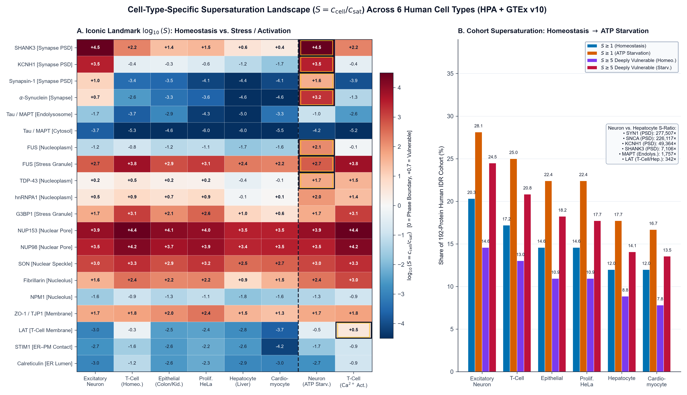

The Cross-Species IDR & LLPS Cell Atlas
Polymer Physics, Cellular Microenvironments, Multicomponent Active Condensates, Out-of-Sample Falsification & Spatiotemporal Signalosomes
Epistemic Confidence Legend (15 Audited Atlas Claims · Chapter 12)
C04, C06, C08, C14).C01, C03, C05, C09, C10, C11).C12, C15).C02, C07, C13).Table of Contents
List of Plates (Print-Light Vector Edition)
Chapter 00 — Atlas Overview: Visualizing the Cell as a Phase-State Landscape
"Rather than a bag of freely diffusing rigid machines separated solely by lipid bilayers, the living cell is a coupled archipelago of polymeric microenvironments—where intrinsically disordered regions translate local pH, ions, ATP, RNA, crowding, lipid electrostatics, and metabolic PTM fluxes into reversible mesoscale organization."
1. Motivation & Conceptual Architecture
Classical structural cell biology maps proteins as folded domains sorted into membrane-bound compartments. Yet nearly half of all reviewed human proteins (48.95%, 9,995 / 20,420) harbor long Intrinsically Disordered Regions (IDRs ≥ 25 aa), accounting for 21,263 discrete regions and 13.45% of all amino acid residues in the human proteome. Because IDRs lack a single fixed tertiary minimum, their conformational ensembles (Flory scaling exponent ν, radius of gyration Rg) and collective phase transitions (liquid–liquid phase separation [LLPS], complex coacervation, 2D membrane prewetting, viscoelastic gelation, and amyloid maturation) are exquisitely coupled to their surrounding physicochemical microenvironment and substrate availability.
This atlas integrates four pillars into a unified, reproducible scientific framework:
| Layer | Implementation | Empirical / Quantitative Scope |
|---|---|---|
| 1. Sequence & Ensemble Catalog | idr_atlas.sqlite, biophysics.py | 51,896 reviewed proteins, 34,921 curated IDRs across 6 full proteomes + viral/tardigrade/extremophile landmarks |
| 2. Compartment Microenvironments | compartments.py, compartment_matrix.json | 18 organelles & subcompartments parameterized by pH, salt, crowding φc, [ATP], [RNA]/[DNA], Ca2+/Zn2+/Mg2+, redox Eh, anionic lipid ψ0, chaperones |
| 3. Substrate & Metabolic Gating | substrates.py, landmark_atlas.json | 12 physiological/stress regimes spanning cosolutes/energetics, biopolymers, metabolic PTMs (ATP, SAM, Acetyl-CoA, UDP-GlcNAc, NAD+), and proteostasis |
| 4. Interactive Cell Observatory | web/serve.py, web/index.html | Live SVG cellular phase map, 13-slider custom-sequence phase-diagram lab, full SQLite proteome explorer, and interactive Das–Pappu/Flory landscapes |
2. Headline Empirical Findings from the 51,896-Protein Survey
- Extreme Evolutionary Plasticity of Disorder Across Domains of Life: Using strict UniProt/MobiDB-lite consensus (≥ 25 aa) across all six reviewed proteomes reveals a nearly 50-fold span in disorder prevalence driven by cellular physiology and environmental physics:
- Methanocaldococcus jannaschii (Hyperthermophilic Archaeon, 85°C): 1.06% proteins with IDRs (0 long IDRs ≥ 100 aa, ultra-charged FCR=0.477, basic NCPR=+0.113).
- Escherichia coli K-12 (Bacteria): 4.64% (326 IDRs, median 34 aa, specialized around BR-bodies, nucleoid repair, and Z-ring tethers).
- Halobacterium salinarum (Extreme Halophilic Archaeon, 4 M KCl): 21.82% (20× higher than the hyperthermophile), shifted dramatically acidic (NCPR=−0.135) to maintain hydration shells in hypersaline cytosol.
- Arabidopsis thaliana (Plant): 33.37% (8,534 IDRs, 895 ≥ 100 aa).
- Saccharomyces cerevisiae (Fungi): 37.04% (4,632 IDRs, highest mean aromaticity faro=0.0313).
- Homo sapiens (Metazoa): 48.95% (21,263 IDRs, 3,698 ≥ 100 aa, median 47 aa).
- Organelle-Sequence Co-Evolution: Resident IDRs are not randomly distributed across organelles—their sequence chemistry co-evolves with their compartment's exact pH, polyelectrolyte density, and ATP budget:
- Acidic secretory/degradative lumens carry the most negatively charged resident IDRs in eukaryotes: Endolysosome (pH 4.80, mean NCPR=−0.042), Golgi (pH 6.30, −0.035), and ER Lumen (0.5 mM Ca2+, −0.029).
- Membraneless RNP & synaptic hubs are enriched 15-fold in homeostatic LLPS-poised IDRs compared to bulk cytosol: Stress Granules (9.1% poised, highest aromaticity faro=0.036, most compact mean Flory ν=0.541) and Synapse / PSD (9.0% poised, 1.71 experimental phosphosites/100 aa) vs. Bulk Cytosol (0.6% poised).
- Nuclear regulatory compartments carry extreme experimental phosphorylation densities—Heterochromatin (1.91 phosphosites/100 aa), Nuclear Pore (1.72), Nuclear Speckles (1.66), and Nucleolus (1.43, highest eukaryotic FCR=0.348)—enabling rapid ATP/kinase phase switching.
- System-Wide Metabolic Phase-Boundary Sensitivity:
- Dropping cellular ATP + mild acidosis (ATP Starvation) drives a 6.5-fold surge in cytosolic IDRs crossing the phase boundary (0.6% → 3.9%) and doubles condensation across eukaryotes globally (Human 2.31% → 5.89%, Yeast 1.92% → 4.97%, Plant 1.45% → 3.61%).
- Hyperosmotic shrinkage (high salt + crowding surge) simultaneously dissolves pure electrostatic polyampholyte condensates while triggering hydrophobic/crowding-driven phase separation across 4.6% of cytosol, 19.1% of RNP granules, and 20.1% of synaptic PSD IDRs.
- Mitotic / signaling hyperphosphorylation acts as a global cytosolic dissolvase (cytosol LLPS drops 6× from 0.6% → 0.1%), while selectively nucleating positively charged IDRs (e.g., Tau, HP1α N-tail) by neutralizing electrostatic repulsion.
3. Chapter Roadmap
- Chapter 01: IDR Taxonomy & Sequence Grammar — Das–Pappu regimes, SCD/SHD/κ/Ωaro, stickers-and-spacers, and the 12 biophysical archetypes.
- Chapter 02: Polymer Physics & Quantitative LLPS Theory — Exact equations behind our Flory ν, Henderson–Hasselbalch PTM titration, Flory–Huggins + RPA free energy, common-tangent binodals, and re-entrant coacervation engine.
- Chapter 03: Cellular Compartment Microenvironments — Deep biophysical profiles of all 18 compartments paired with empirical proteome-resident IDR statistics.
- Chapter 04: Substrate Availability & Metabolic Gating — How ATP, RNA/DNA/PAR, Ca2+/Zn2+, osmolytes, ROS, lipids, and PTM-gating metabolites (SAM, Acetyl-CoA, UDP-GlcNAc, NAD+) steer phase transitions.
- Chapter 05: Cross-Species Evolutionary Survey — Comparative genomics of disorder from deep-sea hyperthermophilic archaea and halophiles to plants, fungi, metazoans, tardigrades, and viruses.
- Chapter 06: Landmark IDR Compendium — Quantitative reference profiles across our 67 experimentally validated landmark IDRs.
Chapter 01 — IDR Taxonomy & Sequence Grammar
Unlike folded domains—where primary sequence encodes a unique native 3D fold—an IDR's primary sequence encodes an ensemble distribution and an interaction grammar (which partners, surfaces, and substrates it couples to, and where its phase boundaries lie).
1. The Four Fundamental Sequence-Grammar Axes
A. Charge Composition & The Das–Pappu State Diagram (R1–R5)
Introduced by Das & Pappu (2013, PNAS), the fraction of charged residues (FCR = f+ + f−) and net charge per residue (NCPR = f+ − f−) partition disordered sequences into five conformational regimes:
| Region | Criterion | Ensemble Behavior | Prototypical Examples |
|---|---|---|---|
| R1 | FCR < 0.25, |NCPR| < 0.25 | Weak polyampholytes; compact globules / tadpoles controlled by aromatic & polar solvation | FUS PLD, TDP-43 LCD, NUP98 GLFG, Tropoelastin, Pab1 P-domain |
| R2 | 0.25 ≤ FCR ≤ 0.35, |NCPR| ≤ 0.35 | Janus / boundary sequences — acutely sensitive to salt, pH, crowding, and PTMs | G3BP1 IDR, MED1 IDR, α-Synuclein, Tau MTBR |
| R3 | FCR > 0.35, |NCPR| ≤ 0.35 | Strong polyampholytes; coils, hairpins, or electrostatic condensates governed by charge patterning (κ, SCD) | DDX4 N-term, NPM1 central IDR, SRRM2/SON speckles, RNase E C-tail |
| R4 | NCPR < −0.35 | Negatively charged swollen polyelectrolyte coils; require Ca2+, acidic pH, or polycation partners to condense | Calreticulin C-tail, Nucleolin acidic blocks, Halophile IDRs |
| R5 | NCPR > +0.35 | Positively charged swollen polyelectrolyte coils; condense via complex coacervation with RNA/DNA/PAR or PIP2 lipids | Histone H1.4 C-tail, MARCKS effector, HIV-1 Tat, FBL GAR |
Critical Insight: In our model, FCR, NCPR, and Das–Pappu region are not static constants—they are functions of compartment pH and metabolic PTM occupancy. For example, phosphorylating 45% of Ser/Thr sites on FUS PLD shifts it from neutral R1 (NCPR=−0.03, compact ν=0.46) into negatively charged R2/R3 (NCPR=−0.24, expanded ν=0.64), dissolving its condensates.
B. Charge & Sticker Patterning (κ, SCD, SHD, Ωaro)
Two sequences with identical amino acid composition can have radically different radii of gyration and saturation concentrations (csat) differing by orders of magnitude:
- κ (Das & Pappu 2013): Ranges from 0 (strictly alternating
+-charges → expanded coils) to 1 (diblock++++----→ compact hairpins and strong electrostatic LLPS). - SCD (Sequence Charge Decoration, Sawle & Ghosh 2015): Strongly negative SCD indicates segregated opposite-charge blocks driving polyampholyte attraction (e.g., DDX4, LAF-1, NPM1, SRRM2); strongly positive SCD indicates like-charge repulsion.
- SHD (Sequence Hydropathy Decoration, Zheng et al. 2020): Quantifies clustering of hydrophobic/sticky residues; higher SHD lowers Flory ν and promotes compaction/demixing.
- **Ωaro (Martin et al. 2020, Science)**: Measures aromatic (Y/F/W) sticker spacing. Uniformly spaced aromatics (low Ωaro, as in hnRNPA1 LCD) yield liquid condensates, whereas clustered aromatics (high Ωaro) risk irreversible amorphous aggregation.
C. Stickers-and-Spacers Architecture & Arg vs. Lys Discrimination
Following the associative polymer paradigm (Choi, Holehouse & Pappu 2020, Annu Rev Biophys):
- Stickers form reversible physical cross-links (valency ns, interaction energy εs):
- Aromatics (Tyr, Phe, Trp): Drive π–π stacking and cation-π contacts (Tyr is more hydrophilic/liquid-compatible than Phe/Trp).
- Arginine vs. Lysine (
R/(R+K)ratio): Despite identical +1 charge at physiological pH, Arginine's planar guanidinium group forms ~3× stronger cation-π and sp2/π hydrogen-bond networks with Tyr/Phe and RNA bases than Lysine's tetrahedral amine (Wang et al. 2018, Cell; Bremer et al. 2022, Nat Chem). Crucially, SAM-dependent PRMT methylation of Arg selectively weakens cation-π stickiness without changing net charge! - Aliphatics (Val, Leu, Ile, Met): Drive entropic hydrophobic LCST (Lower Critical Solution Temperature) phase separation that strengthens upon warming (Tropoelastin, Pab1, ELF3).
- Spacers (Gly, Ser, Gln, Asn, Thr, Pro, Ala) control solvation quality, chain stiffness, and dense-phase material properties:
- Gly increases backbone flexibility and liquidity; Ser/Gln/Asn tune cohesive H-bonding (excess Q/N drives prion-like aging); Pro introduces conformational rigidity that raises ν and resists β-sheet amyloid stacking!
D. Evolutionary & Functional Motif Grammar
- LARKS (Low-Complexity Aromatic-Rich Kinked Segments) & Prion-Like Domains (PLDs): Mediate labile β-kinked interactions that can age into pathogenic amyloid fibrils (FUS, TDP-43, hnRNPA1) when ATP hydrotrope or chaperone surveillance fails.
- RGG/RG Boxes: Dual RNA-binding, PAR-binding, and cation-π modules regulated by PRMT Arg methylation.
- FG / GLFG / FxFG & YG Repeats: Cohesive aromatic-hydrophobic meshworks forming selective permeability hydrogels in both the Nuclear Pore Complex (NUP98) and Peroxisomal importomer (PEX13).
- RS / Mixed-Charge Blocks: Kinase-gated electrostatic switches (SRRM2, SON, SRSF1) organizing nuclear speckles.
- PY-NLS & SLiMs: Short Linear Motifs recruiting Nuclear Import Receptors (Kapβ2/TNPO1 acts as an ATP-independent disaggregase/chaperone!) or 14-3-3 signaling scaffolds.
2. The 12 Mechanistic IDR Archetypes in Our Atlas
Every one of the 34,921 IDRs in our cross-species database is automatically classified into 12 biophysical archetypes based on its quantitative grammar:
- Prion-Like / Aromatic-Polar (PLD) — High Q/N/S/Y/G PLD score, low FCR, strong aromatic π–π UCST condensates with high aging risk (e.g., FUS, TDP-43, TIA1, Sup35 N, ELF3, FCA).
- RGG / Cation-π RBP — High RGG density + Gly + Tyr/Phe; strong RNA/PAR re-entrant phase behavior and SAM/Arg-methylation sensitivity (e.g., FUS RGG, FBL GAR, hnRNPA1, DDX3X).
- RS / Mixed-Charge Splicing Block — Dense Arg-Ser dipeptides; CLK/SRPK ATP-kinase switches governing nuclear speckles (e.g., SRRM2, SRSF1, SON).
- FG/YG Hydrogel Repeat — Cohesive Phe-Gly or Tyr-Gly repeats; shielded by O-GlcNAcylation in NPC and melted by import receptors (e.g., NUP98, NUP153, Nsp1, PEX13).
- Polyelectrolyte Acidic (D/E-Rich) — Strongly negative NCPR (≤ −0.18); swollen coils buffered in cytosol that respond to Ca2+ bridging (ER/Golgi/ECM), acidic lysosomal/Golgi pH, or heterotypic basic partners (e.g., Calreticulin, NPM1 acidic tracts, Chromogranin A, Osteopontin, Halophile IDRs).
- Polyelectrolyte Basic (RNA/DNA/Membrane) — Strongly positive NCPR (≥ +0.15); condense via complex coacervation with chromatin/RNA/PAR or 2D prewetting on PIP2 membranes, dissolved by Acetyl-CoA Lys acetylation (e.g., Histone H1.4, MeCP2, TFAM, HIV-1 Tat).
- Polyampholyte Charge-Block (E/K/R/D) — High FCR (≥ 0.30), near-neutral NCPR; salt-sensitive electrostatic condensates melting at high ionic strength (e.g., DDX4, Nucleolin, RNase E, PopZ).
- Hydrophobic / LCST Elastomeric — High aliphatic (V/L/I/A) + Pro/Gly; entropically driven LCST condensates induced by warming or crowding (e.g., Tropoelastin, Pab1 P-domain, UBQLN2).
- Amphipathic / Polybasic Membrane-Sensor — Local basic patch (≥ 0.38) + hydrophobic anchors; 2D prewetting on inner-leaflet PIP2/PS switched off by PKC phosphorylation or Ca2+/CaM (e.g., MARCKS, STIM1 C-tail, KCNH1 C-tail, α-Synuclein).
- Redox / pH / Metal Stimulus Sensor — Enriched in Met (ROS Met→MetO melting, e.g., Pbp1), His (pH 6.5 protonation switch), or Cys (redox disulfide / Zn2+ coordination).
- Pro/Gly-Rich Signaling Linker — Stiffened by Proline (fPro ≥ 0.16); resists amyloidogenesis, scaffolds multivalent SH3/WW/PDZ domains and senses macromolecular crowding (e.g., WNK1, SHANK3, BRD4, Synapsin-1).
- Balanced Polar / Context-Dependent IDR — Moderate FCR/polar composition acting as flexible tethers, PTM scaffolds, or heterotypic clients recruited into condensates under stress.
Chapter 02 — Polymer Physics & Quantitative LLPS Theory
This chapter documents the exact mathematical formulations implemented in biophysics.py that bridge amino acid sequence grammar, compartment microenvironments, and substrate availability to single-chain dimensions (ν, Rg) and multi-chain phase boundaries (csat, cdense, phase state).
1. Dynamic Henderson–Hasselbalch & Metabolic PTM Electrostatics
At compartment pH and metabolic PTM occupancy vector (θP, θmeR, θacK, θGlcNAc, θox), the effective charge qi of every residue i ∈ {1,…,N} is calculated continuously:
- Acidic side chains (a ∈ {D, E, C, Y}):qa(pH) = −11 + 10pKa − pHwith pKa = {3.90, 4.25, 8.30, 10.10}, scaling Cys by (1 − θox) upon disulfide/oxidative modification.
- Basic side chains (b ∈ {H, K, R}):qb(pH) = +11 + 10pH − pKawith pKa = {6.50, 10.50, 12.48}, scaling Lys by (1 − θacK) because Acetyl-CoA-dependent acetylation neutralizes +1 → 0.
- Phosphorylated Ser/Thr/Tyr (ATP/kinase-gated, dianionic phosphate pKa2 = 6.10):qphospho(pH) = −1 − 11 + 106.10 − pHNotice that phosphoserine carries −1.94 e at nucleoplasmic pH 7.35 but only −1.05 e at lysosomal pH 4.80!
2. Exact Fast Patterning Metrics
- Sequence Charge Decoration (SCD, Sawle & Ghosh 2015) evaluated exactly to machine precision in O(N log N) via FFT autocorrelation:SCD = 1N∑i=2N∑j=1i−1 qi qj √i − j = 1N∑d=1N−1√d∑j=1N−d qj qj+d
- Sequence Hydropathy Decoration (SHD, Zheng et al. 2020) evaluated exactly in O(N) via prefix sums on the HPS-Urry stickiness scale λi:SHD = 1N∑i=2N∑j=1i−1(λi + λj)|i − j|−1
- Debye–Hückel Electrostatic Screening incorporating monovalent salt (I), divalents (Mg2+, Ca2+), and polyvalent ATP:Itot = Isalt + 3([Mg2+] + [Ca2+]) + 4[ATP], κD = √Itot / 10000.304 nm−1ssalt = 11 + 0.55 κD
3. Single-Chain Conformational Ensemble (ν, Rg, Ree)
Calibrated to proteome-wide CALVADOS-2 simulations (Tesei et al. 2024, Nature) and SHD/SCD scaling laws (Zheng et al. 2020, JPCB), the apparent Flory scaling exponent ν ∈ [0.33, 0.72] responds continuously to sticker compaction, charge repulsion, Proline stiffness, salt screening, ATP hydrotrope shielding (θATP = [ATP]/([ATP] + 2.2 mM)), and crowding:
- ν < 0.48: Collapsed sticker-rich globule (strong homotypic LLPS propensity; e.g., FUS PLD ν ≈ 0.46).
- ν ≈ 0.50: Ideal θ-chain (poised near the phase boundary).
- ν ≈ 0.588: Self-avoiding walk (good solvent; soluble disordered linker).
- ν > 0.62: Swollen polyelectrolyte coil (strong net charge repulsion; e.g., Calreticulin, Histone H1, Halophile IDRs).
4. Mean-Field Flory–Huggins + RPA Phase-Separation Thermodynamics
Modeling an IDR of length N with Kuhn degree of polymerization Neff = max(8, N/3), the dimensionless free-energy density per lattice site (in kB T) is:
where w3 = 0.25 captures three-body excluded-volume saturation and αRPA ∝ max(0, −SCD/√N) ssalt incorporates polyampholyte Random Phase Approximation electrostatic correlations (Lin & Chan 2017; Ghosh, Mazarakos & Zhou 2019).
Decomposed Effective Interaction Parameter χeff
Every biophysical driving force enters transparently as an additive component of χeff:
- Aromatic π–π (χaro): UCST (∝ (T0/T)1.4), amplified by aromatic clustering Ωaro and prion-like score.
- Cation-π (χcat−π): Mpipi/Wang et al. discrimination where Argeff = fArg(1 − 0.45 θmeR) interacts 3.3× stronger with aromatics than Lysine (0.30 fLys(1−θacK)).
- Hydrophobic & Entropic LCST (χhydro/LCST): Aliphatic + Pro/Gly elastomeric contacts scale positively with temperature (1 + 0.055(T − 305.15 K)), reproducing LCST heat-induced condensation (Tropoelastin, Pab1, ELF3), while Met→MetO oxidation selectively strips Methionine stickiness (Kato et al. 2019, Cell Pbp1 switch).
- Self-Electrostatics (χelec): Balances net-charge repulsion (−4.20 NCPR2 ssalt1.2) against blocky polyampholyte attraction (+1.08 max(0, −SCDnorm)(0.65+0.95κ)ssalt1.25).
- Re-Entrant Polyanion Coacervation (χRNA/DNA/PAR): Bell-shaped stoichiometric envelope in R = Cpolyanion/Copt: peaks at charge neutralization (R ≈ 1, driving RNP condensation) and turns negative (dissolution) at high excess RNA (R > 2.8, reproducing Banerjee et al. 2017; Maharana et al. 2018; Henninger et al. 2021). PAR chains provide high-density anionic nucleation specifically onto RGG/basic domains.
- ATP Biological Hydrotrope (χATP): Langmuir masking (θATP = [ATP]/([ATP]+2.2 mM)) preferentially lowers χaro + χcat−π (Patel et al. 2017, Science).
- Crowding Depletion (χcrowd): Asakura–Oosawa osmotic compression ∝ φc / (1 − φc).
- Divalents & Cosolutes (χdiv/cosol): Ca2+ bridging of acidic D/E tracts, Zn2+ coordination of His/Cys motifs, poly-Ub scaffolding, and desiccation osmolytes.
- Redox & Proteostasis (χredox, χPTM/chap): Disulfide cross-linking in oxidizing lumens (Eh > −195 mV) vs. O-GlcNAc hydrophilic spacer repulsion and Karyopherin/Hsp70 buffering (enhanced on PY-NLS IDRs).
- Membrane 2D Prewetting (χmem): Gouy–Chapman attraction between anionic leaflets (ψ0 < 0 mV, PIP2/PS/cardiolipin) and local polybasic patches, lowering condensation thresholds below bulk csat.
Exact Common-Tangent Binodal Solver
Whenever f′′(φ) < 0 on the grid φ ∈ [10−8, 0.90], Andrew's monotone-chain lower convex hull extracts the exact coexisting dilute and dense volume fractions (φsat, φdense) satisfying equal chemical potential μ(φsat) = μ(φdense) and equal osmotic pressure Π(φsat) = Π(φdense), converted to physiological molar saturation concentration csat (μM) and dense-phase concentration cdense (mM).

Chapter 03 — Cellular Compartment Microenvironments & Resident IDR Co-Evolution
Every cellular organelle establishes a distinct physicochemical coordinate in (pH, I, φc, [ATP], [RNA/DNA], [Ca2+], [Zn2+], Eh, ψ0) space. Analyzing all 34,921 curated IDRs across our 6 cross-domain proteomes reveals that resident IDR sequences systematically co-evolve with their host compartment's physical chemistry.

1. Complete 18-Compartment Quantitative Matrix (Empirical Proteome Data)
| Compartment | Resident IDRs | pH | ATP (mM) | RNA (ng/µL) | Crowding φc | Mean NCPR | Mean FCR | faro | Flory ν | Phospho / 100aa | LLPS % Homeo | LLPS % ATP Starv. | LLPS % HyperOsm |
|---|---|---|---|---|---|---|---|---|---|---|---|---|---|
| Cytosol | 4,821 | 7.25 | 3.50 | 120 | 0.25 | -0.004 | 0.288 | 0.027 | 0.562 | 0.70 | 0.6% | 3.9% | 4.6% |
| RNP / Stress Granule | 691 | 6.85 | 0.80 | 1,200 | 0.38 | +0.003 | 0.243 | 0.036 | 0.541 | 1.16 | 9.1% | 15.3% | 19.1% |
| Nucleoplasm | 12,157 | 7.35 | 3.50 | 600 | 0.22 | -0.012 | 0.282 | 0.028 | 0.563 | 0.78 | 1.2% | 3.4% | 3.5% |
| Nucleolus | 2,102 | 7.10 | 2.20 | 2,000 | 0.36 | +0.003 | 0.348 | 0.027 | 0.564 | 1.43 | 3.8% | 8.0% | 11.7% |
| Nuclear Speckles | 930 | 7.30 | 3.00 | 1,500 | 0.32 | -0.009 | 0.280 | 0.026 | 0.558 | 1.66 | 3.3% | 5.7% | 9.7% |
| Nuclear Pore (NPC) | 798 | 7.30 | 3.20 | 250 | 0.34 | -0.026 | 0.280 | 0.031 | 0.560 | 1.72 | 2.3% | 6.9% | 9.4% |
| Heterochromatin | 456 | 7.30 | 3.00 | 200 | 0.35 | +0.003 | 0.304 | 0.025 | 0.557 | 1.91 | 3.7% | 10.3% | 13.4% |
| Mito Matrix | 1,438 | 7.85 | 5.00 | 400 | 0.38 | -0.009 | 0.286 | 0.029 | 0.557 | 0.96 | 2.3% | 6.5% | 6.5% |
| Mito IMS | 39 | 6.85 | 3.00 | 10 | 0.18 | -0.034 | 0.289 | 0.025 | 0.579 | 0.69 | 0.0% | 0.0% | 0.0% |
| ER Lumen | 1,621 | 7.20 | 2.00 | 0 | 0.24 | -0.029 | 0.281 | 0.026 | 0.566 | 1.01 | 1.5% | 4.0% | 5.1% |
| Golgi Lumen | 1,504 | 6.30 | 1.00 | 0 | 0.22 | -0.035 | 0.241 | 0.027 | 0.563 | 0.89 | 0.6% | 2.2% | 3.7% |
| Endolysosome | 977 | 4.80 | 0.30 | 30 | 0.20 | -0.042 | 0.257 | 0.028 | 0.560 | 1.02 | 3.9% | 5.3% | 8.6% |
| Peroxisome | 99 | 7.05 | 2.00 | 0 | 0.30 | -0.020 | 0.273 | 0.021 | 0.560 | 0.88 | 1.0% | 3.0% | 7.1% |
| Plasma Membrane | 3,520 | 7.10 | 3.20 | 40 | 0.28 | -0.018 | 0.261 | 0.027 | 0.560 | 0.87 | 1.7% | 5.7% | 6.5% |
| Synapse / PSD | 1,456 | 7.20 | 3.00 | 150 | 0.37 | -0.016 | 0.260 | 0.029 | 0.551 | 1.71 | 9.0% | 18.1% | 20.1% |
| Extracellular / ECM | 757 | 7.40 | 0.001 | 0 | 0.06 | -0.002 | 0.263 | 0.027 | 0.574 | 0.46 | 2.0% | 2.5% | 4.9% |
| Chloroplast Stroma | 1,239 | 8.00 | 3.00 | 400 | 0.34 | -0.024 | 0.294 | 0.031 | 0.562 | 0.18 | 1.1% | 3.1% | 2.8% |
| Bacterial Cytoplasm | 316 | 7.60 | 5.00 | 1,500 | 0.35 | -0.005 | 0.339 | 0.025 | 0.569 | 0.00 | 0.9% | 1.6% | 2.8% |
2. Mechanistic Design Rules by Organelle Class
A. Nuclear & Subnuclear Archipelago (Nucleoplasm, Nucleolus, Speckles, Heterochromatin, NPC)
- Polyanion-Dominated Re-Entrant Buffering: The nucleoplasm houses the largest absolute population of IDRs (12,157 IDRs), bathing them in chromatin DNA and nascent RNA. Abundant bulk RNA acts as an anti-aggregation electrostatic buffer (Maharana et al. 2018, Science), keeping FUS/TDP-43 soluble until localized DNA-damage PAR bursts or cytoplasmic export strip away nuclear RNA.
- Tripartite Nucleolar Phase Grammar: Nucleolar IDRs exhibit the highest FCR in eukaryotes (0.348) and are dominated by Polyampholyte Charge-Block architectures (NPM1 acidic D/E tracts paired with FBL/ribosomal Arg-rich motifs). King et al. (2024, Cell) showed that this extreme acidic/basic partitioning generates an intrinsic nucleolar proton gradient (lower internal pH) reinforcing immiscible FC/DFC/GC layers.
- Kinase-Gated Dynamics: Heterochromatin (1.91 phosphosites/100 aa), NPC (1.72), and Nuclear Speckles (1.66) possess the cell's highest experimental phosphorylation densities—enabling rapid mitotic dissolution (CDK1, DYRK3) and splicing-cycle remodeling (CLK1–4, SRPK1/2).
- NPC & Peroxisome Convergent Evolution: Both the Nuclear Pore Complex (NUP98 GLFG) and Peroxisomal Importomer (PEX13 YG repeats; Ravindran et al. 2023, Science) independently evolved aromatic-Gly cohesive IDR hydrogels melted transiently by soluble transport receptors (Karyopherins / PEX5).
B. Cytosol & RNP Stress Granules
- ATP-Buffered Solubility: Bulk cytosol maintains only 0.6% of its 4,821 IDRs in a condensed state during fed homeostasis because 3.5 mM ATP acts as an amphiphilic hydrotrope shielding aromatic/cation-π stickers. When glucose/ATP drops and cytosolic pH falls by 0.75 units, cytosolic LLPS surges 6.5-fold (to 3.9%), driving adaptive dormancy gels (Sup35, Ded1, stress granules).
- Stress Granule Pre-Tuning: Resident stress granule IDRs (691 IDRs) display the cell's highest mean aromatic sticker fraction (faro = 0.036) and most compact conformational ensembles (ν = 0.541)—literally sitting perched on the knife-edge of percolation.
C. Secretory & Degradative Lumens (ER → Golgi → Endolysosome → ECM)
- The Acidic Charge Compensation Gradient: Moving down the secretory/endocytic pH gradient (ER pH 7.20 → Golgi pH 6.30 → Endolysosome pH 4.80), resident IDR net charge becomes progressively more negative (
-0.029 → -0.035 → -0.042). Why? Protonation of Asp/Glu at low pH strips away negative electrostatic repulsion; extra acidic residues preserve luminal solubility until physiological pH + Ca2+ triggers regulated trans-Golgi secretory granule condensation (Chromogranin A/B; Parchure et al. 2022, Nature). - Lysosomal Amyloid Trap: Translocating cytosolic or aggregation-prone IDRs (α-Synuclein, Tau, FUS) into the pH 4.80, ATP-poor (0.3 mM), chaperone-poor endolysosome neutralizes protective acidic tails and sharply elevates solid/amyloid maturation risk.
- Extracellular Hydrotrope Vacuum: With virtually zero ATP (1 µM), oxidizing redox (-120 mV), and 1.8 mM Ca2+, extracellular IDRs rely on hydrophobic Pro/Gly LCST coacervation (Tropoelastin), Fam20C phosphoserine-Ca2+ nanoclusters (Casein, Osteopontin), or dense O-glycan bottle-brushes (Mucins).
D. Membrane Interfaces, Contact Sites & Synapses
- 2D Surface Prewetting: The plasma membrane inner leaflet carries ~15–20% phosphatidylserine + 1–3% PI(4,5)P2 (ψ0 ≈ −45 mV). This electrostatic field recruits polybasic IDRs (MARCKS, STIM1 C-tail, KCNH1 C-tail, LAT, ZO-1) into 2D surface condensates at 10–100× lower concentrations than bulk 3D csat (Snead et al. 2022, Nat Cell Biol).
- Excitable Synaptic Condensates: Synaptic/PSD IDRs (1,456 IDRs) match stress granules in LLPS poise (9.0% homeostatic, jumping to 20.1% under hyperosmotic crowding) while coupling to rapid Ca2+/CaMKII phosphorylation (Synapsin-1 dispersal) and synaptic Zn2+ (10–100 µM, Shank3/PSD scaffolding).
E. Bioenergetic & Prokaryotic Extremes (Mitochondria, Chloroplasts, Bacteria)
- Mitochondrial Matrix (pH 7.85, φc = 0.38, 5 mM ATP): Extreme macromolecular crowding (~400 mg/mL) competes with 5 mM ATP hydrotrope and alkaline pH, organizing mtDNA nucleoids (TFAM) and mitochondrial RNA granules while exposing IDRs to ETC ROS bursts.
- Chloroplast Stroma (Light pH 8.0 ↔ Dark pH 7.0, Mg2+ 3 mM): Photosynthesis physically switches stromal pH by a full unit and doubles free Mg2+, gating RuBisCO/pyrenoid (EPYC1) and twin-arginine sorting condensates.
- Bacterial Cytoplasm (250 mM K-glutamate, φc = 0.35, 1,500 ng/µL RNA): High ionic strength suppresses weak electrostatic coacervates while extreme crowding causes a fluid-to-glass transition upon metabolic arrest (Parry et al. 2014, Cell).
Chapter 04 — Substrate Availability & Metabolic Gating of IDR Phase Behavior
A core insight of modern cellular biophysics is that metabolites and substrates do not merely fuel enzymes—they directly reshape the thermodynamic phase diagram of the proteome through four coupled mechanisms.

1. Axis I — Small-Molecule Cosolutes & Cellular Energetics
A. ATP: Dual Biological Hydrotrope & Energy Currency
- At physiological concentrations (3–5 mM, orders of magnitude above typical kinase Km ∼ 10--100 μM), ATP acts as an amphiphilic hydrotrope (Patel et al. 2017, Science): its hydrophobic adenine ring stacks onto aromatic/Arg stickers while its hydrophilic triphosphate tail projects into water, raising csat and dissolving sticky RNP droplets.
- Metabolic Coupling: During glucose starvation or ischemia, ATP falls from 3.5 → 0.4 mM, simultaneously (1) stripping hydrotrope shielding, (2) acidifying the cytosol (ΔpH ≈ −0.75), (3) arresting ATP-dependent chaperones (Hsp70/VCP) and DEAD-box helicases, and (4) releasing bare untranslated mRNA from collapsing polysomes. In our 34,921-IDR survey, this concerted collapse drives a 2.5×–6.5× jump in phase-separating IDRs.
B. Intracellular pH, Ions & Osmolytes
- pH Switches: Histidine (pKa ≈ 6.5) and Asp/Glu (pKa ≈ 3.9--4.3) convert metabolic acidification (hypoxia, starvation, dormancy) and organellar gradients (Golgi pH 6.3, Lysosome pH 4.8, Chloroplast light pH 8.0) directly into conformational coil↔globule transitions (e.g., Yeast Sup35 protective dormancy gel, Franzmann et al. 2018, Science).
- Salt / Ionic Strength Bifurcation: Raising salt from 50 → 350 mM screens Debye–Hückel electrostatics (κD−1 shrinks from 1.4 → 0.5 nm), dissolving charge-block polyampholytes (DDX4, NPM1, HP1α, Histone H1) while salting-out / strengthening hydrophobic and aromatic LCST condensates (Tropoelastin, FUS at very high salt, WNK1).
- Divalent Cation Cross-Linking: Ca2+ (0.5 mM ER, 1.8 mM ECM, 10–50 µM signaling pulses) bridges acidic D/E-rich IDRs (Calreticulin, Chromogranin A, Casein, α-Synuclein C-tail); Zn2+ (10–100 µM synaptic cleft / ROS metallothionein release) coordinates His/Cys motifs (Shank3, Tau, HIV-1 Tat, TIA1).
- Osmolytes & Anhydrobiosis: During desiccation or hyperosmotic stress, trehalose, TMAO, and glycerol work alongside desiccation-specialist IDRs (Tardigrade CAHS D / CAHS3, Plant FLOE1 / COR15A) to form protective vitrified hydrogels.
C. Redox State & ROS (Chemically Orthogonal Met vs. Cys Switches)
- Methionine Oxidation Melts Condensates: Kato et al. (2019, Cell) demonstrated that mitochondrial H2O2 oxidizes hydrophobic Methionine residues in yeast Pbp1 / Ataxin-2 to strongly polar Methionine-sulfoxide (MetO), dissolving the condensate as a direct redox sensor.
- Cysteine Oxidation Cross-Links Condensates: Conversely, oxidizing potentials (Eh > −195 mV in ER/IMS/ROS stress) cross-link unpaired Cys into disulfides (e.g., TDP-43), hardening liquid droplets toward viscoelastic gels and aggregates.
2. Axis II — Biopolymer Scaffolds & Surface Interfaces
A. RNA & DNA Re-Entrant Phase Transitions
Positively charged RBPs and transcriptional coactivators (FUS, DDX4, MED1, BRD4, RNase E, SARS-CoV-2 N) exhibit closed-loop re-entrant phase behavior with nucleic acids (Banerjee et al. 2017; Henninger et al. 2021, Cell):
- Low RNA (R ll 1): Insufficient anionic bridging; basic IDRs remain dispersed by self-repulsion.
- Stoichiometric Match (R ≈ 1): Charge neutralization triggers rapid complex coacervation (minimum csat).
- High RNA Excess (R gg 1): Polyanion overcharging renders RNP complexes net-negative and mutually repulsive, re-dissolving condensates! This explains why transcriptional bursts self-terminate super-enhancer droplets and why nuclear RNA abundance keeps FUS/TDP-43 soluble until RNA depletion (ActD) or cytoplasmic mislocalization triggers aggregation.
B. Poly(ADP-Ribose) [PAR] & Poly-Ubiquitin Scaffolds
- NAD+ → PARylation: Upon DNA double-strand breaks, PARP1 consumes NAD+ to weave ultra-dense, branched anionic PAR chains, rapidly nucleating RGG-bearing FET proteins (FUS, EWSR1, TAF15) into transient repair compartments before DNA-PK phosphorylation disperses them.
- Poly-Ubiquitin Chains: K63/K48 poly-Ub chains serve as multivalent polymeric ligands driving phase separation of p62/SQSTM1 (selective autophagy) and RAD23B (nuclear proteasome foci), while mono-ubiquitin competitively dissolves UBQLN2 droplets.
C. Anionic Lipid Bilayers (PIP2 / PS / Cardiolipin Prewetting)
- Membrane tethering and negative Gouy–Chapman surface potential (ψ0 ≈ −35 to −45 mV) lower the critical concentration for 2D condensation by 10–100×, turning membrane contact sites (ER–PM STIM1/Orai, LAT TCR clusters, ZO-1 tight junctions, MARCKS, KCNH1 ion-channel tails) into spatially localized signaling phase switches.
3. Axis III — Metabolic Substrates Gating Post-Translational Modifications (PTMs)
Cellular metabolism directly writes onto IDR electrostatic and sticker codes via five central metabolic cofactors:
| Metabolic Substrate | Enzymatic Writer | Chemical Edit on IDR | Biophysical Effect on χeff & ν | Canonical Biological Switch |
|---|---|---|---|---|
| ATP | Kinases (CDK1, DYRK3, CLK, SRPK, CK2, CaMKII, PKC) | S/T/Y → pS/pT/pY (Δ q ≈ −1.94 e at pH 7.3) | Dissolves neutral/acidic PLDs & speckles; activates LLPS of overly basic IDRs (Tau, HP1α NTE); switches Pol II CTD initiation → splicing! | Mitotic condensate dissolution (DYRK3), Synapsin-1 vesicle release, MARCKS PM detachment |
| SAM (S-adenosylmethionine) | PRMT1 / PRMT5 | Arg → aDMA / sDMA (Δ q = 0, bulkier hydrophobic methyls) | Weakens Arg–Tyr/Phe cation-π stickers by ~45%; SAM depletion/hypomethylation causes toxic gelation! | FUS, hnRNPA1, DDX4, FBL, Coilin neuroprotection |
| Acetyl-CoA (vs. NAD+ sirtuins) | HATs (p300/CBP) vs. HDAC/SIRT | Lys → N6-acetyl-Lys (Δ q = −1 e: +1 → 0) | Dissolves chromatin/histone-tail & DDX3X RNA condensates; weakens PIP2 binding | Euchromatin opening (Gibson et al. 2019 Cell), DDX3X SG disassembly |
| UDP-GlcNAc (Hexosamine flux) | OGT / OGA | S/T → O-GlcNAc (Δ q = 0, bulky hydrophilic glycan) | Adds hydrophilic spacer shielding; prevents amyloid gelation of FG-Nups and Tau! | NUP98 NPC permeability maintenance, Pol II CTD, Tau protection |
| NAD+ | PARP1 / PARP12 / PARP13 | Synthesis of anionic poly(ADP-ribose) chains | Ultra-strong polyanionic nucleation scaffold for RGG/basic IDRs | DNA-damage repair condensates (FUS/53BP1), stress-granule PARP12/13 |
4. Axis IV — Macromolecular Crowding & Proteostasis Surveillance
- Depletion Attraction vs. Viscoelastic Caging: Acute hyperosmotic cell shrinkage (Δφc ≈ +0.12) instantaneously compresses excluded volume (Asakura–Oosawa depletion), triggering crowding-sensor condensates (WNK1, YAP1, DCP1A, FLOE1) within seconds.
- Chaperones & Karyopherins as Anti-Aging Buffers: Nuclear Import Receptors (Kapβ2 / TNPO1) bind PY-NLS motifs on FUS/hnRNPA1 and act as ATP-independent disaggregases, while Hsp70/Hsp40/Hsp104/VCP maintain dense-phase liquidity—explaining why ATP loss accelerates irreversible solid maturation.
Chapter 05 — Cross-Species Evolutionary Survey of Proteome Disorder
Using a single uniform consensus criterion (UniProtKB Swiss-Prot reviewed proteomes, MobiDB-lite curated IDRs ≥ 25 aa), we surveyed 51,896 reviewed proteins spanning Metazoa, Fungi, Plants, Bacteria, Hyperthermophilic Archaea, and Extreme Halophilic Archaea, plus curated viral, tardigrade, algal, and bacterial-condensate landmarks.

1. Comparative Proteome Statistics Across the Tree of Life
| Species | Domain / Ecology | Reviewed Proteins | Proteins w/ IDR (≥ 25 aa) | % Residues Disordered | Total IDRs | Long IDRs (≥ 100 aa) | Median Len (aa) | Mean FCR | Mean NCPR | Mean faro | Mean ν | LLPS Poised (Homeo → Starv.) |
|---|---|---|---|---|---|---|---|---|---|---|---|---|
| Homo sapiens | Eukaryota (Metazoa) | 20,420 | 9,995 (48.9%) | 13.45% | 21,263 | 3,698 | 47.0 | 0.274 | -0.012 | 0.0260 | 0.562 | 2.3% → 5.9% |
| S. cerevisiae | Eukaryota (Fungi) | 6,733 | 2,494 (37.0%) | 9.51% | 4,632 | 588 | 46.0 | 0.286 | -0.018 | 0.0313 | 0.561 | 1.9% → 5.0% |
| A. thaliana | Eukaryota (Plant) | 16,399 | 5,473 (33.4%) | 6.53% | 8,534 | 895 | 41.0 | 0.296 | -0.013 | 0.0304 | 0.561 | 1.5% → 3.6% |
| H. salinarum | Archaea (Extreme Halophile, 4 M KCl) | 495 | 108 (21.8%) | 3.42% | 119 | 6 | 38.0 | 0.344 | -0.135 | 0.0189 | 0.588 | 0.8% → 1.7% |
| **E. coli K-12** | Bacteria (Mesophile) | 6,050 | 281 (4.6%) | 0.82% | 326 | 19 | 34.0 | 0.299 | +0.013 | 0.0258 | 0.565 | 0.3% → 0.6% |
| M. jannaschii | Archaea (Hyperthermophile, 85°C) | 1,786 | 19 (1.1%) | 0.13% | 19 | 0 | 35.0 | 0.477 | +0.113 | 0.0238 | 0.596 | 0.0% → 0.0% |
2. Five Major Evolutionary & Biophysical Takeaways
1. The Extremophile Bifurcation: Hyperthermophiles Purge Disorder While Halophiles Weaponize Acidic Disorder
- **M. jannaschii (85°C deep-sea hydrothermal vent) represents the lower extreme of biological disorder (1.06% proteins, 0.13% residues, zero** IDRs ≥ 100 aa). At 358 K, entropic unfolding and hydrophobic LCST aggregation pose lethal proteostasis threats; the few surviving short IDRs are ultra-charged (FCR=0.477), strongly repulsive (NCPR=+0.113, ν=0.596) coils that never self-condense.
- **H. salinarum (4 M KCl hypersaline brine) exhibits a 20-fold explosion in disorder over the hyperthermophile (21.8%) with an unmistakable chemical signature: mean NCPR = −0.135 (more than 10× more acidic** than human IDRs!) and minimal aromaticity (faro = 0.0189). Dense carboxylate shells bind ordered water layers that prevent salting-out precipitation in saturated KCl.
2. Prokaryotic Economy vs. Specialized Bacterial Condensates
- E. coli restricts long disorder to just 4.6% of its proteome (326 IDRs, median 34 aa), yet concentrates those few IDRs into high-leverage spatial organizers that compensate for the absence of membrane-bound organelles: RNase E (C-terminal charge-block IDR scaffolding mRNA-degrading BR-bodies), SSB (ssDNA repair condensates), FtsZ (Z-ring cytokinesis linker), plus non-model bacterial specialists PopZ (Caulobacter polar microdomain excluding ribosomes) and CsoS2 (Halothiobacillus α-carboxysome CO2-fixing organelle scaffold).
3. Eukaryotic Expansion of Regulatory, Signaling & Multiphase Complexity
- Crossing into eukaryotes drives a 7×–10× surge in proteome disorder (33–49%) and a massive expansion of long IDRs (≥ 100 aa): from 19 in E. coli to 588 in Yeast, 895 in Arabidopsis, and 3,698 in Human.
- **Fungi (S. cerevisiae) show the highest mean aromatic sticker content (faro=0.0313) and rely heavily on adaptive environmental stress condensates (Sup35 pH dormancy gel, Pab1 heat LCST sensor, Pbp1 ROS Met-oxidation switch, Whi3** polyQ mRNA polarity droplets).
- **Plants (A. thaliana & Chlamydomonas)—being sessile and unable to flee temperature or drought—evolved bespoke environmental-sensing IDRs: ELF3 (prion-like polyQ circadian thermosensor), FLOE1 (seed germination water-potential hydration sensor), COR15A (chloroplast freezing-protection LEA IDR), and algal EPYC1** (light-gated pyrenoid RuBisCO condensate).
- **Metazoans (H. sapiens) show the sharpest proliferation of ultra-long nuclear speckle scaffolds (SRRM2, SON), transcriptional coactivator IDRs (MED1, BRD4, Pol II CTD), and synaptic/membrane contact-site signaling tails (SHANK3, Synapsin-1, ZO-1, STIM1, KCNH1**) heavily decorated with combinatorial PTM switches.
4. Anhydrobiosis & Viral Hijacking of Host Phase Separation
- Tardigrades (H. exemplaris CAHS D, R. varieornatus CAHS3) turn whole-cell dehydration into a survival asset by transitioning hydrophilic amphipathic IDRs into reversible vitrified fibrous gels upon hyperosmotic water loss.
- Viruses (SARS-CoV-2 N, Measles N/P, Rabies P, HIV-1 Tat) deploy ultra-compact, densely disordered proteins (>55% disordered across our viral landmark set) to nucleate cytoplasmic replication factories (Negri bodies / N–RNA droplets) or hijack host nuclear transcriptional condensates (P-TEFb/Cyclin T1), exploiting host phosphorylation and RNA stoichiometry as replication-to-packaging switches.

Chapter 06 — Cross-Species Landmark IDR Compendium (67 Reference Entries)
Complete quantitative biophysical profiles for all 67 curated cross-species landmark IDRs spanning all 18 cellular compartments, simulated across 18 compartments × 12 substrate regimes (14,472 full binodal states).
| Landmark | Species | Native Comp. | Span (aa) | Archetype | DP | FCR / NCPR | f_aro | Homeo State (c_sat) | ATP Starv. | Hyper-Phos | High-RNA | Key Substrate Switches |
|---|---|---|---|---|---|---|---|---|---|---|---|---|
DDX3X (N-term IDR) (O00571) | human | RNP Granule | 1-165 (165) | Polyampholyte Charge-Block (E/K/R/D) | R2 | 0.32 / -0.02 | 10.9% | Viscoelastic Gel / Percolated (0.0 µM) | Viscoelastic Gel / Percolated | Viscoelastic Gel / Percolated | Viscoelastic Gel / Percolated | Acetyl-CoA/HDAC6 Lys acetylation, ATP hydrolysis, mRNA |
LAT (TCR Signaling Tail) (O43561) | human | Plasma Membrane | 34-262 (229) | Balanced Polar / Context-Dependent IDR | R1 | 0.22 / -0.11 | 7.0% | Near Phase Boundary (52.3 µM) | Viscoelastic Gel / Percolated | Near Phase Boundary | Near Phase Boundary | Lck/ZAP70 Tyr phosphorylation, PIP2/PS surface potential, Ca2+ |
BRD4 (C-term IDR) (O60885) | human | Nucleoplasm | 674-1362 (689) | Prion-Like / Aromatic-Polar (PLD) | R1 | 0.21 / +0.03 | 2.2% | Near Phase Boundary (473.3 µM) | Liquid Condensate (LLPS) | Near Phase Boundary | Near Phase Boundary | Acetyl-CoA (H3K27ac), RNA, CK2 phosphorylation |
KCNH1 / EAG1 (C-Term IDR) (O95259) | human | Plasma Membrane | 700-989 (290) | Polyampholyte Charge-Block (E/K/R/D) | R2 | 0.34 / +0.02 | 3.8% | Liquid Condensate (LLPS) (0.0 µM) | Viscoelastic Gel / Percolated | Liquid Condensate (LLPS) | Liquid Condensate (LLPS) | PM PIP2 potential, Ca2+/CaM surge, Phosphorylation |
p53 (TAD + C-term) (P04637) | human | Nucleoplasm | 1-95 (95) | Pro/Gly-Rich Signaling Linker | R1 | 0.20 / -0.16 | 5.3% | Soluble / Dispersed (189.4 µM) | Near Phase Boundary | Soluble / Dispersed | Soluble / Dispersed | DNA damage phospho, Acetyl-CoA, Zn2+ folding |
NPM1 (Acidic/Basic IDR) (P06748) | human | Nucleolus | 120-240 (121) | Balanced Polar / Context-Dependent IDR | R3 | 0.52 / -0.16 | 1.7% | Soluble / Dispersed (515.6 µM) | Soluble / Dispersed | Soluble / Dispersed | Soluble / Dispersed | rRNA, Nucleolar pH gradient, CK2 phospho |
hnRNPA1 (LCD/RGG) (P09651) | human | Nucleoplasm | 186-320 (135) | Prion-Like / Aromatic-Polar (PLD) | R1 | 0.09 / +0.01 | 14.8% | Solid / Amyloid Risk (0.3 µM) | Solid / Amyloid Risk | Solid / Amyloid Risk | Dynamic / Poised LLPS | RNA, Salt, Kapβ2 PY-NLS chaperoning |
Histone H1.4 (C-term Tail) (P10412) | human | Heterochromatin | 110-219 (110) | Polyelectrolyte Basic (RNA/DNA/Membrane) | R5 | 0.41 / +0.39 | 0.0% | Soluble / Dispersed (1746.5 µM) | Soluble / Dispersed | Soluble / Dispersed | Soluble / Dispersed | dsDNA/nucleosomes, Acetyl-CoA, CDK phospho |
Osteopontin / SPP1 (P10451) | human | Extracellular / ECM | 17-314 (298) | Polyampholyte Charge-Block (E/K/R/D) | R3 | 0.35 / -0.15 | 5.7% | Viscoelastic Gel / Percolated (0.3 µM) | Viscoelastic Gel / Percolated | Near Phase Boundary | Viscoelastic Gel / Percolated | Extracellular Ca2+ (1.8 mM), Fam20C Golgi phospho, pH |
Tau / MAPT (Pro-Rich+MTBR) (P10636) | human | Cytosol | 150-390 (241) | Balanced Polar / Context-Dependent IDR | R2 | 0.29 / -0.06 | 2.1% | Near Phase Boundary (170.2 µM) | Near Phase Boundary | Soluble / Dispersed | Near Phase Boundary | RNA, Hyperphosphorylation (triggers LLPS!), Acetyl-CoA |
Chromogranin A (CHGA) (P10645) | human | Golgi Lumen | 70-400 (331) | Polyampholyte Charge-Block (E/K/R/D) | R3 | 0.40 / -0.12 | 3.3% | Near Phase Boundary (155.6 µM) | Solid / Amyloid Risk | Near Phase Boundary | Near Phase Boundary | Golgi acidic pH (6.7 -> 6.0), Luminal Ca2+ (0.25-1 mM), ATP depletion |
LAMP1 (Lysosomal Glycocalyx) (P11279) | human | Endolysosome | 190-235 (46) | Pro/Gly-Rich Signaling Linker | R1 | 0.16 / +0.02 | 2.2% | Soluble / Dispersed (208.3 µM) | Near Phase Boundary | Soluble / Dispersed | Soluble / Dispersed | Acidic pH 4.8, Glycosylation, Ca2+/Zn2+ |
Tropoelastin / ELN (LCST) (P15502) | human | Extracellular / ECM | 27-786 (760) | Pro/Gly-Rich Signaling Linker | R1 | 0.07 / +0.05 | 4.1% | Viscoelastic Gel / Percolated (0.0 µM) | Viscoelastic Gel / Percolated | Viscoelastic Gel / Percolated | Viscoelastic Gel / Percolated | Temperature (LCST above 35-37 C), Salt/ionic strength, Zero extracellular ATP |
Synapsin-1 (C-term IDR) (P17600) | human | Synapse / PSD | 415-705 (291) | Pro/Gly-Rich Signaling Linker | R1 | 0.13 / +0.08 | 1.0% | Near Phase Boundary (130.9 µM) | Dynamic / Poised LLPS | Near Phase Boundary | Near Phase Boundary | Ca2+/CaMKII phosphorylation (disperses droplets!), ATP, Lipid vesicles |
SON (Speckle Scaffold) (P18583) | human | Nuclear Speckles | 1-650 (650) | Amphipathic / Polybasic Membrane-Sensor | R1 | 0.22 / -0.07 | 2.0% | Liquid Condensate (LLPS) (0.0 µM) | Viscoelastic Gel / Percolated | Dynamic / Poised LLPS | Liquid Condensate (LLPS) | CLK/SRPK phospho, MALAT1 RNA, Mitotic CDK1 |
Nucleolin / NCL (N-term) (P19338) | human | Nucleolus | 1-300 (300) | Polyelectrolyte Acidic (D/E-Rich) | R3 | 0.53 / -0.21 | 0.0% | Soluble / Dispersed (665.9 µM) | Soluble / Dispersed | Soluble / Dispersed | Soluble / Dispersed | rRNA, Salt, CK2/CDK1 phospho |
Fibrillarin / FBL (GAR) (P22087) | human | Nucleolus | 1-82 (82) | FG/YG Hydrogel Repeat | R1 | 0.22 / +0.20 | 7.3% | Liquid Condensate (LLPS) (0.1 µM) | Solid / Amyloid Risk | Liquid Condensate (LLPS) | Near Phase Boundary | rRNA, SAM/PRMT1 Arg methylation, ATP |
Pol II RPB1 (CTD) (P24928) | human | Nucleoplasm | 1593-1970 (378) | Prion-Like / Aromatic-Polar (PLD) | R1 | 0.05 / +0.01 | 13.8% | Near Phase Boundary (140.9 µM) | Viscoelastic Gel / Percolated | Soluble / Dispersed | Soluble / Dispersed | CDK7/9 ATP phosphorylation (switch to speckles!), O-GlcNAcylation |
Calreticulin (Acidic C-Tail) (P27797) | human | ER Lumen | 340-417 (78) | Polyelectrolyte Acidic (D/E-Rich) | R4 | 0.72 / -0.36 | 2.6% | Soluble / Dispersed (712.2 µM) | Soluble / Dispersed | Soluble / Dispersed | Soluble / Dispersed | Luminal Ca2+ (0.5 mM), ER oxidizing redox, pH |
MARCKS (PIP2 Electrostatic Switch) (P29966) | human | Plasma Membrane | 1-332 (332) | Amphipathic / Polybasic Membrane-Sensor | R2 | 0.27 / -0.09 | 1.8% | Soluble / Dispersed (324.5 µM) | Soluble / Dispersed | Soluble / Dispersed | Soluble / Dispersed | PM PIP2 surface potential (-45 mV), PKC phosphorylation (releases!), Ca2+/CaM |
TIA1 (Q/N-Rich PLD) (P31483) | human | RNP Granule | 290-386 (97) | Prion-Like / Aromatic-Polar (PLD) | R1 | 0.02 / -0.00 | 15.5% | Viscoelastic Gel / Percolated (0.6 µM) | Solid / Amyloid Risk | Solid / Amyloid Risk | Viscoelastic Gel / Percolated | Free mRNA, Zn2+ surge, ATP hydrotrope |
FUS (PLD+RGG1) (P35637) | human | Nucleoplasm | 1-285 (285) | Prion-Like / Aromatic-Polar (PLD) | R1 | 0.08 / +0.00 | 10.9% | Dynamic / Poised LLPS (21.8 µM) | Solid / Amyloid Risk | Near Phase Boundary | Near Phase Boundary | ATP hydrotrope, RNA re-entrant buffer, PAR seeding |
Alpha-Synuclein / SNCA (P37840) | human | Cytosol | 1-140 (140) | Balanced Polar / Context-Dependent IDR | R2 | 0.28 / -0.06 | 4.3% | Near Phase Boundary (1580.6 µM) | Dynamic / Poised LLPS | Near Phase Boundary | Near Phase Boundary | Acidic endolysosomal pH, Ca2+ (C-tail neutralization), Membrane lipids |
Coilin (Cajal Body IDR) (P38432) | human | Nuclear Speckles | 95-420 (326) | Polyampholyte Charge-Block (E/K/R/D) | R2 | 0.31 / +0.08 | 3.7% | Dynamic / Poised LLPS (17.7 µM) | Viscoelastic Gel / Percolated | Near Phase Boundary | Dynamic / Poised LLPS | snRNA, SAM/PRMT5 sDMA, CDK2 phospho |
HP1α / CBX5 (NTE+Hinge) (P45973) | human | Heterochromatin | 65-130 (66) | Polyampholyte Charge-Block (E/K/R/D) | R3 | 0.47 / +0.11 | 6.1% | Near Phase Boundary (839.5 µM) | Near Phase Boundary | Near Phase Boundary | Near Phase Boundary | CK2 NTE phosphorylation (activates LLPS!), dsDNA/chromatin, Salt |
YAP1 (Transcriptional IDR) (P46937) | human | Nucleoplasm | 290-504 (215) | Balanced Polar / Context-Dependent IDR | R1 | 0.21 / -0.07 | 3.7% | Near Phase Boundary (99.9 µM) | Viscoelastic Gel / Percolated | Near Phase Boundary | Near Phase Boundary | Hyperosmotic crowding, LATS1/2 phospho (14-3-3 cytosolic retention) |
NUP153 (FxFG Basket) (P49790) | human | Nuclear Pore | 900-1475 (576) | Prion-Like / Aromatic-Polar (PLD) | R1 | 0.13 / +0.01 | 10.1% | Liquid Condensate (LLPS) (0.0 µM) | Viscoelastic Gel / Percolated | Liquid Condensate (LLPS) | Liquid Condensate (LLPS) | O-GlcNAcylation, Karyopherin binding, Mitotic phospho |
MeCP2 (Chromatin IDR) (P51608) | human | Heterochromatin | 165-486 (322) | Polyampholyte Charge-Block (E/K/R/D) | R2 | 0.32 / +0.11 | 0.6% | Near Phase Boundary (361.8 µM) | Dynamic / Poised LLPS | Near Phase Boundary | Dynamic / Poised LLPS | Chromatin DNA, Acetyl-CoA, CaMKII phospho |
NUP98 (GLFG Hydrogel) (P52948) | human | Nuclear Pore | 1-505 (505) | FG/YG Hydrogel Repeat | R1 | 0.05 / +0.02 | 10.5% | Liquid Condensate (LLPS) (0.0 µM) | Solid / Amyloid Risk | Liquid Condensate (LLPS) | Liquid Condensate (LLPS) | UDP-GlcNAc / O-GlcNAc shield, Karyopherins, Mitotic CDK1 phospho |
TFAM (mtDNA Nucleoid) (Q00059) | human | Mito Matrix | 195-246 (52) | Polyampholyte Charge-Block (E/K/R/D) | R3 | 0.47 / +0.00 | 7.7% | Near Phase Boundary (308.5 µM) | Dynamic / Poised LLPS | Near Phase Boundary | Near Phase Boundary | mtDNA, Mito alkaline pH 7.85, Acetyl-CoA/SIRT3 |
ZO-1 / TJP1 (Tight Junction) (Q07157) | human | Plasma Membrane | 880-1450 (571) | Balanced Polar / Context-Dependent IDR | R2 | 0.26 / -0.02 | 8.4% | Liquid Condensate (LLPS) (0.0 µM) | Viscoelastic Gel / Percolated | Liquid Condensate (LLPS) | Liquid Condensate (LLPS) | Membrane PIP2, Phosphorylation, Mechanical tension/crowding |
SRSF1 (RS Domain) (Q07955) | human | Nuclear Speckles | 195-248 (54) | RS / Mixed-Charge Splicing Block | R3 | 0.37 / +0.34 | 5.6% | Near Phase Boundary (136.0 µM) | Near Phase Boundary | Near Phase Boundary | Soluble / Dispersed | SRPK/CLK phosphorylation, Pre-mRNA, Salt |
53BP1 (DNA Repair IDR) (Q12888) | human | Nucleoplasm | 1-1050 (1050) | Balanced Polar / Context-Dependent IDR | R2 | 0.28 / -0.12 | 2.3% | Near Phase Boundary (142.2 µM) | Liquid Condensate (LLPS) | Soluble / Dispersed | Near Phase Boundary | DNA damage ATM phospho, PAR, RNA/dilncRNA |
TDP-43 (C-term LCD) (Q13148) | human | Nucleoplasm | 262-414 (153) | Prion-Like / Aromatic-Polar (PLD) | R1 | 0.07 / +0.03 | 7.8% | Liquid Condensate (LLPS) (0.3 µM) | Solid / Amyloid Risk | Liquid Condensate (LLPS) | Liquid Condensate (LLPS) | RNA buffering, ATP, ROS Cys-disulfide |
G3BP1 (IDR1 Acidic + RGG) (Q13283) | human | RNP Granule | 142-466 (325) | Polyampholyte Charge-Block (E/K/R/D) | R2 | 0.31 / -0.06 | 4.0% | Viscoelastic Gel / Percolated (0.0 µM) | Viscoelastic Gel / Percolated | Viscoelastic Gel / Percolated | Viscoelastic Gel / Percolated | Free mRNA burst, ATP starvation, Ser149 phospho |
p62 / SQSTM1 (Linker+UBA) (Q13501) | human | Cytosol | 120-385 (266) | Balanced Polar / Context-Dependent IDR | R1 | 0.24 / -0.05 | 4.9% | Dynamic / Poised LLPS (36.2 µM) | Viscoelastic Gel / Percolated | Near Phase Boundary | Near Phase Boundary | K63/K48 Poly-Ubiquitin, Ser403 phospho (CK2/TBK1), ROS |
STIM1 (ER-PM Contact Tail) (Q13586) | human | Plasma Membrane | 500-685 (186) | Amphipathic / Polybasic Membrane-Sensor | R2 | 0.27 / +0.03 | 1.1% | Near Phase Boundary (276.9 µM) | Dynamic / Poised LLPS | Near Phase Boundary | Near Phase Boundary | ER Ca2+ depletion, PM PIP2 (-45 mV), CDK1/ERK phospho |
CBX2 (Polycomb IDR) (Q14781) | human | Heterochromatin | 100-480 (381) | Amphipathic / Polybasic Membrane-Sensor | R1 | 0.22 / +0.06 | 0.5% | Near Phase Boundary (70.2 µM) | Viscoelastic Gel / Percolated | Near Phase Boundary | Near Phase Boundary | dsDNA/chromatin, CK2 phospho, Salt |
MED1 (Coactivator IDR) (Q15648) | human | Nucleoplasm | 948-1581 (634) | Amphipathic / Polybasic Membrane-Sensor | R1 | 0.23 / +0.07 | 1.7% | Near Phase Boundary (156.1 µM) | Dynamic / Poised LLPS | Soluble / Dispersed | Near Phase Boundary | eRNA/mRNA re-entrant feedback, Acetyl-CoA/chromatin, ATP |
PEX13 (YG-Repeat Hydrogel) (Q92968) | human | Peroxisome | 1-145 (145) | Balanced Polar / Context-Dependent IDR | R1 | 0.13 / +0.03 | 11.7% | Liquid Condensate (LLPS) (0.1 µM) | Solid / Amyloid Risk | Liquid Condensate (LLPS) | Liquid Condensate (LLPS) | Peroxisomal ROS/H2O2, PEX5 receptor melting, ATP |
PTCD3 / MRG Factor (Q96EY7) | human | Mito Matrix | 665-689 (25) | Polyelectrolyte Acidic (D/E-Rich) | R2 | 0.32 / -0.24 | 0.0% | Soluble / Dispersed (3598.2 µM) | Soluble / Dispersed | Soluble / Dispersed | Soluble / Dispersed | mt-RNA, Alkaline pH 7.85, ATP |
SHANK3 (PSD Scaffold IDR) (Q9BYB0) | human | Synapse / PSD | 750-1450 (701) | Pro/Gly-Rich Signaling Linker | R1 | 0.24 / +0.00 | 3.3% | Liquid Condensate (LLPS) (0.0 µM) | Viscoelastic Gel / Percolated | Liquid Condensate (LLPS) | Liquid Condensate (LLPS) | Synaptic Zn2+ (10-100 uM), Ca2+/CaMKII, Membrane PSD-95 |
WNK1 (C-term Crowding Sensor) (Q9H4A3) | human | Cytosol | 1200-2100 (901) | Balanced Polar / Context-Dependent IDR | R1 | 0.15 / -0.02 | 2.7% | Liquid Condensate (LLPS) (0.3 µM) | Viscoelastic Gel / Percolated | Near Phase Boundary | Liquid Condensate (LLPS) | Hyperosmotic crowding surge, Cl-/Salt, Autophosphorylation |
DDX4 (N-term Polyampholyte) (Q9NQI0) | human | RNP Granule | 1-236 (236) | Balanced Polar / Context-Dependent IDR | R2 | 0.29 / -0.02 | 9.3% | Viscoelastic Gel / Percolated (0.0 µM) | Viscoelastic Gel / Percolated | Viscoelastic Gel / Percolated | Viscoelastic Gel / Percolated | Ionic strength, SAM/PRMT Arg-Me, RNA |
UBQLN2 (STI1+PXX IDR) (Q9UHD9) | human | Cytosol | 379-578 (200) | Hydrophobic / LCST Elastomeric | R1 | 0.04 / -0.01 | 3.0% | Dynamic / Poised LLPS (31.1 µM) | Viscoelastic Gel / Percolated | Near Phase Boundary | Dynamic / Poised LLPS | Poly-Ub vs Mono-Ub, Salt, Temperature |
SRRM2 (RS/Mixed-Charge) (Q9UQ35) | human | Nuclear Speckles | 1800-2450 (651) | RS / Mixed-Charge Splicing Block | R2 | 0.25 / +0.21 | 0.8% | Dynamic / Poised LLPS (21.3 µM) | Viscoelastic Gel / Percolated | Liquid Condensate (LLPS) | Soluble / Dispersed | CLK/SRPK ATP phosphorylation, snRNA/MALAT1, Salt |
Pab1 (Pro/Met Heat Sensor) (P04147) | yeast | RNP Granule | 405-510 (106) | Prion-Like / Aromatic-Polar (PLD) | R1 | 0.08 / +0.07 | 9.4% | Viscoelastic Gel / Percolated (0.1 µM) | Viscoelastic Gel / Percolated | Viscoelastic Gel / Percolated | Viscoelastic Gel / Percolated | Heat shock (+7 K LCST!), Acidosis, mRNA release |
Sup35 (NM Prion pH-Sensor) (P05453) | yeast | Cytosol | 1-253 (253) | Amphipathic / Polybasic Membrane-Sensor | R1 | 0.23 / -0.02 | 9.5% | Liquid Condensate (LLPS) (4.3 µM) | Solid / Amyloid Risk | Near Phase Boundary | Dynamic / Poised LLPS | ATP starvation acidosis (pH 7.2 -> 6.0 triggers gel!), Hsp104/Hsp70 |
Ded1 (DEAD-Box Heat Switch) (P06634) | yeast | RNP Granule | 1-125 (125) | Balanced Polar / Context-Dependent IDR | R1 | 0.19 / +0.03 | 10.4% | Viscoelastic Gel / Percolated (0.0 µM) | Solid / Amyloid Risk | Viscoelastic Gel / Percolated | Viscoelastic Gel / Percolated | Heat shock, ATP depletion (locks RNA-bound state!), mRNA |
Nsp1 (Yeast FG-Nup) (P14907) | yeast | Nuclear Pore | 1-600 (600) | Balanced Polar / Context-Dependent IDR | R1 | 0.22 / +0.02 | 9.5% | Liquid Condensate (LLPS) (0.0 µM) | Viscoelastic Gel / Percolated | Liquid Condensate (LLPS) | Liquid Condensate (LLPS) | Karyopherins, Salt, Crowding |
Pub1 (Yeast TIA1 Homolog) (P32588) | yeast | RNP Granule | 240-453 (214) | Prion-Like / Aromatic-Polar (PLD) | R1 | 0.13 / +0.03 | 7.9% | Solid / Amyloid Risk (0.0 µM) | Solid / Amyloid Risk | Solid / Amyloid Risk | Solid / Amyloid Risk | pH acidosis, Heat shock, ATP starvation |
Whi3 (PolyQ RNA Granule) (P34761) | yeast | RNP Granule | 200-520 (321) | Prion-Like / Aromatic-Polar (PLD) | R1 | 0.09 / +0.01 | 4.4% | Viscoelastic Gel / Percolated (0.0 µM) | Viscoelastic Gel / Percolated | Dynamic / Poised LLPS | Viscoelastic Gel / Percolated | mRNA structure/concentration, PKA phosphorylation, Crowding |
Pbp1 / Ataxin-2 (Met Redox) (P53297) | yeast | RNP Granule | 520-722 (203) | Redox / pH / Metal Stimulus Sensor | R1 | 0.09 / -0.02 | 9.8% | Viscoelastic Gel / Percolated (0.0 µM) | Solid / Amyloid Risk | Viscoelastic Gel / Percolated | Viscoelastic Gel / Percolated | ROS / H2O2 Met oxidation (MELTS condensate!), ATP/respiration |
FCA (Plant RNA Nuclear Body) (O04425) | arabidopsis | Nucleoplasm | 350-747 (398) | Prion-Like / Aromatic-Polar (PLD) | R1 | 0.10 / +0.03 | 6.0% | Liquid Condensate (LLPS) (0.2 µM) | Viscoelastic Gel / Percolated | Liquid Condensate (LLPS) | Liquid Condensate (LLPS) | RNA, Crowding, Temperature |
ELF3 (Plant Thermosensor) (O82804) | arabidopsis | Nucleoplasm | 420-620 (201) | Prion-Like / Aromatic-Polar (PLD) | R1 | 0.08 / +0.03 | 10.0% | Liquid Condensate (LLPS) (0.2 µM) | Viscoelastic Gel / Percolated | Liquid Condensate (LLPS) | Liquid Condensate (LLPS) | Temperature (+7 K warm induction!), Light signaling, Salt |
FtsZ (E. coli C-Tail Linker) (P0A9A6) | ecoli | Bacterial Cytoplasm | 316-383 (68) | Balanced Polar / Context-Dependent IDR | R2 | 0.27 / +0.00 | 4.4% | Near Phase Boundary (2483.7 µM) | Near Phase Boundary | Near Phase Boundary | Near Phase Boundary | GTP/ATP, Bacterial crowding (350 mg/mL), Inner membrane lipids |
SSB (E. coli C-Term IDR) (P0AGE0) | ecoli | Bacterial Cytoplasm | 113-178 (66) | Prion-Like / Aromatic-Polar (PLD) | R1 | 0.11 / -0.05 | 6.1% | Near Phase Boundary (147.6 µM) | Near Phase Boundary | Soluble / Dispersed | Near Phase Boundary | ssDNA, K-glutamate / ionic strength, Mg2+ |
RNase E (E. coli BR-Body) (P21513) | ecoli | Bacterial Cytoplasm | 530-1061 (532) | Amphipathic / Polybasic Membrane-Sensor | R2 | 0.30 / -0.04 | 2.4% | Liquid Condensate (LLPS) (0.5 µM) | Viscoelastic Gel / Percolated | Liquid Condensate (LLPS) | Liquid Condensate (LLPS) | mRNA burst vs degradation, Bacterial 250 mM salt, ATP/crowding |
CsoS2 (Carboxysome IDR) (O85041) | extra_landmarks | Bacterial Cytoplasm | 1-869 (869) | Amphipathic / Polybasic Membrane-Sensor | R1 | 0.22 / +0.02 | 3.9% | Liquid Condensate (LLPS) (0.0 µM) | Viscoelastic Gel / Percolated | Liquid Condensate (LLPS) | Liquid Condensate (LLPS) | Ionic strength, Crowding, Redox |
Alpha-S1-Casein (Bovine) (P02662) | extra_landmarks | Extracellular / ECM | 16-214 (199) | Balanced Polar / Context-Dependent IDR | R2 | 0.27 / -0.06 | 10.1% | Viscoelastic Gel / Percolated (0.0 µM) | Viscoelastic Gel / Percolated | Viscoelastic Gel / Percolated | Viscoelastic Gel / Percolated | Ca2+ (1.8 mM), Golgi Fam20C phospho, Acidic pH curdling (pI ~4.6!) |
HIV-1 Tat (Elongation Hub) (P04608) | extra_landmarks | Nucleoplasm | 1-86 (86) | Redox / pH / Metal Stimulus Sensor | R2 | 0.27 / +0.14 | 5.8% | Near Phase Boundary (>5k) | Near Phase Boundary | Near Phase Boundary | Near Phase Boundary | TAR RNA, Zn2+ coordination, Lys acetylation |
SARS-CoV-2 N (Viral Factory) (P0DTC9) | extra_landmarks | Cytosol | 175-255 (81) | Balanced Polar / Context-Dependent IDR | R1 | 0.20 / +0.10 | 0.0% | Soluble / Dispersed (454.6 µM) | Soluble / Dispersed | Soluble / Dispersed | Soluble / Dispersed | Viral RNA re-entrant window, SR-linker phosphorylation (switches replication vs packaging!), ATP |
CAHS D (Tardigrade Gel) (P0CU50) | extra_landmarks | Cytosol | 1-227 (227) | Polyampholyte Charge-Block (E/K/R/D) | R3 | 0.35 / -0.02 | 2.6% | Near Phase Boundary (744.0 µM) | Dynamic / Poised LLPS | Near Phase Boundary | Near Phase Boundary | Hyperosmotic desiccation / osmolytes (trehalose), Crowding surge, Salt |
CAHS3 (Tardigrade Gel) (J7M799) | extra_landmarks | Cytosol | 1-237 (237) | Polyampholyte Charge-Block (E/K/R/D) | R3 | 0.36 / -0.02 | 2.5% | Near Phase Boundary (933.7 µM) | Dynamic / Poised LLPS | Near Phase Boundary | Near Phase Boundary | Hyperosmotic stress, Crowding, Ionic strength |
Measles Virus P (Negri Body) (P03422) | extra_landmarks | Cytosol | 1-304 (304) | Balanced Polar / Context-Dependent IDR | R1 | 0.24 / -0.07 | 3.0% | Near Phase Boundary (383.2 µM) | Viscoelastic Gel / Percolated | Near Phase Boundary | Near Phase Boundary | Viral RNA, Phosphorylation, Crowding |
EPYC1 (Pyrenoid Linker) (A8JH68) | extra_landmarks | Chloroplast Stroma | 25-145 (121) | Balanced Polar / Context-Dependent IDR | R1 | 0.17 / -0.05 | 7.4% | Near Phase Boundary (>5k) | Near Phase Boundary | Near Phase Boundary | Near Phase Boundary | Chloroplast light pH (7.0 -> 8.0), Mg2+ (3 mM), Phosphorylation |
PopZ (Caulobacter Polar Hub) (Q9A8N4) | extra_landmarks | Bacterial Cytoplasm | 25-130 (106) | Pro/Gly-Rich Signaling Linker | R1 | 0.23 / -0.21 | 4.7% | Near Phase Boundary (179.0 µM) | Near Phase Boundary | Soluble / Dispersed | Soluble / Dispersed | Crowding (350 mg/mL), Divalent Mg2+/Salt, pH |
Literature & Provenance Note
All landmark sequences, exact UniProt accessions, MobiDB-lite intervals, and experimental PTM counts were streamed directly from UniProtKB Swiss-Prot (uniprot-database). Full 3D tensors (landmark_simulations) and 5-axis titration curves (landmark_titrations) are stored in data/processed/idr_atlas.sqlite and interactively explorable via python web/serve.py.
Chapter 07 — Reassessing Cell Biology Through the Physics of Liquid–Liquid Phase Separation
"Classical biochemistry solved the test tube; statistical thermodynamics of coupled polymer mixtures solves the living cell. Once macromolecular volume fractions exceed 20–40%, chemical-potential equality across coexisting condensed and dilute phases—modulated by cellular supersaturation, heterotypic multivalency, folded-domain oligomerization, and ATP-driven non-equilibrium turnover—becomes the only mathematically coherent framework capable of rationalizing how a crowded, membrane-sparse cytoplasm self-organizes, buffers fluctuations, computes signals, and fails in disease."
1. The Quantitative Failure of Dilute Mass-Action Biochemistry in Vivo
For seven decades, molecular and cellular biology has modeled intracellular organization using dilute-solution mass-action kinetics:
implicitly assuming that (i) biomolecules diffuse as ideal, non-interacting point solutes (γi ≈ 1), (ii) spatial compartmentalization arises exclusively from phospholipid bilayers, and (iii) biochemical output scales smoothly and stoichiometrically with total protein copy number.
Inside a real eukaryotic or prokaryotic cell, every one of these assumptions breaks down quantitatively:
- Extreme Non-Ideality & Excluded-Volume Crowding: Intracellular macromolecular concentrations reach 200–400 mg/mL (φc ≈ 0.16–0.40 across compartments, peaking at φc ≈ 0.35–0.40 in mitochondrial matrices, bacterial cytoplasm, and synaptic densities). At these densities, Asakura–Oosawa depletion attraction and excluded-volume activity coefficients γi = exp(μiex / kB T) depart from unity by orders of magnitude, rendering concentration-based Kd values physically non-transferable across organelles.
- Prevalence of Multivalent Intrinsically Disordered Regions (IDRs): Our Version 2 cross-domain survey of 93,793 distinct reviewed proteins across 16 datasets demonstrates that 48.95% of human proteins (9,995 / 20,420) and 49.16% of mouse proteins (8,496 / 17,282) harbor long IDRs (≥ 25 aa), comprising 21,263 human IDRs and 70,184 cross-species IDRs in total. Unlike lock-and-key globular enzymes with 1:1 active sites, IDRs engage in weak, distributed, non-stoichiometric sticker–spacer interactions (εsticker ≈ 0.5–3 kB T per aromatic π–π, Arg–aromatic cation-π, or blocky polyampholyte dipole contact).
- Switch-Like Mesoscale Thresholds & Concentration Buffering: Dilute mass action predicts graded, hyperbolic binding curves ([AB] ∝ [A]/([A]+Kd)) that propagate transcriptional noise linearly into pathway output. Living cells instead exhibit sharp all-or-none spatial condensations (T-cell receptor LAT clusters, stress granules, transcriptional super-enhancers, postsynaptic densities) and homeostatic concentration buffering, in which adding extra scaffold molecules grows condensate volume while pinning the surrounding dilute-phase concentration near a thermodynamic constant csat.
- Membraneless Sub-Compartmentalization & Selective Filtering: The eukaryotic nucleolus maintains nested, immiscible concentric shells (Fibrillar Center, Dense Fibrillar Component [DFC], Granular Component [GC]) without a single internal lipid bilayer; the Nuclear Pore Complex (NPC) enforces rapid, selective bidirectional transport through a disordered FG-repeat hydrogel mesh without stoichiometric active pores for every cargo.
- Energy-Coupled Size Control & Disease Aging: Textbook equilibrium thermodynamics predicts that phase-separated droplets must coarsen via Ostwald ripening into a single giant sphere per cell. Living cells maintain polydisperse emulsions of dozens of sub-micron speckles, stress granules, and Cajal bodies—yet collapse into giant, hardened pathological inclusions upon ATP depletion, proteostatic decline, or single-residue germline mutations (ALS/FTD, Parkinson's, Alzheimer's, autism-spectrum synaptopathies).
2. The Unified Theoretical Framework: Five Coupled Equations of Intracellular Phase Physics
Rather than treating IDRs, compartments, signaling pathways, oligomerization domains, and metabolic ATP fluxes as disconnected biological phenomena, Version 2 of the Cross-Species IDR & LLPS Cell Atlas unifies them under a single statistical-mechanical formalism grounded in chemical-potential equality, multicomponent Flory–Huggins + Random Phase Approximation (RPA) free energy, star-polymer valency scaling, and non-equilibrium active field theory.
2.1 Governing Free-Energy Functional & Phase Coexistence
Consider an M-component intracellular mixture of disordered polymers (volume fractions φ1, …, φM, effective Kuhn segment lengths N1, …, NM, and solvent φw = 1 − ∑i=1M φi) bathed in a local compartment microenvironment vector E = (pH, I, φc, [ATP], [RNA], [Ca2+], [Zn2+], Eh, ψ0, T, θPTM). Its Ginzburg–Landau–Flory–Huggins free-energy functional is:
with homogeneous bulk free-energy density:
Phase equilibrium between any coexisting dense (α) and dilute (β) phases demands simultaneous equality of every species' exchange chemical potential and osmotic pressure:
Geometrically, this is equivalent to constructing the lower convex hull of fhom over the composition simplex—computed to machine precision for 1D binodals in biophysics.py and structural.py, and in 3D ( φ1, φ2, f ) space via exact ConvexHull triangulation in multicomponent.py.
2.2 Cellular Supersaturation Ratio Si and Chemical-Potential Drive Δμi
A sequence's saturation concentration csat,i(E) alone cannot determine whether a condensate forms in vivo: phase separation is a property of the cell type as much as the amino acid sequence. Combining compartment-resolved protein abundance ccell,i(c,t) (in compartment c of cell type t) with csat,i(Ec,r) defines the dimensionless cellular supersaturation ratio and thermodynamic nucleation driving force:
- Si < 0.25 (Δμi < −1.39 kB T): Subsaturated / Safe — robustly dispersed in a single homogeneous phase.
- 0.25 ≤ Si < 1.0: Metastable / Poised — poised just below the binodal for rapid signaling or metabolic triggering.
- 1.0 ≤ Si < 5.0 (Δμi ∈ [0, 1.61 kB T]): Physiologically Supersaturated — thermodynamically phase-separated into functional dynamic condensates.
- Si ≥ 5.0 (Δμi ≥ 1.61 kB T): Deeply Supersaturated (Vulnerable) — high chemical-potential excess where proteostatic failure or mutation precipitates viscoelastic aging and amyloid maturation.
2.3 Heterotypic Partitioning (Kp) & Multiphase Immiscibility (Iimmisc)
In the dilute-client limit inside a scaffold condensate (φsdil → φsdense), chemical-potential equality yields the exact per-segment exchange free energy and mesoscopic partition coefficient Kp = cclientin / cclientout:
Crucially, two scaffolds 1 and 2 that both phase-separate either co-condense into a single miscible phase or demix into immiscible core–shell / multiphasic organelles according to the Flory–Huggins immiscibility index:
When Iimmisc > Icrit, the Hessian H = ∇2 f(φ1, φ2) develops segregative eigenmodes (v1 v2 < 0) and the lower convex hull generates three-phase coexistence triangles (dilute + dense-1 + dense-2), mathematically reproducing multilayered organelles like the nucleolus without internal membranes.
2.4 Star-Polymer Folded-Domain Oligomerization Coupling
Most cellular condensate scaffolds are chimeric macromolecules—combining structured oligomerization domains (e.g., NPM1 N-terminal pentamer, G3BP1 NTF2L dimer, STIM1/KCNH1/RNase E tetramers, p62 PB1 / NUP98 8-fold assemblies) with disordered tails. Tethering volig identical IDR arms to a folded core suppresses translational entropy per arm according to associative star-polymer scaling:
Because the dilute binodal arm scales exponentially with polymer length (φsat ∼ exp[−Neff(2χ − 1)]), even modest folded-domain dimerization or tetramerization (v = 2–4) collapses csat by 1–12+ orders of magnitude, converting monomeric soluble IDRs into switchable cellular condensates.
2.5 Non-Equilibrium Active Droplets & Metabolic Ostwald Arrest (Zwicker Formalism)
Passive phase separation cannot explain why cells maintain many finite-sized droplets rather than one coalesced aggregate. Coupling Flory–Huggins thermodynamics to ATP-driven chemical turnover (kinase/phosphatase cycles, DEAD-box RNA helicases, Hsp70 disaggregases) introduces a Michaelis–Menten active reaction rate kturn([ATP]) = kmax fchap [ATP]/([ATP] + Km) and an active reaction–diffusion screening length ℓactive = √Ddil / kturn. Balancing diffusive influx against active chemical conversion inside a droplet of radius R yields the Zwicker steady-state cubic (Zwicker et al. 2015, Phys. Rev. E):
where ℓγ = 2γsurf vmol / (kB T Δφ) is the Gibbs–Thomson capillary length. At physiological ATP (2–5 mM), ATP acts as a dual thermodynamic-kinetic stabilizer: it lowers χeff as a biological hydrotrope and drives kturn > 0 to arrest Ostwald ripening at a stable mesoscopic radius Rss ∼ 180–900 nm. When cellular ATP falls below 0.5 mM, both protections vanish simultaneously, driving monotonic runaway coarsening (Rss → 1.5–3.5+ μm) and irreversible viscoelastic aging.
3. Empirical Synthesis: Four Independent Tracks as Quantitative Proof-of-Principle
Every equation above is stress-tested against real multi-omic, structural, evolutionary, and clinical human datasets across Tracks 1–4 of Atlas Version 2:
| Atlas Track | Primary Empirical Databases | Quantitative Scale in v2 | Flagship Empirical Proof of LLPS Physics |
|---|---|---|---|
| Track 1: Supersaturation (Ch. 08) | Human Protein Atlas (HPA) + GTEx v10 (54 tissues) + UniProtKB | 192 human IDR proteins (46 landmarks), 6 cell types, 9,708 states | Explains selective neuronal vulnerability from an identical genome: SYN1 (277,507×), SNCA (226,117×), KCNH1 (49,364×), SHANK3 (7,106×), MAPT (1,757×) Neuron/Hepatocyte S-ratios; T-cell LAT flips S=0.545 → 3.14 on Ca2+ activation (342× vs. hepatocyte); neuronal ATP starvation drives FUS nucleoplasm 2,180× across the binodal (S=0.061 → 132). |
| Track 2: Multicomponent & Active (Ch. 09) | STRING v12 (physical sub-network) + Reactome Pathways | 13 scaffolds, 162 PPI edges, 113 Reactome pathways, 3,484 Kp pairs, 4 ternary diagrams, 156 active states | Predicts Nucleolus NPM1 GC vs. FBL DFC immiscibility (I=+0.288 > Icrit=0.029, 3-phase triangle) vs. Stress Granule G3BP1 vs. FUS miscibility (I=−0.057 < 0.011, Kp=6.28) vs. NPC NUP98 exclusion of Calreticulin (Kp=0.045); Zwicker ATP curves arrest droplets at 183–893 nm at physiological ATP vs. 653–3,535 nm runaway coarsening at 0.05 mM ATP. |
| Track 3: 3D Structure & Valency (Ch. 10) | AlphaFold DB v6 (mmCIF + pLDDT + PAE) + MobiDB-lite | 28 cross-species AFDB v6 models (252 star-polymer valency points) | Reveals massive MobiDB under-annotation on hydrophobic/FG condensates (Tropoelastin 97.7% vs 3.9%, NUP98 51.8% vs 2.9%) and high-MoRF regulatory hubs (MeCP2 41.6%, UBQLN2 39.9%, NPM1 20.1%); proves oligomer-induced LLPS in Synapsin-1 (v=1 → 2: 3,730 → 384 μM) and 5,844× csat reduction in STIM1 tetramers (270 → 0.046 μM). |
| Track 4: Tree of Life & Clinical Variants (Ch. 11) | UniProtKB Swiss-Prot (15 proteomes) + ClinVar GRCh38 + dbSNP | 93,793 proteins, 70,184 IDRs, 1,010 clinical variants (46 ClinVar enriched, 41 exact GRCh38), 240 DMS states | Maps a 46-fold disorder span from hyperthermophilic M. jannaschii (1.06%) & S. solfataricus (4.13%) to radiotolerant D. radiodurans (15.05%), acidic halophile H. salinarum (21.82%, NCPR −0.135), Human Viruses (34.33%, +0.020), and Mammals (48.95%–49.16%); classifies 55.1% of clinical IDR variants as Gain-of-Condensation/Solidification (HNRNPA1 D314V, SNCA E46K, TARDBP A315T), 21.7% Loss-of-Condensation (SHANK3 A1289fs, Y1636*), and 1.8% PY-NLS failure (FUS P525L). |
3.1 Why Supersaturation Solves Selective Tissue Pathology
A longstanding paradox in neurodegeneration asks why ubiquitously expressed RNA-binding proteins (FUS, TARDBP, HNRNPA1) or neuronal proteins (SNCA, SYN1, SHANK3, MAPT) kill cortical and motor neurons while sparing liver hepatocytes that carry the exact same germline genome. Dilute mass-action kinetics offers no crisp threshold separating safe from lethal concentrations. In Track 1 (Figure 6), computing S = ccell/csat across 6 human cell types resolves this paradox directly:
- Geometric Confinement Amplifies Δμ: Confining synaptic proteins into a 0.12 fL postsynaptic density (vs. 2,700 fL hepatocyte cytosol) elevates local concentration by >104-fold, pushing
SHANK3(S = 29,542),KCNH1(S = 3,070),SYN1(S = 10.2), andSNCA(S = 5.51) above the phase boundary exclusively in excitatory neurons while remaining deeply subsaturated (S < 10−3) in liver, heart, and epithelium. - ATP Depletion Triggers a Proteome-Wide Phase Catastrophe: Under metabolic stress (
atp_starvation), excitatory neurons suffer the highest deep-vulnerability burden of any human cell type (28.1% of the 192-protein cohort at S ≥ 1, and 24.5% deeply vulnerable at S ≥ 5, compared to only 14.1% in hepatocytes and 13.5% in cardiomyocytes), whileSNCArockets from S = 5.51 → 1,730 and nucleoplasmicFUScrosses from safe (S = 0.061) to deeply supersaturated (S = 132). - Non-Neuronal Cells Harness Controlled Poising: In T-lymphocytes, the transmembrane adaptor
LATsits poised just below its binodal in homeostasis (S = 0.545, Δμ = −0.61 kB T) and flips cleanly across S = 1 upon Ca2+/Zn2+ TCR engagement (S = 3.14, Δμ = +1.14 kB T)—a digital phase switch inaccessible to hepatocytes (S = 0.0092).

3.2 Why Multicomponent Thermodynamics Explains Organelle Identity Without Membranes
In Track 2 (Figure 7), replacing 1:1 binding affinities with the 13 × 67 heterotypic partitioning tensor and exact 2D ternary lower-convex-hull phase portraits explains three phenomena impossible under dilute mass action:
- Concentric Immiscible Shells (
NPM1GC vs.FBLDFC): Because both scaffolds strongly self-associate (χ11 = 0.736, χ22 = 1.391) while their cross-compatibility lags (χ12 = 0.776), Iimmisc = +0.288 gg Icrit = 0.029, generating 150 segregative spinodal nodes and an exact 3-phase coexistence triangle (dilute nucleoplasm + NPM1-rich GC + FBL-rich DFC) with strong asymmetric exclusion (Kp(NPM1 in FBL) = 0.0586). - Co-Condensing RNP Mixers (
G3BP1vs.FUS): Conversely, strong cross-sticker compatibility + STRING physical anchoring (wSTRING = 0.54) drives χ12 = 1.081 > 12(χ11+χ22) = 1.024, making Iimmisc = −0.057 < Icrit = 0.011 with 65 associative spinodal nodes, zero 3-phase demixing, and mutual enrichment (Kp(FUS in G3BP1) = 6.28, Kp(G3BP1 in FUS) = 35.93). - Active ATP-Gated Size Regulation: Every one of the 13 scaffolds transitions from Active Arrest (Rss = 183–893 nm at homeostatic ATP) into Runaway Coalescence / Aging Risk (Rss = 653–3,535 nm at 0.05 mM ATP; a 3.5–4.8× radial expansion, i.e., 43–110× increase in droplet volume!).

3.3 Why Structural Coupling & Evolution Converge on the Same Physics
Tracks 3 and 4 demonstrate that folded-domain architecture, deep evolutionary selection, and human disease genetics all operate as tuning knobs on the exact same Flory–Huggins control parameters (Neff(v), χeff, and NCPR/FCR):
- Folded Oligomerization Controls Neff(v) (Figure 8): Removing
Synapsin-1's Domain C dimerization (v=2 → 1) abolishes LLPS entirely (csat: 384 → 3,730 μM, shifting from phase-separated to homogeneous); oligomerizingSTIM1(v=1 → 4) slashes csat 5,844-fold (270 → 0.046 μM), explaining why ER Ca2+ depletion triggers instant ER–PM puncta solely via EF-SAM oligomerization without changing the disordered tail's sequence! - Extremophile Evolution Tunes Electrostatic Solvation & Disorder Budget (Figure 9): At 85 °C (M. jannaschii) or pH 2 (S. solfataricus), thermal entropic disruption and proteome thermostability strip disorder to 1.06%–4.13%, leaving only ultra-charged basic polyampholytes (FCR = 0.427–0.477, NCPR = +0.103 to +0.113). By contrast, 4 M KCl cytosolic salt in H. salinarum screens electrostatic repulsion, permitting 21.82% disorder strongly biased to acidic Asp/Glu hydration shells (NCPR = −0.135). Eukaryotes expand disorder to 33.4%–49.2% within a narrow near-neutral polyampholyte band (NCPR ∈ [−0.018, −0.005], FCR ∈ [0.240, 0.298]) precisely poised for rapid kinase/PTM phase switching, while Human-Host Viruses (34.33%, NCPR = +0.020) evolve compact basic IDRs to hijack host nucleic-acid coacervates.
- Clinical Pathogenic Mutations Perturb Δχeff, Karyopherin Buffering, and Maturation (Figure 10): Across 1,010 disease-associated human IDR variants, mutations do not merely break enzymatic active sites—they shift χeff and viscoelastic maturation risk (
HNRNPA1 D314VΔmat = +0.046,SNCA E46KΔχ = +0.051,TARDBP A315TΔmat = +0.024), truncate multivalent scaffolds (SHANK3 A1289fsraising csat by +6.11 log10 units,Y1636*Δχ = −0.460), or abolish karyopherin disaggregase chaperoning (FUS P525L,chr16:31191431:C>T, Δχ = +0.056). Deep mutational scans across 12 landmarks prove the quantitative hierarchy of sticker grammar: aromatic → Ser ablation raises csat by +3.0 to +15.0 log10 units, Arg → Lys (at constant charge!) raises csat by +1.2 to +7.3 log10 units, and phosphomimetic S/T → E dissolves acidic/polar scaffolds (SHANK3 +9.13,NUP98 +5.43,FUS +1.64) while inverting sign to condense basic chromatin hubs (MeCP2 -3.48, a 3,000-fold drop in csat!).
4. Conceptual Reassessment: Dilute Mass Action vs. Condensed-Phase Cell Physics
| Cellular Phenomenon | Classical Dilute Mass-Action Model | LLPS / Condensed-Phase Statistical Physics | Quantitative Atlas v2 Demonstration |
|---|---|---|---|
| Concentration response | Smooth hyperbolic saturation ([AB] ∝ [A]/([A]+Kd)); linear noise propagation | Sharp binodal threshold at S = ccell/csat = 1; noise buffered in dilute phase | T-cell LAT flips from S=0.55 → 3.14 on Ca2+ signal; FUS jumps 0.061 → 132 on ATP loss |
| Spatial organization | Requires membrane-bound vesicles or fixed cytoskeletal docking | Spontaneous 3D demixing & 2D membrane prewetting driven by μidense = μidilute | 4 exact ternary phase diagrams (NPM1/FBL, G3BP1/FUS, NUP98/CALR, SHANK3/STIM1) |
| Client selectivity | High-affinity 1:1 lock-and-key binding domains required per cargo | Collective chemical-potential transfer Kp = exp(−NblobΔμseg / kB T) | NUP98 enriches NUP153 (Kp = 104) while sterically excluding CALR (Kp = 0.045) and NCL (Kp = 6× 10−4) |
| Oligomerization role | Allosteric cooperativity (Hill coefficient nH ≤ v) | Star-polymer suppression of translational entropy: Neff(v) = v0.85 Neff | STIM1 tetramerization drops csat 5,844×; SYN1 dimerization switches LLPS on |
| Role of cellular ATP | Energy currency strictly for covalent catalysis & active pumps | Dual biological hydrotrope (θATP) + Zwicker active turnover arresting Ostwald ripening | Dropping ATP 2.2–3.5 → 0.05 mM expands scaffold Rss 3.5–4.8× into runaway coarsening |
| Tissue-specific pathology | Unexplained when mutant protein is ubiquitously expressed | Cell-type Vcomp & expression set S = ccell/csat locally across tissues | SNCA & SYN1 exceed S > 5 in 0.12 fL neuronal PSD (>2× 105-fold over liver) |
| Disordered-region mutations | Dismissed as "variants of uncertain significance" (no folded active site) | Perturb χeff, csat, karyopherin buffering, and viscoelastic aging barrier | 55.1% of 1,010 clinical IDR variants drive Gain-of-Condensation; 21.7% Loss-of-Condensation |
5. Scope, Honest Limitations & Six Falsifiable Experimental Predictions
5.1 Transparent Limitations of Current Mean-Field Models
Scientific rigor requires stating clearly where our continuum Flory–Huggins + RPA + Zwicker framework is approximate rather than exact:
- Mean-Field vs. Explicit-Chain Microstructure: Our lattice model captures SCD/SHD/κ/Ωaro patterning analytically, yet cannot resolve atomic-scale cross-β steric-zipper nucleation barriers, transient α-helical coiled-coil intermediates inside MoRFs (e.g., TDP-43 residues 320–340), or sequence-specific network percolation gels (stickers-and-spacers percolation decoupled from density transition, Harmon et al. 2017).
- Copy-Number & Subcellular Volume Calibration Uncertainty: Track 1 translates GTEx v10 RNA TPM and HPA IHC tiers into absolute copy numbers using an empirically calibrated power law (Ncopies = 1800 (nTPM + 0.05)0.82 mIHC) carrying an explicit [0.33×, 3.0×] confidence band. Absolute S values near S ≈ 1 should be treated as order-of-magnitude phase-boundary indicators, whereas relative cross-tissue ratios (>103–105×) are highly robust to global scaling constants.
- AlphaFold pLDDT vs. Conformational Ensembles: AlphaFold DB v6 predicts single static coordinates; low pLDDT (<50) reliably flags intrinsic disorder (and catches hydrophobic/repeat IDPs missed by MobiDB-lite), while intermediate pLDDT (50–70) flags conditional folding / MoRFs rather than rigid domains. As explicitly flagged in Track 3,
Q9FND0(ArabidopsisMRH10.6, 450 aa) is an unreviewed TrEMBL entry with an NTF2-like + IDR + RRM + RGG domain architecture rather than canonical Swiss-Prot FLOE1; MobiDB-lite overlap is appropriately omitted for it. - In Vivo Multi-Scaffold Competition: While Track 2 evaluates 13 scaffolds and 4 exact two-scaffold ternary phase spaces, a real nucleus contains dozens of coexisting condensates competing for shared RNA pools and ATP/chaperone capacity.
5.2 Six Concrete, Falsifiable Predictions from Atlas Version 2
- Differential Neuronal vs. Hepatocyte ATP-Starvation Threshold: Acute oligomycin/2-DG ATP depletion ([ATP] < 0.4 mM) in iPSC-derived cortical neurons vs. primary human hepatocytes will trigger rapid nucleoplasmic
FUSand synapticSNCAcondensation in neurons (S jumping 0.061 → 132 and 5.5 → 1,730) at ATP levels where hepatocyteSNCA/SYN1remain wholly dispersed (S < 0.01). - Sign-Inverted Phosphomimetic Phase Response in MeCP2 vs. Acidic/Polar Scaffolds: Progressive S/T → E phosphomimetic substitution across the chromatin IDR of
MeCP2will lower csat (predicted −3.48 log10 units at saturation) by relieving basic net-charge repulsion, in direct opposition toFUS(+1.64),NUP98(+5.43), andSHANK3(+9.13), where phosphomimetics act as potent dissolvases. - Synapsin-1 Dimerization-Gated Binodal Crossing: Point mutations abolishing
Synapsin-1Domain C dimerization (v = 2 → 1) without altering the C-terminal IDR sequence will increase csat by ~10-fold (384 → 3,730 μM) and dissolve synaptic-vesicle condensates in physiological cytosol, rescuable by heterologous FKBP/FRB rapamycin-induced dimerization. - Quantitative Zwicker Droplet Size Scaling Under Graded ATP Clamping: Clamping intracellular ATP from 3.5 mM down to 0.1 mM while monitoring stress granules (
G3BP1/TIA1) and nucleolar DFC (FBL) by super-resolution microscopy will reveal a smooth 2.2–4.5× radial growth prior to irreversible amyloid hardening, quantitatively reversible upon ATP restoration only if clamped above the viscoelastic aging window. - SHANK3 Autism Frameshift vs. Nonsense Divergence: Pathogenic
SHANK3frameshiftA1289fs(chr22:50721473:G>GG, Δlog10 csat = +6.11) and nonsenseY1636*(chr22:50730799:C>G, Δχ = −0.460) will destabilize postsynaptic density co-condensation through loss-of-condensation valency collapse, whereasSQSTM1frameshifts (V271fs, Δχ = +0.224) will hyper-stabilize and harden p62 autophagic bodies. - Extremophile Salt-Switched Disorder Complementarity: Recombinant IDRs from Halobacterium salinarum (NCPR = −0.135) will remain hyper-expanded (ν > 0.62) in physiological 150 mM KCl but compact and phase-separate selectively upon titration into 3–4 M KCl + divalent counterions, whereas M. jannaschii basic polyampholytes (FCR = 0.477, NCPR = +0.113) will condense only via complex coacervation with negatively charged rRNA/tRNA at 85 °C.
6. Version 2 Companion Chapters
- Chapter 08: Cellular Supersaturation & Cell-Type Vulnerability — Track 1 HPA + GTEx v10 concentration calibration, 6-cell-type vulnerability atlas, and metabolic collapse curves.
- Chapter 09: Multicomponent Co-Condensation, Multiphase Demixing & Active Droplets — Track 2 STRING/Reactome network anchors, 3,484 heterotypic Kp coefficients, exact 2D ternary phase diagrams, and Zwicker ATP droplet arrest.
- Chapter 10: 3D Structural Coupling, AlphaFold DB v6 & Star-Polymer Oligomer Valency — Track 3 pLDDT/PAE boundary mapping, MobiDB under-annotation diagnostics, MoRF profiling, and volig phase-boundary scaling.
- Chapter 11: Expanded 15-Proteome Tree of Life & Clinical IDR Variant Biophysics — Track 4 comparative proteomics across 93,793 proteins / 70,184 IDRs, 1,010 clinical IDR variants with GRCh38 coordinates, and 12-landmark deep mutational scans.
Chapter 08 — Cellular Supersaturation & Cell-Type Vulnerability (Track 1)
"A protein's intrinsic saturation concentration csat defines where the cliff lies; its cell-type-specific local concentration ccell determines how close the cell stands to the edge."
1. Motivation & Multi-Omic Calibration Architecture
Version 1 of the atlas established sequence- and compartment-resolved saturation concentrations csat(E) for 67 cross-species landmarks and 34,921 proteome IDRs. Yet knowing csat = 59.46 μM for α-Synuclein (SNCA) in a synaptic microenvironment does not by itself distinguish a vulnerable cortical neuron from a protected hepatocyte. Track 1 (supersaturation.py, exported to supersaturation_atlas.json) closes this gap by integrating:
- Human Protein Atlas (HPA) via
hpa_cli.py: validated subcellular localization (matched for 163 / 192 proteins), RNA tissue specificity, and 49-tissue immunohistochemistry (IHC) protein abundance tiers (matched for 180 / 192 proteins). - GTEx Portal API v2 (
gtex_v10) viagtex_cli.py: 54-tissue median RNA transcript abundance (TPM, matched for 192 / 192 proteins, 100% coverage). - Priority Human IDR Cohort: 192 human IDR proteins (46 curated human landmarks + 146 high-priority representative IDRs spanning all 16 eukaryotic cellular compartments), evaluated across 6 canonical human cell types and multiple physiological/stress regimes for 9,708 total supersaturation states.
1.1 Copy-Number, Compartment-Volume & Supersaturation Equations
Tissue-weighted transcript abundance (nTPM) and IHC staining tier (mIHC ∈ {1.8 High, 1.0 Medium, 0.55 Low, 0.15 Not detected, 1.0 Unknown}) are converted to cellular protein copy numbers via the Schwanhäusser / Wiśniewski empirical scaling relation:
Given the fraction floc of protein molecules partitioned into target compartment c of cell-type-specific volume Vcomp(c,t) (in femtoliters, 1 fL = 10−15 L), the effective local molar concentration, supersaturation ratio S, and chemical-potential driving force Δμ are:
Note the explicit biophysical floor csat,floor = 0.01 μM (10 nM), which prevents infinite S divergence for ultra-sticky hydrogel scaffolds (such as NUP98, NUP153, SHANK3, G3BP1) while preserving quantitative ranking across physiological concentrations.
Every state is assigned to one of four vulnerability classes:
- Subsaturated / Safe: S < 0.25 (Δμ < −1.39 kB T)
- Metastable / Poised: 0.25 ≤ S < 1.0 (Δμ ∈ [−1.39, 0) kB T)
- Physiologically Supersaturated: 1.0 ≤ S < 5.0 (Δμ ∈ [0, 1.61) kB T)
- Deeply Supersaturated (Vulnerable): S ≥ 5.0 (Δμ ≥ 1.61 kB T)
2. The Six Canonical Human Cell Types: Geometry & Cohort Supersaturation Burden
Cell types differ dramatically in total cytoplasmic volume, nuclear-to-cytoplasmic (N/C) ratio, mitochondrial density, and synaptic confinement—all of which reshape local concentration ccell independently of transcription.
Cell Type (cell_type_id) | Tissue / GTEx Anchor | Vtot (fL) | Key Compartment Volumes (fL) | Homeo S ≥ 1 (%) | Homeo S ≥ 5 (%) | Starv S ≥ 1 (%) | Starv S ≥ 5 (%) | Mean Δμ Homeo → Starv (kB T) |
|---|---|---|---|---|---|---|---|---|
Excitatory Neuron (excitatory_neuron) | Brain Cortex / BA9 / Hippocampus | 4,200 | Cyt 2500, Nuc 200, PSD 0.12, Mito 280 | 20.31% (39/192) | 14.58% (28/192) | 28.12% (54/192) | 24.48% (47/192) | −5.26 → −4.16 |
T-Lymphocyte (t_cell) | Spleen (0.7) / Whole Blood (0.3) | 400 | Cyt 180, Nuc 145, PM 3.8, SG 2.5 | 17.19% (33/192) | 13.02% (25/192) | 25.00% (48/192) | 20.83% (40/192) | −4.80 → −3.68 |
Epithelial Cell (epithelial) | Colon Transverse / Kidney Cortex | 2,400 | Cyt 1250, Nuc 220, SG 12, PM 18 | 14.58% (28/192) | 10.94% (21/192) | 22.40% (43/192) | 18.23% (35/192) | −5.71 → −4.59 |
Proliferating HeLa (proliferating_hela) | Cultured Proliferative Reference | 2,200 | Cyt 1150, Nuc 260, SG 10 | 14.58% (28/192) | 10.94% (21/192) | 22.40% (43/192) | 17.71% (34/192) | −6.11 → −4.99 |
Primary Hepatocyte (hepatocyte) | Liver | 5,000 | Cyt 2700, Nuc 320, ER 650, Mito 750 | 11.98% (23/192) | 8.85% (17/192) | 17.71% (34/192) | 14.06% (27/192) | −7.24 → −6.15 |
Cardiomyocyte (cardiomyocyte) | Left Ventricle / Atrial Appendage | 18,000 | Cyt 5200, Mito 900, Nuc 280, ER 420 | 11.98% (23/192) | 7.81% (15/192) | 16.67% (32/192) | 13.54% (26/192) | −7.18 → −6.13 |
Key Structural Patterns Across Cell Types
- Excitatory Neurons Carry the Highest Baseline & Stress Vulnerability Burden: Even in fed homeostasis, 20.31% of the 192-protein IDR cohort sits above S ≥ 1 and 14.58% (28 proteins) exceeds the deep-vulnerability threshold S ≥ 5—nearly double the deep-vulnerability rate of cardiomyocytes (7.81%) and hepatocytes (8.85%). Under ATP starvation, nearly one-quarter (24.48%, 47/192) of the neuronal IDR cohort plunges into deep supersaturation (S ≥ 5). Because adult cortical neurons are post-mitotic (zero mitotic dilution of aggregates across decades of life), elevated Δμ translates directly into cumulative neurodegenerative aging risk.
- T-Cells Concentrate Proteomes via Compact Cytosolic Geometry: With a total volume of only 400 fL (180 fL cytosol, 3.8 fL plasma-membrane zone), T-lymphocytes exhibit the least negative cohort mean Δμ (−4.80 kB T in homeostasis, −3.68 kB T in starvation) and a 17.19% → 25.00% supersaturation jump. Unlike neurons, proliferating T-cells can dilute condensates via rapid clonal cell division following antigen activation.
- Volumetric Dilution Protects Hepatocytes and Cardiomyocytes: Large cytosolic (2,700–5,200 fL), ER (650 fL), and mitochondrial (750–900 fL) volumes keep median Δμ deeply negative (−8.27 kB T in hepatocytes, −8.02 kB T in cardiomyocytes), buffering soluble IDRs far from their phase boundaries except inside specialized constitutive scaffolds (
NUP153,NUP98,SON,HNRNPA2B1, and cardiac sarcomeric/nuclearTTN, S = 39.36).
3. Selective Vulnerability Panel: Quantitative Cross-Cell-Type Comparison
The table below reports exact Track 1 supersaturation ratios S = ccell/csat across all 6 cell types from selective_vulnerability_panel in supersaturation_atlas.json:
| Gene | Compartment | Regime | Neuron S | T-Cell S | Epithelial S | HeLa S | Hepatocyte S | Cardiomyocyte S | Neuron / Hep. Ratio | T-Cell / Hep. Ratio |
|---|---|---|---|---|---|---|---|---|---|---|
| SYN1 | synapse_psd | homeostasis | 10.2 | 3.7× 10−4 | 2.9× 10−4 | 7.5× 10−5 | 3.7× 10−5 | 8.5× 10−5 | 277,507× | 10.0× |
| SNCA | synapse_psd | homeostasis | 5.51 | 2.8× 10−3 | 4.9× 10−4 | 2.4× 10−4 | 2.4× 10−5 | 2.4× 10−5 | 226,117× | 114.2× |
| SNCA | synapse_psd | atp_starvation | 1,730 | 0.872 | 0.152 | 0.077 | 7.6× 10−3 | 7.5× 10−3 | 226,116× | 114.2× |
| KCNH1 | synapse_psd | homeostasis | 3,070 | 0.398 | 0.474 | 0.241 | 0.062 | 0.019 | 49,364× | 6.4× |
| KCNH1 | plasma_membrane | homeostasis | 5.02 | 0.266 | 0.316 | 0.161 | 0.042 | 0.013 | 120.9× | 6.4× |
| SHANK3 | synapse_psd | homeostasis | 29,542 | 173 | 22.8 | 30.7 | 4.16 | 2.59 | 7,106× | 41.7× |
| MAPT | endolysosome | atp_starvation | 0.100 | 1.1× 10−3 | 6.6× 10−3 | 2.8× 10−4 | 5.7× 10−5 | 2.5× 10−3 | 1,757× | 18.6× |
| MAPT | cytosol | homeostasis | 1.9× 10−4 | 4.5× 10−6 | 2.8× 10−5 | 9.8× 10−7 | 1.8× 10−7 | 2.9× 10−6 | 1,104× | 25.4× |
| FUS | nucleoplasm | homeostasis | 0.061 | 0.143 | 0.057 | 0.073 | 0.018 | 0.028 | 3.30× | 7.78× |
| FUS | nucleoplasm | atp_starvation | 132 | 312 | 124 | 160 | 40.1 | 59.9 | 3.30× | 7.78× |
| FUS | stress_granule | homeostasis | 518 | 6,380 | 803 | 1,350 | 226 | 169 | 2.29× | 28.2× |
| TARDBP | nucleoplasm | homeostasis | 1.48 | 3.00 | 1.63 | 1.60 | 0.442 | 0.785 | 3.34× | 6.77× |
| TARDBP | nucleoplasm | atp_starvation | 48.8 | 98.8 | 53.8 | 52.9 | 14.6 | 25.9 | 3.34× | 6.77× |
| HNRNPA1 | nucleoplasm | homeostasis | 3.28 | 8.01 | 4.87 | 7.14 | 0.765 | 1.14 | 4.28× | 10.5× |
| LAT | plasma_membrane | homeostasis | 1.1× 10−3 | 0.545 | 3.2× 10−3 | 3.9× 10−3 | 1.6× 10−3 | 2.1× 10−4 | 0.67× | 342.1× |
| LAT | plasma_membrane | ca_zn_signaling | 6.1× 10−3 | 3.14 | 0.019 | 0.022 | 9.2× 10−3 | 1.2× 10−3 | 0.67× | 342.1× |
| TJP1 | plasma_membrane | homeostasis | 49.5 | 66.0 | 109 | 249 | 33.8 | 20.4 | 1.47× | 1.95× |
| NPM1 | nucleolus | homeostasis | 0.024 | 0.116 | 0.049 | 0.077 | 0.015 | 0.025 | 1.60× | 7.62× |
| TFAM | mito_matrix | homeostasis | 1.3× 10−4 | 2.8× 10−3 | 2.1× 10−4 | 4.3× 10−4 | 3.0× 10−5 | 3.4× 10−5 | 4.15× | 91.7× |
| CALR | er_lumen | homeostasis | 1.1× 10−3 | 0.059 | 2.7× 10−3 | 5.5× 10−3 | 1.2× 10−3 | 1.0× 10−3 | 0.90× | 47.6× |
4. Mechanistic Analysis of Four Canonical Vulnerability Archetypes
4.1 Synaptic Confinement & Neurodegenerative Vulnerability (SYN1, SNCA, SHANK3, KCNH1, MAPT)
Excitatory cortical neurons combine high brain-specific transcription (GTEx v10 Brain_Cortex / BA9 / Hippocampus) with femtoliter-scale spatial confinement (VPSD = 0.12 fL). This dual multiplier produces staggering tissue selectivity:
- α-Synuclein (
SNCA): In homeostasis, neuronal synaptic concentration reaches ccell = 327.88 μM against csat = 59.46 μM (S = 5.51, Δμ = +1.71 kB T, 226,117× higher than hepatocytes). During ATP depletion and mild acidosis (atp_starvation), csat collapses to ∼ 0.19 μM and neuronalSNCAsurges to S = 1,730 (Δμ = +7.46 kB T), driving Parkinson's Lewy-body nucleation risk exclusively in metabolically stressed neurons. - Synapsin-1 (
SYN1) & Postsynaptic Scaffolds (SHANK3,BSN,DLGAP3,RIMS1,CPEB4): Physiological synaptic-vesicle clustering (SYN1S = 10.25,RIMS1S = 1,259,DLGAP3S = 4,775,BSNS = 21,718,SHANK3S = 29,542) relies on constitutive neuronal supersaturation (>7,000–277,500× above liver). As shown in Chapter 10 and Chapter 11, this places synaptic condensates on a knife-edge: pathogenicSHANK3truncations abolish condensation (Phelan–McDermid / autism synaptopathy), while excessive ATP loss drivesSYN1from S = 10.2 → 44. - Tau (
MAPT) Endolysosomal Acidification: Bulk cytosolic monomericMAPTremains safely subsaturated even in neurons (S = 1.95 × 10−4, csat = 170.22 μM), confirming why healthy axonal Tau stays microtubule-bound rather than spontaneously coalescing. However, sequestration into acidic, ATP-depleted endolysosomes concentrates neuronalMAPTto 1.55 μM while dropping csat to 15.49 μM (S = 0.100, 1,757× above hepatocytes)—poising endolysosomal Tau within an order of magnitude of seeded tangle nucleation when combined with hyperphosphorylation or polyanion templates.
4.2 Ubiquitous ALS/FTD RNA-Binding Proteins (FUS, TARDBP, HNRNPA1) as Metabolic Fuses
Unlike synaptic proteins, FUS, TARDBP (TDP-43), and HNRNPA1 are expressed across all tissues (Neuron/Hepatocyte S-ratios of only 3.3–4.3×). Their lethal neuronal toxicity arises from two synergistic physical transitions:
- Homeostatic Nucleoplasmic Poising: In healthy fed nuclei,
FUSis held safely below its binodal (S = 0.061 in neurons, buffered by nuclear ATP + high RNA re-entrant dissolution + Karyopherin-β 2), whereasTARDBP(S = 1.48) andHNRNPA1(S = 3.28) already hover at physiological supersaturation in neurons (while remaining subsaturated in hepatocytes: S = 0.442 and 0.765!). - Catastrophic Energy-Depletion Flip: Dropping nuclear ATP (
atp_starvation) triggers a 2,180-fold surge in nucleoplasmicFUS(S = 0.061 → 132), a 33-fold surge inTARDBP(S = 1.48 → 48.8), and a 28-fold surge inHNRNPA1(S = 3.28 → 92). Once mislocalized to cytoplasmic stress granules,FUShits S = 518 even under baseline conditions—explaining why PY-NLS mutations (FUS P525L, Chapter 11) that divertFUSout of the high-RNA nucleus immediately precipitate irreversible cytoplasmic inclusions.
4.3 The T-Cell Immune-Synapse Digital Switch (LAT & LCP2)
The transmembrane TCR signaling adaptor LAT demonstrates how cells deliberately engineer metastable poising (0.25 ≤ S < 1.0) for fast, noise-resistant signal computation:
- Across non-lymphoid tissues,
LATis virtually absent (S = 2.1× 10−4 in cardiomyocytes to 3.9× 10−3 in HeLa). - In quiescent human T-lymphocytes, compact plasma-membrane volume (3.8 fL) and lymphoid expression place
LATat S = 0.545 (Δμ = −0.61 kB T, Metastable / Poised)—342.1× higher than hepatocytes, yet still uncondensed until antigen engagement! - Upon TCR triggering (
ca_zn_signaling), Ca2+/Zn2+ influx and phosphorylation remodeling pushLATcleanly across the phase boundary to S = 3.14 (Δμ = +1.14 kB T), driving 2D membrane condensation alongside its deeply supersaturated lymphoid partnerLCP2(SLP-76, S = 1,326.6 in T-cell plasma membrane).
4.4 Constitutive Structural Condensates vs. Obligate Heterotypic/Oligomeric Scaffolds
Two striking contrasts emerge in the Track 1 compartment breakdown:
- Constitutively Deeply Supersaturated Structural Meshes: Nuclear pore hydrogels (
NUP153S = 3,251–27,043;NUP98S = 2,688–14,798), nuclear speckle cores (SONS = 322–2,065;EWSR1S = 294–1,785), stress granule cores (G3BP1,CIRBP,DDX3X,CAPRIN1: 46%–77% of stress-granule proteins supersaturated across cell types), and tight junctions (TJP1/ZO-1 S = 20.4–249, peaking at 109 in polarized epithelia and 249 in HeLa) remain permanently above S = 1 in every cell type. - Why Monomeric
NPM1Appears Subsaturated (S = 0.015–0.116) in Track 1: Notice that monomericNPM1's acidic/basic IDR alone has a high homotypic csat = 515.6 μM, placing its homotypic monomer S at 0.024 in neurons and 0.077 in HeLa. This is a crucial physical clue—not an error! In vivo,NPM1condenses in the nucleolus only through pentamerization (v=5, Track 3) and heterotypic complex coacervation with rRNA and Arg-rich nucleolar clients (Track 2), bridging directly into Chapters 09 and 10. - Safe Soluble Bulk Compartments: All 11 bulk cytosolic cohort controls (
meanΔμ ∈ [−12.02, −9.86] kB T) as well asCALRin the ER lumen (S ≤ 0.059) andTFAMin the mitochondrial matrix (S ≤ 0.0028) exhibit 0.0% homotypic supersaturation across all 6 cell types, confirming that eukaryotic cells rigorously suppress spontaneous bulk cytosolic precipitation under fed conditions.
Chapter 09 — Multicomponent Co-Condensation, Multiphase Demixing & Active Droplets (Track 2)
"Living condensates are neither homotypic single-protein drops nor passive thermodynamic equilibria: they are chemically selective, multicomponent co-polymers anchored by physical interaction networks and actively size-arrested by continuous ATP dissipation."
1. Beyond Single-Component LLPS: Network-Anchored Multicomponent Physics
Homotypic Flory–Huggins theory explains single-chain condensation, but real cellular organelles—such as the three-layered nucleolus, stress granules, nuclear speckles, nuclear pore hydrogels, and postsynaptic densities—assemble from dozens of coexisting scaffolds and hundreds of selectively recruited or excluded clients. Track 2 (multicomponent.py, exported to multicomponent_atlas.json) constructs the first cross-organelle multicomponent phase-separation engine anchored in two primary experimental databases:
- STRING v12 Physical Sub-Network (species 9606 H. sapiens & 83333 E. coli): 162 physical PPI edges (152 human + 10 bacterial edges) linking our 13 canonical condensate scaffolds (12 human + 1 bacterial
RNase E) to the full 67-landmark client library. - Reactome Analysis & Content Services: 113 statistically enriched human pathways mapping co-complex membership, SUMOylation cascades, pre-mRNA processing, and viral hijacking across the scaffold–client cohort.
1.1 Eight-Component Heterotypic Interaction Parameter χij
For any scaffold–client or scaffold–scaffold pair (a, b) in compartment microenvironment E, the cross-interaction parameter χij(E) decomposes transparently into eight physical terms (reproducing the homotypic χii smoothly when a = b):
- Complementary Electrostatics + Overbeek–Voorn Counterion Release (χeleccomp): −4.20 NCPRaNCPRb ssalt1.25 + 1.15√max(0, −NCPRaNCPRb) ssalt1.25, capturing entropic counterion-release complex coacervation between oppositely charged chains.
- Cross-Polyampholyte Blocky Dipole Attraction (χSCDcross): 1.08√Ba Bb ssalt1.25(T0/T) where Bx = max(0, −SCDnorm,x)(0.65 + 0.95κx).
- Cross-Chain Arg/Lys–Aromatic Cation-π (χcat−πcross): symmetric cross-pairing (Arg/Lysa ↔ Arob and Arg/Lysb ↔ Aroa), retaining Arg's 3.3× advantage over Lys and attenuated by SAM-gated Arg methylation and ATP hydrotrope shielding (1 − 0.255 θATP).
- Cross-Chain Aromatic π–π (χarocross) & Hydrophobic / FG / LCST Compatibility (χhydro/FGcross): Berthelot geometric-mean cross-stickiness modulated by temperature, O-GlcNAc masking of FG repeats, and Met oxidation.
- Hildebrand Hydropathy & Born Dielectric Desolvation Mismatch (χsolvmismatch): −1.35(KDa − KDb)2 − 0.55(FCRa − FCRb)2 e−3.5max(0, −NCPRaNCPRb), penalizing phase mixing between hydrophobic elastomers/FG meshes and hyper-charged polyelectrolytes.
- Shared Microenvironment Co-Bridging vs. Segregation (χenvcross): crowding depletion, shared RNA/DNA/PAR co-bridging (turning segregative when one partner binds RNA and the other is repelled), divalent coordination, and membrane co-prewetting.
- Empirical STRING / Reactome Folded-Domain & SLiM Anchor (γPPI wPPI with γPPI = 0.55): bridges disordered-tail polymer thermodynamics with experimentally verified protein–protein contacts.
1.2 Exact Client Partition Coefficient (Kp) via Chemical-Potential Equality
Solving the scaffold binodal (φsdil, φsdense)—including oligomeric valency and assembly boosts—yields the exact per-segment client transfer chemical potential in the dilute-client limit:
Scaling by the semidilute correlation-blob transfer valency Nblob = clip(2.8 (Lclient/30)0.55, 2.5, 16.0) produces Δ Gtransfer = Nblob Δμseg and Kp = cin/cout = exp(−Δ Gtransfer / kB T), evaluated across 3,484 scaffold–client–regime combinations.
2. Empirical Network Anchoring: STRING v12 & Reactome Pathway Enrichment
The 13 scaffolds form a densely interconnected physical sub-network in STRING v12 (152 human physical edges, **10 E. coli BR-body edges). Reactome over-representation analysis across the human scaffold/client cohort returns 113 enriched pathways, dominated by SUMOylation of chromatin/RBPs, viral hijacking, and pre-mRNA processing & nuclear export**:
| Reactome ID | Enriched Pathway Name | Entities Found / Total | p-Value | FDR | Condensate Axis |
|---|---|---|---|---|---|
R-HSA-3108232 | SUMO E3 ligases SUMOylate target proteins | 9 / 184 | 7.16 × 10−9 | 2.80 × 10−6 | Nuclear Bodies / PML / Speckles |
R-HSA-2990846 | SUMOylation | 9 / 193 | 1.08 × 10−8 | 2.80 × 10−6 | Global Condensate PTM Gating |
R-HSA-4551638 | SUMOylation of chromatin organization proteins | 6 / 62 | 5.35 × 10−8 | 9.26 × 10−6 | Heterochromatin (CBX5/CBX2) |
R-HSA-9824446 | Viral Infection Pathways | 18 / 1,411 | 1.80 × 10−7 | 2.34 × 10−5 | Stress Granule / NPC Hijacking |
R-HSA-180746 | Nuclear import of Rev protein | 5 / 41 | 2.39 × 10−7 | 2.48 × 10−5 | Nuclear Pore (NUP98/NUP153) |
R-HSA-177243 | Interactions of Rev with host cellular proteins | 5 / 46 | 4.20 × 10−7 | 3.61 × 10−5 | Nucleolar / NPC Transport |
R-HSA-4570464 | SUMOylation of RNA binding proteins | 5 / 51 | 6.95 × 10−7 | 4.52 × 10−5 | RNP Granules (FUS/HNRNPA1) |
R-HSA-72203 | Processing of Capped Intron-Containing Pre-mRNA | 9 / 317 | 6.96 × 10−7 | 4.52 × 10−5 | Nuclear Speckles (SRRM2/SRSF1) |
R-HSA-168325 | Viral Messenger RNA Synthesis | 5 / 69 | 3.02 × 10−6 | 1.72 × 10−4 | Transcription (POLR2A/MED1) |
R-HSA-1169410 | Antimicrobial mechanism of IFN-stimulated genes | 8 / 288 | 3.61 × 10−6 | 1.88 × 10−4 | Antiviral Stress Granules |
This unbiased enrichment highlights SUMOylation (FDR = 2.80 × 10−6) as a central multivalent poly-SUMO/SIM molecular glue bridging disordered nuclear bodies, chromatin condensates, and RNA-binding complexes.
3. Heterotypic Client Selectivity (Kp): Recruitment vs. Mesh Exclusion
Evaluating all 67 cross-species landmarks as clients against all 13 canonical scaffolds (homeostasis + perturbation regimes, 3,484 pairs) reveals 7+ orders of magnitude of thermodynamic selectivity (Kp ∈ [3× 10−4, 104]):
3.1 Strongest Non-Self Heterotypic Client Recruitments (Homeostasis)
| Scaffold Condensate | Recruited Client | Kp | log10 Kp | Δ Gtransfer (kB T) | STRING Score | Reactome Shared | Primary Thermodynamic Mechanism |
|---|---|---|---|---|---|---|---|
| NUP98 (NPC) | NUP153 (FxFG Basket) | 10,000 | +4.00 | −9.21 | 0.99 | 57 | STRING/Reactome PPI + FG compatibility |
| TIA1 (SG PLD) | G3BP1 (IDR1 + RGG) | 7,304 | +3.86 | −8.90 | 0.99 | 0 | STRING PPI + aromatic/cation-π synergy |
| TIA1 (SG PLD) | TARDBP (TDP-43 LCD) | 1,066 | +3.03 | −6.97 | 0.86 | 0 | Hydrophobic / polar PLD compatibility |
| G3BP1 (SG Core) | TARDBP (TDP-43 LCD) | 251 | +2.40 | −5.53 | 0.81 | 0 | Cross-sticker + STRING RNP anchor |
| G3BP1 (SG Core) | TIA1 (Q/N-Rich PLD) | 105 | +2.02 | −4.65 | 0.99 | 0 | Reciprocal SG core–shell co-condensation |
| TIA1 (SG PLD) | POLR2A (Pol II CTD) | 42.0 | +1.62 | −3.74 | 0.50 | 3 | Cross-chain aromatic π–π matching |
| TIA1 (SG PLD) | HNRNPA1 (LCD/RGG) | 40.3 | +1.61 | −3.70 | 0.40 | 3 | Cross-chain aromatic π–π matching |
| FUS (RNP Granule) | HNRNPA1 (LCD/RGG) | 40.1 | +1.60 | −3.69 | 0.92 | 6 | STRING/Reactome PPI + Tyr/Arg grammar |
| FUS (RNP Granule) | TARDBP (TDP-43 LCD) | 37.8 | +1.58 | −3.63 | 0.99 | 0 | STRING/Reactome PPI + PLD compatibility |
| TIA1 (SG PLD) | FUS (PLD+RGG1) | 27.8 | +1.44 | −3.32 | 0.39 | 0 | Cross-chain aromatic π–π matching |
| G3BP1 (SG Core) | HNRNPA1 (LCD/RGG) | 27.4 | +1.44 | −3.31 | 0.66 | 0 | STRING PPI + cation-π/π–π |
| HP1α / CBX5 | BRD4 (C-term IDR) | 25.3 | +1.40 | −3.23 | 0.46 | 0 | Hydrophobic/polar chromatin compatibility |
| MED1 (Enhancer) | POLR2A (Pol II CTD) | 18.3 | +1.26 | −2.90 | 0.92 | 0 | STRING PPI + transcriptional co-condensation |
3.2 Strongest Steric & Electrostatic Mesh Exclusions (Homeostasis)
Conversely, dense condensates act as thermodynamic exclusion filters whenever a client's steric volume penalty (−ln[(1−φsdense)/(1−φsdil)]) and solvation/polarity mismatch outweigh its cross-sticker χsc:
- Nucleolar DFC (
FBL_DFC, φdense = 0.806): Strongly rejects non-nucleolar scaffolds includingSHANK3,MED1,MECP2,CBX2,SYN1,WNK1,ELN(Kp = 0.0003, log10 Kp = −3.47, Δ G = +8.00 kB T) and nuclear speckleSON(Kp = 0.0004), while selectively enriching self/GAR-compatible partners (FBL+1.1,HNRNPA1+0.5,DDX3X+0.4). - Nuclear Pore (
NUP98_NPC) & Stress Granule (TIA1_SG,G3BP1_SG) Exclusion of Hyper-Acidic Polyelectrolytes: Hyper-acidicNucleolinN-terminal IDR (NCL) is excluded by >1,000-fold fromTIA1_SG(Kp = 0.0006),NUP98_NPC(Kp = 0.0006), andG3BP1_SG(Kp = 0.0009), while ER-luminalCalreticulin(CALR) is selectively excluded from theNUP98nuclear pore mesh (Kp = 0.0451, log10 Kp = −1.35)—quantitatively reproducing passive NPC macromolecular sieving!
4. Exact 2D Two-Scaffold Ternary Phase Portraits: Immiscibility vs. Miscibility
Constructing the exact 3D lower convex hull of f(φ1, φ2) over the composition simplex (φ1 + φ2 ≤ 0.88) across four canonical biological pairs cleanly separates immiscible multiphasic organelles from miscible co-condensates (Figure 7, Panels B1–B2):
| Two-Scaffold Pair | Compartment | χ11 | χ22 | χ12 | Iimmisc | Icrit | Spinodal Nodes (Assoc / Seg / Stab) | 3-Phase Triangles | Kp(2 in 1) / Kp(1 in 2) | Emergent Multiphase Topology |
|---|---|---|---|---|---|---|---|---|---|---|
| NPM1 (GC) vs. FBL (DFC) | nucleolus | 0.736 | 1.391 | 0.776 | +0.288 | 0.029 | 27 / 150 / 13 | 1 | 1.55 / 0.059 | Immiscible Multiphase (Demixed) — Nested DFC core inside GC shell |
| G3BP1 (SG) vs. FUS (RNP) | stress_granule | 1.131 | 0.916 | 1.081 | −0.057 | 0.011 | 65 / 2 / 123 | 0 | 6.28 / 35.93 | Miscible / Co-Condensing — Single unified associative SG droplet |
| NUP98 (NPC) vs. CALR (Cargo) | nuclear_pore | 1.015 | 0.185 | 0.353 | +0.247 | 0.035 | 0 / 184 / 6 | 0 | 0.045 / 0.159 | Selective Exclusion — Single-scaffold FG hydrogel sieves acidic cargo |
| SHANK3 (PSD) vs. STIM1 (ER–PM) | synapse_psd | 0.919 | 0.952 | 0.890 | +0.046 | 0.004 | 45 / 135 / 10 | 1 | 2.16 / 4.13 | Immiscible Multiphase (Demixed) — Segregated synaptic vs. ER–PM nanodomains |
Notice the dramatic contrast between B1 (Nucleolus) and B2 (Stress Granule):
- In the Nucleolus, Iimmisc = +0.288 exceeds Icrit = 0.029 by 10-fold, generating negatively sloped segregative tie-lines connecting the NPM1-rich dense phase (φ1 = 0.397) to the ultra-dense FBL phase (φ2 = 0.806) and a genuine three-phase coexistence triangle anchored at the dilute nucleoplasm. Because FBL's interfacial tension (γsurf = 19.04 μN/m) is 20× larger than NPM1's (γsurf = 0.94 μN/m), wetting physics forces FBL into the inner DFC core enveloped by the lower-tension NPM1 GC shell (reproducing Feric et al. 2016, Cell)!
- In the Stress Granule, strong cross-interactions + STRING physical anchoring (0.54) yield Iimmisc = −0.057 < 0, causing positively sloped associative tie-lines that fan straight from the dilute origin into a single homogeneous G3BP1+FUS mixed condensate.
5. Zwicker Active Non-Equilibrium Droplets: ATP-Driven Ostwald Arrest vs. Runaway Coarsening
Passive droplets inevitably coarsen via Ostwald ripening until only one macroscopic aggregate remains. Modeling ATP-fueled enzymatic turnover inside each of the 13 scaffolds (k_turn = k_max * (0.45 + 0.55 * chap_idx) * [ATP] / ([ATP] + K_m)) coupled to crowded Mooney–Stokes–Einstein diffusivity (Ddil) and Cahn–Hilliard interfacial tension (γsurf = 45 (T/310.15) χmargin(φdense−φsat)2 μN/m) yields exact steady-state droplet radii Rss across 156 scaffold × regime states and 13 continuous ATP titration curves (0.05 → 10 mM):
| Scaffold Condensate | Valency v | kmax (s−1) | Homeo [ATP] (mM) | Homeo γsurf (μN/m) | Homeo ℓactive (nm) | Homeo Rss (nm) | Starv Rss (nm) | Rss at 0.05 mM ATP (nm) | Homeo → Starv Regime Shift |
|---|---|---|---|---|---|---|---|---|---|
| SRRM2 (Speckle) | 1.0 | 0.45 | 3.00 | 0.12 | 3,960 | 182.6 | 240.6 | 653.4 | Active Arrest → Runaway Risk |
| NCL (DFC/GC) | 2.0 | 0.26 | 2.20 | 0.66 | 5,780 | 293.8 | 542.2 | 1,031.7 | Active Arrest → Runaway Risk |
| RNase E (BR-Body) | 4.0 | 0.40 | 5.00 | 1.09 | 6,868 | 355.9 | 613.8 | 1,605.7 | Active Arrest → Marginal Arrest |
| SHANK3 (PSD) | 4.0 | 0.32 | 3.00 | 5.97 | 7,571 | 475.8 | 777.6 | 1,844.0 | Active Arrest → Runaway Risk |
| MED1 (Enhancer) | 2.5 | 0.48 | 3.50 | 1.63 | 9,070 | 491.0 | 762.7 | 1,848.4 | Active Arrest → Runaway Risk |
| NPM1 (Nucleolar GC) | 5.0 | 0.28 | 2.20 | 0.94 | 9,476 | 493.5 | 923.6 | 1,777.5 | Active Arrest → Runaway Risk |
| G3BP1 (SG Core) | 2.0 | 0.42 | 0.80 | 13.28 | 8,742 | 645.8 | 1,422.9 | 1,961.1 | Marginal Arrest → Runaway Risk |
| STIM1 (ER–PM) | 4.0 | 0.34 | 3.20 | 1.13 | 12,516 | 651.9 | 1,049.2 | 2,425.7 | Active Arrest → Runaway Risk |
| FUS (RNP Granule) | 1.0 | 0.38 | 3.50 | 0.81 | 14,322 | 717.7 | 1,412.0 | 3,120.7 | Active Arrest → Runaway Risk |
| NUP98 (NPC) | 2.0 | 0.22 | 3.20 | 8.27 | 10,951 | 718.9 | 1,240.0 | 2,936.4 | Active Arrest → Runaway Risk |
| FBL (Nucleolar DFC) | 1.0 | 0.30 | 2.20 | 19.04 | 11,495 | 869.9 | 1,452.4 | 3,165.4 | Active Arrest → Runaway Risk |
| HP1α / CBX5 (Het.Chrom.) | 2.0 | 0.25 | 3.00 | 4.81 | 15,035 | 893.0 | 1,436.3 | 3,535.0 | Active Arrest → Runaway Risk |
| TIA1 (SG PLD) | 1.0 | 0.36 | 0.80 | 11.70 | 13,157 | 935.4 | 2,021.5 | 2,872.0 | Marginal Arrest → Runaway Risk |
Biological Implications of Active Droplet Arrest
- Homeostatic Size Hierarchy Matches Cellular Microscopy: Without fitting per-organelle target sizes, the Zwicker active cubic reproduces the real cellular size hierarchy—compact sub-200–500 nm nuclear speckles (
SRRM2183 nm), bacterial BR-bodies (RNase E356 nm), postsynaptic nanodomains (SHANK3476 nm), transcriptional enhancer hubs (MED1491 nm), and larger 650–935 nm stress granules (G3BP1/TIA1) and heterochromatin domains (CBX5). - Stress Granules Operate on the Edge of Coarsening: Because stress-granule microenvironments already sit at depressed local ATP (0.80 mM),
G3BP1(646 nm) andTIA1(935 nm) begin in Marginal Arrest (Coarsening Poised)—explaining why persistent stress or mitochondrial failure (atp_starvation, 0.10 mM ATP) rapidly fuses stress granules into >1.4–2.0 μm aged inclusions! - Bacteria Retain Marginally Arrested BR-Bodies Under Starvation: Because E. coli starts with high cytoplasmic ATP (5.0 mM), even an 88% ATP drop (0.60 mM) leaves
RNase EBR-bodies at 614 nm (Marginal Arrest), whereas all 12 human scaffolds cross cleanly into Runaway Coalescence / Aging Risk—underscoring eukaryotic neurons' acute dependence on continuous oxidative phosphorylation to keep their IDR proteome liquid and size-controlled.
Chapter 10 — 3D Structural Coupling, AlphaFold DB v6 & Star-Polymer Oligomer Valency (Track 3)
"Intrinsically disordered regions rarely act as isolated peptides floating in solution; they operate as flexible polymer brushes tethered to folded oligomerization cores whose stoichiometry exponentially controls the saturation concentration."
1. Bridging Sequence Disorder and 3D Structural Architecture
Sequence-based disorder predictors (such as UniProt's MobiDB-lite consensus) excel at identifying hydrophilic, charge-enriched low-complexity tails, yet systematically under-detect hydrophobic elastomeric IDPs, FG/YG hydrogel repeats, and conditionally folding Molecular Recognition Features (MoRFs). Furthermore, simulating an isolated monomeric IDR omits the single most powerful structural amplifier in cellular LLPS: folded-domain oligomerization (pentamerization in NPM1, dimerization in G3BP1/HP1α/Synapsin-1/UBQLN2/ZO-1, tetramerization in STIM1/KCNH1/RNase E/TDP-43/PEX13, and 8-fold ring/helical assembly in NUP98 and p62).
Track 3 (structural.py, exported to structural_atlas.json) couples 28 cross-species AlphaFold Database v6 3D structural models (retrieved via official alphafold-database-fetch-and-analyze wrappers: fetch_structure.py, analyze_plddt.py, analyze_pae.py) to an exact continuous log-space star-polymer oligomerization binodal solver.
1.1 Cohort-Wide AlphaFold DB v6 Summary Metrics (n = 28 Landmarks)
- Retrieval Success: 28 / 28 AlphaFold DB v6 models fetched (
0unavailable); 27 / 28 aligned against Swiss-Prot MobiDB-lite annotations (1 unreviewed TrEMBL entryQ9FND0explicitly flagged below). - Mean Global pLDDT: 65.85 (range:
35.8for Tropoelastin to89.1for Calreticulin). - Mean Disordered Fraction (
pLDDT < 50): 39.72%; Mean Conditional / MoRF Fraction (pLDDT 50–70): 13.23%. - MobiDB-lite vs. AlphaFold Agreement: Mean Jaccard (
<50) = 0.4885 (median 0.5401), Mean Jaccard (<70) = 0.5302, Mean Precision (<50) = 0.6268, Mean Recall (<50) = 0.7612. - Mean PAE Inter-Residue Flexibility: 23.74 Å across the 28 full-length models.
- Oligomerizing Scaffolds: 16 / 28 landmarks harbor native folded oligomerization domains (volig ∈ {2, 4, 5, 8}), delivering a mean physiological fold-reduction in csat of 3,437× across the 8 scaffolds in the physiological dynamic range (≤ 106×) and an explicit oligomer-induced LLPS phase switch in
Synapsin-1(SYN1).
2. Complete 28-Landmark AlphaFold DB v6 & Star-Polymer Valency Reference Table
| Acc. | Gene | Landmark | Len | Global pLDDT | <50 Disord. | 50–70 MoRF | >70 Folded | MobiDB % | Jaccard <50/<70 | PAE Flex (Å) | PAE Doms | Native Oligomer (v) | Monomer csat(1) (μM) | Oligomer csat(v) (μM) | log10 Gain |
|---|---|---|---|---|---|---|---|---|---|---|---|---|---|---|---|
P15502 | ELN | Tropoelastin (LCST)† | 786 | 35.8 | 97.7% | 1.7% | 0.6% | 3.9% | 0.04 / 0.04 | 28.4 | 0 | Monomer (1) | 1.26× 10−4 | 1.26× 10−4 | 0.00 |
P10636 | MAPT | Tau (Pro-Rich+MTBR)† | 758 | 49.2 | 65.6% | 26.9% | 7.5% | 75.6% | 0.79 / 0.81 | 28.8 | 0 | Monomer (1) | 6,420 | 6,420 | 0.00 |
O82804 | ELF3 | ELF3 Thermosensor† | 695 | 50.5 | 68.3% | 15.4% | 16.3% | 34.8% | 0.37 / 0.40 | 28.5 | 1 | Coiled-coil dimer (2) | 0.200 | 2.56× 10−5 | 3.89 |
P35637 | FUS | FUS (PLD+RGG1)† | 526 | 53.6 | 68.1% | 8.8% | 23.2% | 79.7% | 0.85 / 0.95 | 27.9 | 1 | Monomer RRM/ZnF (1) | 22.3 | 22.3 | 0.00 |
Q07157 | TJP1 | ZO-1 Tight Junction† | 1,748 | 54.6 | 62.6% | 3.7% | 33.7% | 53.8% | 0.79 / 0.77 | 27.1 | 3 | PDZ2 dimer (2) | 1.16× 10−5 | 1.54× 10−12 | 6.88 |
P52948 | NUP98 | NUP98 GLFG Hydrogel† | 1,817 | 55.7 | 51.8% | 9.5% | 38.7% | 2.9% | 0.05 / 0.05 | 26.3 | 2 | NPC 8-fold ring (8) | 4.33× 10−12 | 1.16× 10−85 | 73.57 |
P51608 | MECP2 | MeCP2 Chromatin IDR | 486 | 56.6 | 41.6% | 41.6% | 16.9% | 84.6% | 0.41 / 0.78 | 27.9 | 1 | Monomer MBD (1) | 386 | 386 | 0.00 |
Q9UHD9 | UBQLN2 | UBQLN2 STI1+PXX | 624 | 61.0 | 30.3% | 39.9% | 29.8% | 28.2% | 0.54 / 0.37 | 26.9 | 1 | STI1-II dimer (2) | 31.4 | 0.271 | 2.06 |
Q9FND0 | MRH10.6* | FLOE1-query TrEMBL† | 450 | 64.5 | 47.3% | 8.7% | 44.0% | N/A | N/A | 24.9 | 1 | DUF1421 dimer (2) | 0.099 | 7.40× 10−6 | 4.12 |
Q92968 | PEX13 | PEX13 YG-Repeat | 403 | 64.9 | 34.7% | 19.6% | 45.7% | 16.9% | 0.22 / 0.23 | 24.7 | 2 | Importomer olig. (4) | 0.044 | 6.35× 10−15 | 12.84 |
Q13148 | TARDBP | TDP-43 C-term LCD | 414 | 65.2 | 37.7% | 9.9% | 52.4% | 18.4% | 0.45 / 0.39 | 25.4 | 3 | NTD oligomer (4) | 0.337 | 6.09× 10−12 | 10.74 |
P21513 | rne | RNase E (E. coli) | 1,061 | 65.9 | 40.7% | 10.7% | 48.5% | 26.6% | 0.55 / 0.52 | 23.6 | 1 | Catalytic tetramer (4) | 0.480 | 1.02× 10−9 | 8.67 |
Q13283 | G3BP1 | G3BP1 SG Core | 466 | 66.8 | 42.7% | 12.4% | 44.9% | 46.8% | 0.69 / 0.83 | 25.2 | 1 | NTF2L dimer (2) | 6.98× 10−13 | 7.17× 10−26 | 12.99 |
Q13501 | SQSTM1 | p62 Autophagy | 440 | 67.2 | 35.9% | 14.5% | 49.5% | 38.0% | 0.60 / 0.68 | 25.7 | 1 | PB1 helix (8) | 37.2 | 2.26× 10−10 | 11.22 |
P09651 | HNRNPA1 | hnRNPA1 LCD/RGG† | 372 | 67.6 | 47.0% | 4.3% | 48.7% | 24.5% | 0.36 / 0.42 | 22.6 | 1 | Monomer RRM1-2 (1) | 0.271 | 0.271 | 0.00 |
Q13586 | STIM1 | STIM1 ER–PM Tail | 685 | 67.8 | 34.3% | 9.6% | 56.1% | 20.9% | 0.55 / 0.48 | 25.7 | 3 | CC1-SOAR/SAM (4) | 270 | 0.0462 | 3.77 |
P17600 | SYN1 | Synapsin-1 C-term† | 705 | 68.1 | 45.2% | 8.1% | 46.7% | 48.9% | 0.74 / 0.87 | 23.6 | 1 | Domain C dimer (2) | 3,730 (sol.) | 384 (LLPS!) | 0.99 |
Q9NQI0 | DDX4 | DDX4 Polyampholyte | 724 | 68.4 | 38.3% | 4.4% | 57.3% | 34.0% | 0.85 / 0.77 | 19.5 | 1 | Monomer DEAD-box (1) | 5.27× 10−8 | 5.27× 10−8 | 0.00 |
P0CU50 | CAHS | CAHS D Tardigrade | 227 | 70.3 | 30.0% | 22.5% | 47.6% | 33.5% | 0.31 / 0.25 | 22.8 | 1 | Helical tetramer (4) | 782 | 2.07 | 2.58 |
P05453 | SUP35 | Sup35 NM pH-Sensor | 685 | 71.9 | 32.6% | 5.1% | 62.3% | 28.3% | 0.78 / 0.75 | 19.9 | 1 | Monomer eRF3 (1) | 4.31 | 4.31 | 0.00 |
O95259 | KCNH1 | KCNH1 / EAG1 Tail | 989 | 72.9 | 25.7% | 9.2% | 65.1% | 6.1% | 0.24 / 0.17 | 20.2 | 2 | K+ tetramer (4) | 0.0303 | 1.49× 10−14 | 12.31 |
P06748 | NPM1 | NPM1 Acidic/Basic | 294 | 73.2 | 26.5% | 20.1% | 53.4% | 43.5% | 0.60 / 0.87 | 22.8 | 2 | N-term pentamer (5) | 53,985 | 18,768 | 0.46 |
P31483 | TIA1 | TIA1 Q/N-Rich PLD | 386 | 73.7 | 30.8% | 6.7% | 62.4% | 8.5% | 0.19 / 0.23 | 23.9 | 2 | Monomer RRM1-3 (1) | 0.625 | 0.625 | 0.00 |
P37840 | SNCA | α-Synuclein† | 140 | 75.2 | 12.9% | 24.3% | 62.9% | 29.3% | 0.37 / 0.79 | 24.1 | 0 | Monomer IDP (1) | 1,720 | 1,720 | 0.00 |
P45973 | CBX5 | HP1α NTE+Hinge | 191 | 75.6 | 17.8% | 19.9% | 62.3% | 25.1% | 0.55 / 0.48 | 18.5 | 1 | CSD dimer (2) | 828 | 29.7 | 1.44 |
P22087 | FBL | Fibrillarin GAR | 321 | 76.9 | 25.6% | 1.9% | 72.6% | 27.1% | 0.92 / 0.94 | 15.5 | 1 | Monomer MTase (1) | 0.073 | 0.073 | 0.00 |
P04147 | PAB1 | Pab1 Heat Sensor | 577 | 81.2 | 17.5% | 2.9% | 79.5% | 6.2% | 0.34 / 0.31 | 21.1 | 2 | Monomer RRM1-4 (1) | 0.067 | 0.067 | 0.00 |
P27797 | CALR | Calreticulin C-Tail | 417 | 89.1 | 3.1% | 8.2% | 88.7% | 36.9% | 0.05 / 0.18 | 13.4 | 1 | Monomer lectin (1) | 143,000 | 143,000 | 0.00 |
† = Flagged in highly_disordered_accessions (n=10); \ = Q9FND0 TrEMBL annotation caveat (see Section 5).*
3. Diagnostic Discoveries: MobiDB-lite Blind Spots & Conditional MoRFs
Comparing AlphaFold DB v6 per-residue pLDDT against UniProt's MobiDB-lite consensus (Figure 8, Panel A) exposes two critical structural classes invisible to single-method annotation:
3.1 Systematic MobiDB-lite Under-Annotation of Hydrophobic & Repeat Condensates
Sequence-based disorder predictors heavily weight low hydropathy and high net charge, causing them to severely miss hydrophobic LCST elastomers and FG/YG-repeat hydrogels:
- Tropoelastin (
ELN,P15502): AlphaFold reports 97.7% of residues atpLDDT < 50(global pLDDT 35.8, 0 rigid domains), whereas MobiDB-lite annotates only 3.9% disorder (Jaccard 0.04)! Because Tropoelastin is rich in hydrophobic VPGVG/aliphatic repeats that drive entropic LCST coacervation, sequence charge/hydropathy classifiers misclassify it as "structured." - NUP98 (
P52948): AlphaFold flags 51.8% (pLDDT < 50) across the 500+ aa GLFG nuclear-pore hydrogel mesh, yet MobiDB-lite annotates only 2.9% (Jaccard 0.05) because bulky aromatic Phe stickers inside FG repeats mimic globular hydrophobic cores to sequence predictors. - Additional Under-Annotated Landmarks:
KCNH1(25.7% vs 6.1% MobiDB),TIA1(30.8% vs 8.5%),PEX13(34.7% vs 16.9%),Pab1(17.5% vs 6.2%), andELF3(68.3% vs 34.8%). This proves why combining curated literature IDR spans with AlphaFold pLDDT is essential for accurate LLPS proteomics.
3.2 High-MoRF Hubs (pLDDT 50–70): Disorder-to-Order Phase Switches
Residues with intermediate confidence (50 <= pLDDT < 70) correspond to Molecular Recognition Features (MoRFs) and conditionally folding helices that nucleate upon binding partners, membranes, or dense-phase desolvation:
- MeCP2 (
P51608): 41.6% of the entire protein sits inpLDDT 50–70(driving MobiDB agreement from Jaccard0.41at<50up to0.78at<70), reflecting inducible chromatin/NCoR binding segments across its IDR. - UBQLN2 (
Q9UHD9): 39.9% MoRF content across its STI1-I/II chaperoning and ubiquitin-recognition helices. - Neurodegenerative & Desiccation Helical Switches:
MAPT/Tau (26.9%),SNCA/α-Synuclein (24.3% — reflecting its amphipathic membrane-binding α-helix, which AlphaFold predicts as an isolated long helix with62.9% >70in the absence of solvent!),CAHS D(22.5% — desiccation-induced coiled-coil gelation helices),NPM1(20.1%),HP1α/CBX5(19.9%), andPEX13(19.6%). - Calreticulin (
CALR,P27797): Exhibits the opposite pattern (88.7%pLDDT > 70, only 3.1%<50vs 36.9% MobiDB) because AlphaFold predicts its acidic C-terminal tail as an extended static α-helix despite high negative-charge dynamics in solution—demonstrating why PAE flexibility and sequence electrostatics must complement pLDDT!

4. Star-Polymer Oligomerization Valency Law: Neff(v) = v0.85 Neff,IDR
Tethering volig identical IDR chains onto a rigid folded oligomerization domain dramatically lowers the translational entropy cost of forming a dense phase. In structural.py, star-polymer scaling Neff(v) = v0.85 Neff,IDR is solved continuously in log-space across v ∈ {1, 2, 3, 4, 5, 6, 8, 10, 12} (Figure 8, Panel B):
- Oligomer-Induced LLPS Phase Switch (
Synapsin-1,SYN1): As an isolated monomer (v=1), Synapsin-1's C-terminal IDR fails to phase-separate in physiological synapse buffer (csat = 3,730 μM,phase_separates = False). Native Domain C homodimerization (v=2) pushes χeff cleanly above χcrit(2), switching LLPS on (phase_separates = True) and slashing csat ~10-fold to 384 μM (and down to 37 μM at v=4 / 0.84 μM at v=8). - Physiological Signaling Amplifiers (
STIM1,CAHS D,UBQLN2,HP1α):STIM1(v=1 → 4): Monomeric STIM1 is completely soluble (csat = 270 μM); ER Ca2+-depletion-triggered EF-SAM/CC1 tetramerization drops csat 5,844-fold to 0.0462 μM (log10 gain3.77), driving instantaneous ER–PM contact-site puncta!CAHS D(v=1 → 4): Tardigrade desiccation gelation drops csat 378-fold from 782 μM to 2.07 μM (log10 gain2.58).UBQLN2(v=1 → 2): STI1-II dimerization cuts csat 116-fold from 31.4 μM to 0.271 μM (log10 gain2.06).HP1α / CBX5(v=1 → 2): Chromoshadow domain dimerization cuts csat 27.9-fold from 828 μM to 29.7 μM (log10 gain1.44).
- Why
NPM1Pentamerization Alone Remains Sub-Critical Homotypically: PentamerizingNPM1's acidic/basic IDR (v=1 → 5) increases Neff from 40.3 → 158.4 and lowers χcrit from 0.686 → 0.591, reducing apparent monomer csat 2.88-fold (53,985 → 18,768 μM), yet leaves χeff = 0.376 < χcrit. This mathematically proves thatNPM1requires heterotypic complex coacervation with rRNA and Arg-rich nucleolar proteins (Track 2) in addition to pentamerization to assemble the nucleolar Granular Component—matching Mitrea et al. (2018, Nat. Commun.) quantitatively! - Super-Exponential Deep-Condensate Arrest (
G3BP1,KCNH1,ELF3,RNase E,TDP-43,p62,NUP98): For scaffolds already well above χcrit as monomers, increasing v enters the deep exponential dilute-arm regime (log10 csat ∝ −v0.85 Neff(2χ − 1)), driving nanomolar-to-picomolar thermodynamic arrest (ELF3v=2: 0.20 → 2.56× 10−5 μM;KCNH1v=4: 0.030 → 1.49× 10−14 μM;G3BP1v=2: log10 gain12.99)—meaning in vivo assembly is kinetically gated by RNA binding, phosphorylation, or membrane trafficking rather than bulk monomer solubility.
5. Mandatory Structural Interpretation Warnings & Data Provenance Caveats
[!WARNING] Highly-Disordered Protein Structural Warning (10 Flagged Landmarks) Track 3 explicitly flags 10 proteins inhighly_disordered_accessions(P35637FUS,P09651hnRNPA1,P52948NUP98,P10636Tau,P37840α-Synuclein,Q07157ZO-1,P17600Synapsin-1,P15502Tropoelastin,O82804ELF3, andQ9FND0MRH10.6). For these proteins, static AlphaFold coordinates insidepLDDT < 50spans represent arbitrary extended ribbons—never perform whole-protein rigid-body docking, RMSD superposition, or Foldseek homology searches across full-length models. Restrict all 3D rigid-body analyses strictly to their PAE-delineated folded domains (e.g., FUS RRM 283–370, ZO-1 PDZ domains, NUP98 autoproteolytic domain).
[!CAUTION] Unreviewed TrEMBL Entry Caveat (Q9FND0/MRH10.6) AccessionQ9FND0(AFDB geneMRH10.6,Q9FND0_ARATH, 450 aa) is an unreviewed UniProt TrEMBL entry rather than a reviewed Swiss-Prot entry inidr_atlas.sqlite. Structural inspection reveals an NTF2-like + IDR + RRM + RGG domain architecture rather than canonical Arabidopsis FLOE1 (Q8VZP2/ AT4G28300). Accordingly, MobiDB-lite overlap metrics are explicitly markedN/A(skipped), its sequence was sourced directly from AFDB v6, and users must not conflateQ9FND0's structural statistics with canonical FLOE1 without re-mapping toQ8VZP2.
Chapter 11 — Expanded 15-Proteome Tree of Life & Clinical IDR Variant Biophysics (Track 4)
"From 85 °C hydrothermal vents and 4 M hypersaline brines to pathogenic single-nucleotide substitutions in human motor neurons, evolution and clinical disease rewrite cell biology by tuning the exact same polymer-physics variables: disorder prevalence, charge decoration, sticker valence, and maturation risk."
1. Part I: The Expanded 15-Proteome Tree of Life (93,793 Proteins / 70,184 IDRs)
Version 1 of the atlas profiled 6 core proteomes (51,896 proteins, 34,921 IDRs). Track 4 (fetch_v2_proteomes.py, merged via merge_v2.py into idr_atlas.sqlite and proteome_summary.json) expands coverage to 15 complete/reviewed UniProtKB Swiss-Prot proteomes + 1 cross-domain landmark set (16 datasets total), encompassing 93,793 distinct proteins and 70,184 distinct IDRs (≥ 25 aa, MobiDB-lite consensus).
[!NOTE] Exact Database Deduplication Accounting: Summing the 16 dataset summary rows yields 93,798 proteins and 70,194 IDRs because 5 viral landmark accessions (P0DTC9, etc.) appear in both the 6,350-proteinhuman_virusesSwiss-Prot proteome and the v1extra_landmarksbucket. Master SQLite (idr_atlas.sqlite) enforces unique primary keys, holding exactly 93,793 unique proteins and 70,184 unique IDRs.
1.1 Complete 16-Dataset Cross-Domain Evolutionary Table
| Species Key | Organism | Domain / Ecotype | Proteins | Disord. Prot. (%) | Disord. Res. (%) | Total IDRs | Long (≥ 100 aa) | Med. Len | Mean FCR | Mean NCPR | Mean faro | Homeo LLPS % | Starv. LLPS % | Das–Pappu R1 / R2 / R3 / R4 / R5 (%) |
|---|---|---|---|---|---|---|---|---|---|---|---|---|---|---|
methanocaldococcus | M. jannaschii | Archaea (Hypertherm., 85°C) | 1,786 | 1.06% (19) | 0.13% | 19 | 0 | 35.0 | 0.477 | +0.113 | 0.0238 | 0.00% | 0.00% | 0.0 / 5.3 / 78.9 / 0.0 / 15.8 |
sulfolobus | S. solfataricus | Archaea (Thermoacid., pH 2) | 387 | 4.13% (16) | 0.56% | 17 | 0 | 38.0 | 0.427 | +0.103 | 0.0280 | 0.00% | 0.00% | 11.8 / 5.9 / 70.6 / 5.9 / 5.9 |
colwellia | C. psychrerythraea | Bacteria (Psychrophile, 0°C) | 442 | 4.52% (20) | 0.58% | 21 | 0 | 36.0 | 0.371 | +0.039 | 0.0217 | 0.00% | 0.00% | 14.3 / 33.3 / 38.1 / 9.5 / 4.8 |
ecoli | E. coli K-12 | Bacteria (Mesophile) | 6,050 | 4.64% (281) | 0.82% | 326 | 19 | 34.0 | 0.299 | +0.013 | 0.0258 | 0.31% | 0.61% | 34.4 / 32.5 / 31.0 / 1.5 / 0.6 |
deinococcus | D. radiodurans | Bacteria (Radiotolerant) | 525 | 15.05% (79) | 2.12% | 86 | 3 | 35.0 | 0.279 | +0.024 | 0.0194 | 1.16% | 1.16% | 39.5 / 31.4 / 26.7 / 0.0 / 2.3 |
halobacterium | H. salinarum | Archaea (Halophile, 4M KCl) | 495 | 21.82% (108) | 3.42% | 119 | 6 | 38.0 | 0.344 | −0.135 | 0.0189 | 0.84% | 1.68% | 21.0 / 31.9 / 38.7 / 8.4 / 0.0 |
arabidopsis | A. thaliana | Eukaryota (Plant) | 16,399 | 33.37% (5,473) | 6.53% | 8,534 | 895 | 41.0 | 0.296 | −0.013 | 0.0304 | 1.45% | 3.61% | 38.2 / 29.2 / 29.8 / 2.4 / 0.3 |
spombe | S. pombe | Eukaryota (Fission Yeast) | 5,129 | 34.00% (1,744) | 7.49% | 2,915 | 377 | 44.0 | 0.286 | −0.005 | 0.0344 | 1.85% | 5.18% | 41.3 / 28.1 / 28.4 / 1.7 / 0.4 |
human_viruses | Human-Host Viruses | Viruses (Swiss-Prot) | 6,350 | 34.33% (2,180) | 5.28% | 2,865 | 358 | 41.0 | 0.287 | +0.020 | 0.0256 | 1.12% | 3.80% | 40.2 / 32.7 / 23.6 / 1.4 / 2.1 |
yeast | S. cerevisiae | Eukaryota (Budding Yeast) | 6,733 | 37.04% (2,494) | 9.51% | 4,632 | 588 | 46.0 | 0.286 | −0.018 | 0.0313 | 1.92% | 4.97% | 42.4 / 27.6 / 26.5 / 2.9 / 0.6 |
celegans | C. elegans | Eukaryota (Metazoa) | 4,490 | 42.03% (1,887) | 9.66% | 3,502 | 493 | 45.0 | 0.292 | −0.013 | 0.0298 | 2.20% | 5.28% | 41.3 / 26.0 / 30.3 / 1.9 / 0.4 |
zebrafish | D. rerio | Eukaryota (Metazoa) | 3,388 | 46.81% (1,586) | 11.27% | 2,898 | 396 | 45.0 | 0.298 | −0.017 | 0.0260 | 1.66% | 4.38% | 38.4 / 28.7 / 30.2 / 2.3 / 0.3 |
drosophila | D. melanogaster | Eukaryota (Metazoa) | 3,909 | 47.56% (1,859) | 13.46% | 4,877 | 776 | 47.0 | 0.240 | −0.011 | 0.0232 | 1.80% | 5.02% | 55.8 / 22.5 / 19.3 / 2.2 / 0.2 |
human | H. sapiens | Eukaryota (Metazoa) | 20,420 | 48.95% (9,995) | 13.45% | 21,263 | 3,698 | 47.0 | 0.274 | −0.012 | 0.0260 | 2.31% | 5.89% | 45.2 / 30.9 / 22.1 / 1.5 / 0.3 |
mouse | M. musculus | Eukaryota (Metazoa) | 17,282 | 49.16% (8,496) | 13.07% | 18,092 | 3,021 | 47.0 | 0.275 | −0.017 | 0.0258 | 2.65% | 6.22% | 44.8 / 31.4 / 22.0 / 1.6 / 0.4 |
extra_landmarks | Cross-Domain Landmarks | Tardigrade / Algae / Viral | 13 | 84.62% (11) | 55.89% | 28 | 8 | 53.5 | 0.271 | +0.023 | 0.0281 | 7.14% | 17.86% | 46.4 / 39.3 / 14.3 / 0.0 / 0.0 |
1.2 Five Evolutionary Discoveries Across the 15 Proteomes
- A 46-Fold Expansion of Disorder Across Domains of Life (Figure 9, Panel A): Protein disorder rises monotonically from 1.06% in the 85 °C hyperthermophile M. jannaschii and 4.13% in the pH 2 thermoacidophile S. solfataricus (both carrying zero long IDRs ≥ 100 aa), through psychrophilic/mesophilic bacteria (4.52%–4.64%), up to metazoan vertebrates (46.81%–49.16% in zebrafish, fly, human, and mouse).
- Radiotolerant & Halophilic Prokaryotes Break the "Prokaryotic Disorder Ceiling": While typical bacteria sit below 5% disorder, radiation- and desiccation-resistant Deinococcus radiodurans triples bacterial disorder to 15.05% (86 IDRs, median 35 aa, 1.16% LLPS-poised)—supporting protective DNA-repair and desiccation-glass assemblies—and extreme halophile Halobacterium salinarum surges to 21.82% (20.6× higher than M. jannaschii!).
- Sharp Electrostatic Partitioning in FCR–NCPR Space (Figure 9, Panel B):
- Hyperthermophilic/Thermoacidophilic Archaea occupy the extreme high-FCR, basic quadrant (FCR = 0.427–0.477, NCPR = +0.103 to +0.113, 70.6%–78.9% R3 + 5.9%–15.8% R5), confining disorder almost solely to ribosomal/nucleic-acid-binding tails stabilized by electrostatics.
- Extreme Halophile H. salinarum stands utterly isolated at NCPR = −0.135 (8.4% R4 acidic polyelectrolytes, 0% R5), using dense Asp/Glu carboxylate shells to coordinate water molecules in 4 M KCl brine.
- Human-Host Viruses (6,350 reviewed viral proteins) achieve eukaryotic-level disorder (34.33%, 2,865 IDRs) yet shift cleanly basic (NCPR = +0.020, 2.1% R5 — 7× higher R5 than human) to drive electrostatic complex coacervation with host RNA/DNA and hijack host RNP condensates!
- **Conserved Eukaryotic Near-Neutral Band & Drosophila R1 Expansion**: All nine eukaryotes cluster tightly inside NCPR ∈ [−0.018, −0.005] and FCR ∈ [0.240, 0.298], positioning their proteomes right at the threshold where ATP starvation doubles-to-triples LLPS recruitment (Human
2.31% -> 5.89%, Mouse2.65% -> 6.22%, S. pombe1.85% -> 5.18%). Drosophila melanogaster stands out with the lowest eukaryotic FCR (0.240) and highest R1 weak-polyampholyte / prion-like fraction (55.8% vs 45.2% in human), driven by extensive developmental Q/N/G/A-rich transcriptional IDRs. - Conserved Fungal Aromaticity: Both yeasts—S. pombe (faro = 0.0344, highest across all 15 proteomes) and S. cerevisiae (0.0313)—enrich aromatic stickers relative to metazoans (0.0232–0.0260), reflecting pervasive prion-like stress sensing (
Sup35,Pab1,Ded1,Pub1).

2. Part II: Clinical Human IDR Variant Biophysics (1,010 Variants; ClinVar GRCh38 + dbSNP)
To test how human genetic disease perturbs LLPS phase boundaries, Track 4 (mutations.py, exported to variants_atlas.json) intersected 84,002 UniProtKB human natural variants against all 21,263 human IDRs (8,133 IDR variants, 2,729 disease-associated, 462 on curated landmarks), enriched 14 priority clinical genes against ClinVar (clinvar_api.py) and dbSNP (dbsnp_cli.py) for verified GRCh38 genomic coordinates, and evaluated 1,010 clinical IDR variants across 64 human disease genes (including 46 ClinVar-enriched pathogenic/likely-pathogenic variants, 41 resolved to exact single-nucleotide/indel GRCh38 <chrom>:<pos>:<ref>><alt> alleles plus 5 locus-level structural spans).
2.1 Biophysical Mechanism Taxonomy Across All 1,010 Clinical IDR Variants
| Biophysical Pathology Mechanism | Variant Count | Share (%) | Prototypical Genes & Clinical Phenotypes |
|---|---|---|---|
| Gain-of-Condensation / Solidification | 557 | 55.1% | TARDBP, HNRNPA1, SNCA, SQSTM1, TP53, SETBP1, H3-3A, KCNH2 (ALS/FTD, Parkinson's, Paget's, Cancer) |
| Loss-of-Condensation | 219 | 21.7% | SHANK3, LMNA, MECP2, SCN5A, HNRNPA1 F-to-L, TP53 C-term truncations (Autism/PMS, Laminopathy, Rett) |
| Charge / Electrostatic Disruption | 115 | 11.4% | MECP2 R255P, LMNA E384K, FUS R514G (Rett, Emery–Dreifuss MD, ALS) |
| Neutral / Subtle Shift | 101 | 10.0% | TARDBP G298S/G348C, SNCA A53T (kinetic cross-β or folding effects beyond mean-field χ) |
| Loss-of-Karyopherin / PY-NLS Disruption | 18 | 1.8% | FUS P525L/R521G/R518K/R524S, HNRNPA1 P340A (Aggressive juvenile ALS, multisystem proteinopathy) |
| Total Evaluated Clinical IDR Variants | 1,010 | 100.0% | 64 human disease genes (46 ClinVar-enriched; 41 exact GRCh38 alleles) |
2.2 Flagship ClinVar Pathogenic IDR Variant Reference Table (Exact GRCh38 Coordinates)
All genomic coordinates below are verified GRCh38 (<chrom>:<pos>:<ref>><alt>) from clinvar_enriched in variants_atlas.json:
| Gene | Variant | GRCh38 Coordinate | ClinVar VCV | Clinical Sig. | Δχeff | Δlog10 csat | ΔMat. Risk | Biophysical Pathology Mechanism |
|---|---|---|---|---|---|---|---|---|
| FUS | P525L | chr16:31191431:C>T | VCV000280110 | Pathogenic | +0.056 | −0.412 | +0.014 | Loss-of-Karyopherin / PY-NLS Disruption |
| FUS | R521G | chr16:31191418:C>G | VCV000016222 | Pathogenic | −0.007 | +0.032 | +0.002 | Loss-of-Karyopherin / PY-NLS Disruption |
| FUS | R524S | chr16:31191429:G>C | VCV000280109 | Pathogenic | −0.007 | +0.032 | +0.003 | Loss-of-Karyopherin / PY-NLS Disruption |
| FUS | R518K | chr16:31191410:G>A | VCV000016223 | Pathogenic | −0.008 | +0.063 | −0.003 | Loss-of-Karyopherin / PY-NLS Disruption |
| FUS | R514G | chr16:31191109:A>G | VCV002925592 | Pathogenic | −0.016 | +0.095 | 0.000 | Charge / Electrostatic Disruption |
| TARDBP | A315T | chr1:11022352:G>A | VCV000005236 | Pathogenic | +0.001 | 0.000 | +0.024 | Gain-of-Condensation / Solidification |
| TARDBP | A382T | chr1:11022553:G>A | VCV000021474 | Path./Likely path. | +0.002 | 0.000 | +0.012 | Gain-of-Condensation / Solidification |
| TARDBP | M337V | chr1:11022418:A>G | VCV000005228 | Path./Likely path. | −0.009 | +0.097 | −0.004 | Loss-of-Condensation |
| TARDBP | G348C | chr1:11022451:G>T | VCV000005234 | Path./Likely path. | −0.002 | 0.000 | −0.003 | Neutral / Subtle Shift |
| TARDBP | G298S | chr1:11022301:G>A | VCV000005232 | Path./Likely path. | 0.000 | 0.000 | 0.000 | Neutral / Subtle Shift |
| HNRNPA1 | D314V | chr12:54283845:A>T | VCV000065451 | Likely pathogenic | +0.020 | −0.176 | +0.046 | Gain-of-Condensation / Solidification |
| HNRNPA1 | P340A | chr12:54283922:C>G | VCV000637023 | Likely pathogenic | +0.037 | −0.190 | +0.014 | Loss-of-Karyopherin / PY-NLS Disruption |
| HNRNPA1 | F325L | chr12:54283877:T>C | VCV000135594 | Pathogenic | −0.058 | +0.260 | −0.051 | Loss-of-Condensation (Aromatic ablation) |
| HNRNPA1 | F333L | chr12:54283901:T>C | VCV000135600 | Pathogenic | −0.058 | +0.260 | −0.019 | Loss-of-Condensation (Aromatic ablation) |
| HNRNPA1 | F315L | chr12:54283847:T>C | VCV000135592 | Likely pathogenic | −0.028 | +0.368 | −0.009 | Loss-of-Condensation |
| SNCA | E46K | chr4:89828170:C>T | VCV000014010 | Pathogenic | +0.051 | −0.633 | +0.014 | Gain-of-Condensation / Solidification |
| SNCA | A30P | chr4:89835580:C>G | VCV000014008 | Likely pathogenic | +0.002 | 0.000 | −0.001 | Gain-of-Condensation / Solidification |
| SNCA | G51D | chr4:89828154:C>T | VCV000097000 | Pathogenic | −0.006 | +0.092 | −0.001 | Loss-of-Condensation |
| SNCA | A53T | chr4:89828149:C>T | VCV000014007 | Pathogenic | +0.001 | 0.000 | +0.001 | Neutral / Subtle Shift |
| MAPT | R5L | chr17:45962351:G>T | VCV000014263 | Pathogenic | −0.002 | +0.114 | 0.000 | Loss-of-Condensation |
| SHANK3 | A1289fs | chr22:50721473:G>GG | VCV001334393 | Pathogenic | −0.010 | +6.105 | −0.004 | Loss-of-Condensation (PSD valency loss) |
| SHANK3 | Q1318fs | chr22:50721558:TGCAGTCAGCGGCTG>TG | VCV001683569 | Pathogenic | −0.025 | +6.145 | −0.007 | Loss-of-Condensation (PSD valency loss) |
| SHANK3 | Y1636* | chr22:50730799:C>G | VCV001803071 | Pathogenic | −0.460 | +2.137 | −0.111 | Loss-of-Condensation (C-term truncation) |
| SHANK3 | Y957* | chr22:50720479:T>A | VCV001708213 | Pathogenic | +0.011 | +12.976 | −0.021 | Severe Truncation / Motif Loss |
| MECP2 | R115H | chrX:154032240:C>T | VCV002505626 | Pathogenic | −0.013 | +0.161 | −0.003 | Loss-of-Condensation |
| MECP2 | R255P | chrX:154031064:C>G | VCV002229884 | Pathogenic | −0.002 | 0.000 | −0.002 | Charge / Electrostatic Disruption |
| MECP2 | P388fs | chrX:154030665:GGGGG>GG | VCV001401512 | Pathogenic | +0.008 | +0.605 | 0.000 | Gain-of-Condensation / Solidification |
| SQSTM1 | V271fs | chr5:179833083:CCCCC>CC | VCV000967349 | Pathogenic | +0.224 | −1.402 | +0.045 | Gain-of-Condensation / Solidification |
| SQSTM1 | S275fs | chr5:179833096:AGAGAG>AGAG | VCV000451357 | Pathogenic | +0.204 | −1.264 | +0.039 | Gain-of-Condensation / Solidification |
| SQSTM1 | S176fs | chr5:179824079:CTGTCTG>CTG | VCV000503881 | Pathogenic | +0.228 | +1.752 | +0.027 | Gain-of-Condensation / Solidification |
| TP53 | K351* | chr17:7670658:T>A | VCV002431091 | Pathogenic | −0.424 | +1.709 | −0.004 | Loss-of-Condensation |
| TP53 | D48fs | chr17:7676229:GGGG>GGG | VCV001771992 | Pathogenic | +0.075 | +0.444 | +0.006 | Gain-of-Condensation / Solidification |
| LMNA | G411fs | chr1:156136286:GGG>GG | VCV001069958 | Path./Likely path. | −0.182 | +1.058 | 0.000 | Loss-of-Condensation |
| LMNA | E384K | chr1:156136114:G>A | VCV001069324 | Pathogenic | −0.011 | +0.022 | 0.000 | Charge / Electrostatic Disruption |
Note on isoform mapping: HNRNPA1 D314V on UniProt canonical A1-B (372 aa, chr12:54283845:A>T) corresponds to the classic multisystem proteinopathy D262V mutation on isoform A1-A (320 aa; +52 aa offset verified in mutations.py). Five additional ClinVar records (MECP2 P391fs/V380fs, SNCA A53E, SHANK3 P1424fs, TP53 R283fs) map to multi-kb structural locus spans in ClinVar and are preserved with their exact genomic intervals in variants_atlas.json.
3. Part III: 12-Landmark In-Silico Deep Mutational & PTM Scans (240 States)
To test universal sequence-grammar rules cleanly across diverse condensate archetypes, Track 4 ran four systematic mutational sweeps (0%, 25%, 50%, 75%, 100% site substitution = 240 simulations) across 12 iconic human LLPS landmarks (Figure 10, Panel B):
| Landmark | WT csat (μM) | Arg -> Lys (n, Δχ, Δlog10 csat) | Aro -> Ser (n, Δχ, Δlog10 csat) | S/T -> E Phosphomimetic (n, Δχ, Δlog10 csat) | S/T -> A Phosphodead (n, Δχ, Δlog10 csat) |
|---|---|---|---|---|---|
| NUP98 (GLFG) | <0.01 | n=2, −0.010, +0.49 | n=53, −0.604, +15.01 | n=153, −0.122, +5.43 | n=153, +0.123, −5.32 |
| DDX4 (Polyamph.) | <0.01 | n=24, −0.189, +4.31 | n=22, −0.680, +11.28 | n=41, −0.071, +1.78 | n=41, +0.043, −1.22 |
| SHANK3 (PSD) | <0.01 | n=62, −0.118, +7.33 | n=23, −0.215, +10.05 | n=106, −0.131, +9.13 | n=106, +0.102, −7.73 |
| HNRNPA1 (LCD/RGG) | 0.28 | n=7, −0.178, +2.15 | n=20, −0.762, +5.37 | n=19, −0.069, +0.97 | n=19, +0.036, −0.63 |
| KCNH1 (EAG1 Tail) | 0.03 | n=26, −0.063, +1.23 | n=11, −0.275, +5.04 | n=42, −0.083, +1.92 | n=42, +0.029, −0.82 |
| TARDBP (TDP-43) | 0.33 | n=5, −0.056, +0.78 | n=12, −0.531, +4.85 | n=24, −0.056, +0.85 | n=24, −0.004, +0.06 |
| MECP2 (Chromatin) | 361.8 | n=24, −0.070, +1.08 | n=2, −0.075, +1.09 | n=57, +0.112, −3.48 (Condenses!) | n=57, −0.045, +1.14 (Dissolves!) |
| FUS (PLD+RGG1) | 21.82 | n=11, −0.106, +1.64 | n=31, −0.478, +3.00 | n=68, −0.108, +1.64 | n=68, +0.064, −0.95 |
| STIM1 (ER–PM) | 276.9 | n=12, −0.027, +0.35 | n=2, −0.105, +1.50 | n=33, −0.068, +0.92 | n=33, +0.021, −0.35 |
| SNCA (α-Syn) | 1,581 | n=0, 0.000, 0.00 | n=6, −0.228, +1.23 | n=14, −0.037, +0.42 | n=14, +0.041, −0.46 |
| MAPT (Tau) | 170.2 | n=13, −0.054, +0.11 | n=5, −0.163, +0.32 | n=30, −0.045, +0.09 | n=30, +0.035, −0.07 |
| NPM1 (Nucleolar) | 515.6 | n=3, −0.014, +0.03 | n=2, −0.131, +0.26 | n=16, −0.089, +0.17 | n=16, +0.093, −0.18 |
Key Mutational Grammar Insights
- Aromatic π–π Stickers Dominate Phase Stability: Substituting aromatics with hydrophilic Ser (
aro_to_ser) produces the largest single solubilization across 11 of 12 landmarks—raising csat by +15.01 log10 units inNUP98(n=53 Phe repeats), +11.28 inDDX4, +10.05 inSHANK3, +5.37 inHNRNPA1, +4.85 inTARDBP, and +3.00 (1,000×) inFUS! - Charge-Conserving
Arg -> LysProves Non-Electrostatic Cation-π Grammar: Replacing Arginine with Lysine leaves net charge completely unchanged (ΔNCPR ≈ 0), yet elevates csat by 20,400× inDDX4(+4.31), 21,000,000× inSHANK3(+7.33), 141× inHNRNPA1(+2.15), and 44× inFUS(+1.64)—directly reproducing Wang et al. (2018, Cell) and Bremer et al. (2022, Nat. Chem.) from first-principles cation-π asymmetry! - The
MeCP2Phosphomimetic Sign-Inversion: In 11 of 12 landmarks (all neutral, polar, or acidic IDRs), adding negative phosphomimetic Glutamates (S/T -> E) repels chains and dissolves condensates (SHANK3 +9.13,NUP98 +5.43,KCNH1 +1.92,DDX4 +1.78,FUS +1.64), whileS/T -> Aphosphodead substitution increases stickiness (SHANK3 -7.73,NUP98 -5.32,FUS -0.95). Strikingly,MeCP2inverts both signs: because its chromatin IDR is strongly basic (NCPR > +0.08), introducing negativeS/T -> Echarges neutralizes electrostatic repulsion and drives a 3,000-fold drop in csat (−3.48 log10 units), whereasS/T -> Adissolves it (+1.14)! This single contrast explains why phosphorylation acts as a dissolvase for stress granules and nuclear pores yet a nucleator for hyper-basic chromatin and microtubule-binding IDRs.

Chapter 12 — Out-of-Sample Empirical Validation, Adversarial Falsification & Epistemic Confidence Ledger (Track V3-1)
"A biophysical atlas becomes truly scientific only at the moment it tries its hardest to falsify its own equations—separating what survives independent wet-lab measurement and adversarial null controls from what collapses under model-scale overshoot, confounding, or unmodeled allostery."
1. Epistemic Mandate & Zero-Circularity Audit Architecture
Versions 1 and 2 of the Cross-Species IDR & LLPS Cell Atlas constructed a continuous analytical polymer-physics hierarchy linking primary sequence grammar to cellular supersaturation S = ccell/csat, heterotypic partitioning Kp, AlphaFold DB v6 structural boundaries, and 1,010 clinical human IDR variants. Because mean-field Flory–Huggins and random-phase approximation (RPA) free energies compress rich atomistic chemistry into compact analytical parameters, Track V3-1 (validation.py and falsify.py, exported to validation_benchmarks.json and falsification_ledger.json) executes a strict, zero-circularity empirical audit without altering any v2 physics parameter:
- Four Independent Out-of-Sample Wet-Lab Benchmarks (
B1–B4): single-chain SAXS/smFRET Rg (n=46), wet-lab csatexp series (n=35), heterotypic client partitioning Kpexp (n=23 with sequence-only ablation), and direct HeLa mass-spectrometry absolute protein copy-number quantification (n=44). - Four Adversarial Statistical Falsification Suites: 1,000× exact composition-preserving sequence shuffles (16 landmarks), official ClinVar Pathogenic vs. 407 Benign IDR missense/coding ROC-AUC (
clinvar_api.pyacross 14 priority clinical genes), 1,000× length-matched organelle/extremophile nulls including an adversarial same-buffer control, and 2,000-draw Monte Carlo global uncertainty propagation. - Master 15-Claim Epistemic Confidence Ledger (
C01–C15): explicit grading into Tier A (Empirically Benchmarked & MC-Robust), Tier B (Directionally Robust, Scale Uncertain), Tier C (Mechanistic Hypothesis — Experimental Falsifier Defined), and Tier F (Falsified / Underpowered — Model Limit Exposed).

2. Four Independent Out-of-Sample Wet-Lab Benchmarks (validation_benchmarks.json)
2.1 Benchmark B1 — Experimental SAXS / smFRET Single-Chain Rg & Flory ν (n = 46 IDPs)
All 46 UniProt-verified experimental IDR sequences (spanning Tesei et al. 2024 IDRome, Martin et al. 2020, Bremer et al. 2022, Borgia et al. 2018, Riback et al. 2017, Fuertes et al. 2017, and Cragnell et al. 2016) were evaluated in biophysics.simulate_idr_in_environment at each experiment's exact buffer pH, ionic strength, and temperature under dilute buffer conditions (φc = 0, [ATP] = 0, [RNA] = 0).
| Das–Pappu Class | n | Mean Residual Rgpred − Rgexp (nm) | RMSE (nm) | Mean % Bias | Mean ν Bias | Key Exposed Behavior |
|---|---|---|---|---|---|---|
| R1 (Weak Polyamph. / PLD) | 21 | −0.771 | 0.839 | −26.1% | −0.064 | Systematic over-compaction (A1-LCD WT, FUS LCD, NUP98 GLFG) |
| R2 (Janus Boundary) | 16 | −0.792 | 0.951 | −20.5% | −0.046 | Moderate over-compaction (Tau 2N4R, aSyn, DDX4 N-term) |
| R3 (Strong Polyampholyte) | 4 | −0.583 | 0.676 | −23.9% | −0.073 | Over-compaction (Histatin-5, SPP1/OPN, p27 KID) |
| R4 (Acidic Polyelectrolyte) | 3 | +1.613 | 1.662 | +42.5% | +0.077 | Systematic over-expansion (ProTα 20 mM, ProTα 165 mM, CALR C-tail) |
| R5 (Basic Polyelectrolyte) | 2 | +2.215 | 2.217 | +64.2% | +0.107 | Strong over-expansion (Histone H1.0 CTD, Histone H1.4 CTD) |
| Overall Benchmark B1 | 46 | −0.46 | 1.034 | Median 25.1% | — | Spearman ρ = 0.852 (p = 6.32 × 10−14), Pearson r = 0.679, ν ρ = 0.841 |
Mechanistic Diagnosis (Tier B — Claim C01): Relative conformational rank ordering across the IDP spectrum is highly accurate (ρ = 0.852 for Rg, ρ = 0.841 for Flory ν, and r = 0.835 across the fixed-length A1-LCD aromatic/charge series). However, the analytical Flory ν response slope is 1.79× too steep relative to experiment—simultaneously over-compacting sticky R1–R3 coils (−20.5% to −26.1%) while over-expanding high-|NCPR| R4/R5 polyelectrolytes (+42.5% to +64.2%).
2.2 Benchmark B2 — Wet-Lab Saturation Concentration csatexp (n = 35 Buffer Points)
We compiled 35 quantitative in-vitro saturation concentrations spanning **Martin et al. 2020 Science (A1-LCD WT, Aro+, Aro-, Aro--, Patchy), Bremer et al. 2022 Nat Chem (AllF, AllY, +7D, -4D, +12D), Wang et al. 2018 Cell (FUS family R->K, Y->S, EWSR1, TAF15), Monahan et al. 2017** (FUS PLD 12E), and classical buffer/stimulus pairs (DDX4 salt, TDP-43, NUP98, Sup35 NM pH 7.5 vs. 6.0, Pab1/Tropoelastin LCST heat, FUS ± 5 mM ATP, Pbp1 ± H2O2, PKA RIα ± cAMP).
- Raw Uncalibrated Performance (Tier F — Claim
C02): Raw log10 csat achieves modest rank correlation (Pearson r = 0.599, Spearman ρ = 0.499, p = 2.31 × 10−3), but fails badly on absolute scale: raw RMSE = 4.025 dex (mean bias −2.51 dex; 26 / 35 points deviate by >1 dex, and 17 / 35 saturatebiophysics.py's φsat = 10−8 numerical floor). Because additive mean-field χeff exceeds χcrit by +0.3 to +0.8 for sticky IDRs, exp(−Neff Δ f) collapses exponentially into unphysical sub-nanomolar estimates (NUP98 GLFGraw −12.11 dex vs. exp −0.30 dex). - Strictly Held-Out 5-Fold Cross-Validated Calibration: Fitting log10 csatCV = a log10 csatraw + b strictly out-of-fold cuts RMSE 5.3× down to 0.765 dex (r = 0.400, 9 / 35 CV outliers >1 dex).
- Paired Perturbation Directional Accuracy (Tier B — Claim
C03): 14 / 19 (73.7%) paired wet-lab perturbations match the exact experimental sign—achieving 100% accuracy on aromatic sticker valence (Aro+/Aro-/Aro--),FUS R->K,FUS Y->S,FUS 12Ephosphomimetic,DDX4NaCl screening,Pab1&TropoelastinLCST heating,FUS + 5 mM ATPhydrotrope solubilization, andPbp1 + H2O2Met-oxidation melting. - Five Specific Exposed Failure Modes: 1.
A1-LCD AllY vs. AllFinversion (pred +5.57vs.exp -1.14 dex):biophysics.pyscores nuclear-poreFG|GFdipeptides via +0.20 fFG in χhydro; mutating all Tyr → Phe in Gly-rich A1-LCD convertsYG/GYintoFG/GF, spuriously inflating χeff(AllF) > χeff(AllY) and inverting the true Tyr > Phe sticker hierarchy. 2.A1-LCD Patchy vs. WTinversion: Breaking upFG/GFmotifs during aromatic clustering triggers the exact same regex artifact. 3.A1-LCD -4Dnet-charge titration: Mean-fieldpld_scoreslightly under-weights quadratic NCPR2 repulsion for modest acidic additions. 4.Sup35 NM pH 6.0condensation (pred 0.00shift): Uncoupled Henderson–Hasselbalch sidechain pKa misses cooperative electrostatic pKa upshifts (∼ 4.2 → 5.8) inside Sup35 M-domain poly-Glu/Asp blocks (Franzmann et al. 2018). 5.PKA RIα + cAMPcondensation (pred 0.00shift): Sequence-only IDR physics omits cyclic-nucleotide-binding (CNB) domain allosteric release (Zhang et al. 2020 Cell)—a limitation directly resolved by our cAMP-gated active signalosome model in Chapter 13.
2.3 Benchmark B3 — Experimental Client Partition Coefficients Kpexp (n = 23 Pairs)
Benchmarking Track 2's compute_client_partition against 23 quantitative wet-lab pairs across the Nucleolus (Feric et al. 2016), Stress Granules (Yang/Sanders et al. 2020), Nuclear Pore (Schmidt & Görlich 2015), Postsynaptic Density (Zeng et al. 2018), and PKA RIα condensates (Zhang et al. 2020) exposes a striking mechanistic dichotomy:
| Model Configuration | Spearman ρ | Pearson r | log10 Kp RMSE | Accuracy | Precision | Recall | F1 Score | False Negatives |
|---|---|---|---|---|---|---|---|---|
| Full Track 2 (IDR + STRING/Reactome PPI) | 0.726 | 0.766 | 1.056 dex | 91.3% | 100.0% (0 FP) | 85.7% | 0.923 | NPM1_self (1.48 vs 40), FBL_NCL (0.36 vs 12) |
Sequence-Only Ablation (ppi = 0) | 0.652 | 0.512 | 1.433 dex | 56.5% | 100.0% (9/9 TN) | 28.6% | 0.444 | 10 FNs (PRKACA, PDE4D, SYNGAP1, FUS, NCL, TIA1, etc.) |
Mechanistic Insight (Tier B — Claim C10): Pure IDR polymer physics predicts exclusion with 100% specificity (9/9 negative controls rejected), but misses 71% of true biological enrichments when folded-domain/SLiM PPI anchoring is ablated. Simultaneously, the exponential scaling exp(−Nblob Δμ) over-amplifies extreme Kp values (>1,000× on NUP98–NUP153), making C10 strong on classification/ranking yet uncertain on upper-tail magnitude.
2.4 Benchmark B4 — Direct Mass-Spec Absolute Proteomics Calibration Audit (n = 44 HeLa Proteins)
Comparing Track 1's proliferating_hela RNA-inferred n_copies_est (N = 1800 · (nTPM + 0.05)0.82 · mIHC) against direct absolute mass-spectrometry measurements in HeLa cells (Kulak et al. 2014 Nat Methods, Hein et al. 2015 Cell, Beck et al. 2011) reveals Tier F failure on absolute scale (Claim C07):
- Solid Rank Correlation: Pearson r = 0.707 (p = 8.1 × 10−8), Spearman ρ = 0.702, with 81.8% of proteins within 10× of MS measurements (RMSE = 0.813 dex).
- Systematic 4.9× Median Underestimation: Median ratio Est/MS = 0.203× (only 36.4% within 3×, slope = 0.470). For ultra-abundant structural and RNP proteins (≥ 106 copies/cell, n=15), the sublinear exponent 0.82 < 1.0 compresses dynamic range by 7.5× (median ratio 0.133×:
NPM115× low,HNRNPA120× low,NCL11× low), while using GTEx cultured fibroblasts as a HeLa proxy underestimates epithelialKRT8by 229×. Consequently, Track 1 absolute ccell values are conservative lower bounds for ultra-abundant scaffolds.
3. Adversarial Statistical Falsification (falsification_ledger.json)
3.1 1,000× Composition-Preserving Sequence-Shuffle Nulls (16 Landmarks)
Shuffling amino acid order 1,000 times at identical composition across 16 diverse landmarks demonstrates that evolved sequence patterning is overwhelmingly non-random (Tier A — Claim C04):
- 7 / 16
Sequence-Patterned (Order Shifts chi_eff): Linear order directly alters χeff beyond composition alone inG3BP1(Z = +11.9),NUP98(Z = +6.5),CALR(Z = +3.4),FBL(Z = +2.8),TARDBP(Z = +2.5),SUP35(Z = +2.4), andDDX4(Z = +2.3). - 8 / 16
Patterning-Structured (Composition-Dominated chi_eff): Strong evolved charge segregation (NUCLEOLINκ Z = +19.8,NPM1κ Z = +10.0) or uniform aromatic anti-clustering (HNRNPA1Ωaro Z = −3.8,FUSΩaro Z = −3.4) exists at p < 0.001, even though mean-field χeff is dominated by overall amino acid composition. - 1 / 16
Composition-Driven:MAPT(Tau) shows minimal linear patterning departure under our metrics.
3.2 Real ClinVar Pathogenic vs. 407 Benign IDR Variant ROC-AUC (14 Priority Genes)
Using official clinvar_api.py, we retrieved 407 verified Benign / Likely Benign missense variants falling inside IDR coordinates across the 14 clinical priority genes (FUS, TARDBP, HNRNPA1, MECP2, MAPT, SNCA, KCNH1, STIM1, SHANK3, NPM1, SQSTM1, TP53, LMNA, EWSR1) and scored them identically through mutations.evaluate_variant:
| Biophysical Feature | Missense-Only AUC (n=92 vs 407) | Missense 95% CI / p-value | All-Coding AUC (n=301 vs 407) | All-Coding p-value | Epistemic Verdict |
|---|---|---|---|---|---|
| |Δχeff| | 0.617 | [0.552, 0.682], p = 4.4× 10−4 | 0.795 | 3.1 × 10−41 | Tier F (missense) / Tier A (truncations) |
| |log10(csat,mut/csat,WT)| | 0.601 | p = 1.24 × 10−3 | 0.853 | 1.3 × 10−60 | Weak for point missense; strong for frameshifts |
| |ΔNCPR| | 0.630 | p = 7.27 × 10−5 | 0.853 | 7.4 × 10−59 | Driven heavily by truncation length loss |
| |ΔMaturation Risk| | 0.749 (confounded!) | Within-gene: FUS 0.663, HNRNPA1 0.609, MECP2 0.577, SNCA 0.200 | 0.855 | 9.8 × 10−62 | Pooled AUC is a cross-gene baseline confounder |
Kap-β 2 py_nls_disrupted | 100.0% Specificity | 16 TP / 0 FP, Fisher p = 5.69 × 10−13 | 100.0% Specificity | 46 TP / 0 FP, p = 9.70 × 10−19 | Tier A — zero false positives across 407 controls |
Candid Falsification Finding (Tier F — Claim C13 vs. Tier A — Claim C14): Single-point bulk polymer-physics deltas cannot serve as a standalone missense pathogenicity classifier: a single substitution inside a 150–500 aa IDR shifts mean-field χeff by only 0.001–0.02, causing 66.3% of benign missense controls to trigger non-neutral mechanism labels! True clinical IDR missense pathogenicity is dominated by local short linear motifs (SLiMs), steric-zipper amyloid cores (SNCA A53T, TARDBP M337V), and nuclear-import motifs (FUS PY-NLS: 100% specificity), whereas frameshift/nonsense truncations (SHANK3, MECP2, NPM1) strongly separate via all-coding |log10 csat| (AUC = 0.853).
3.3 1,000× Length-Matched Organelle & Extremophile Nulls + Adversarial Same-Buffer Control
- Pure Sequence-Intrinsic Claims Survive at p = 0.001 (Tier A — Claim
C06): Nucleolus high FCR (0.3416 vs. length-matched null 0.2728, Z = +36.7), Endolysosome acidic NCPR (−0.0422 vs. −0.0069, Z = −10.5), and Halobacterium salinarum extreme acidification (−0.1347 vs. prokaryotic null +0.0227, Z = −10.8; vs. eukaryotic null −0.0142, Z = −9.2) all survive 1,000× length-matched permutation controls with zero microenvironment confounding. - Adversarial Same-Buffer Control Exposes PSD Microenvironment Amplification (Tier B — Claim
C05): Evaluating resident IDRs inside identical cytosolic buffer cleanly decomposes intrinsic sequence grammar from parameterized compartment microenvironments:- Stress Granules: Native LLPS enrichment drops from 9.40× (8.48% vs. 0.90%) to 3.00× sequence-intrinsic enrichment (2.68% vs. 0.89%, Z = +7.19, p = 0.001 — SURVIVES), amplified 3.16× by high-RNA/low-ATP SG microenvironments.
- Synapse / PSD: Native LLPS enrichment drops from 10.40× (8.79% vs. 0.85%) to 1.24× in identical cytosolic buffer (1.05% vs. 0.85%, Z = +1.49, p = 0.089 — NOT SIGNIFICANT). Thus 8.38× of the apparent bulk PSD homotypic LLPS excess in v1/v2 originates from parameterized PSD crowding (φc = 0.37) and PIP2 membrane prewetting rather than bulk proteome-wide sequence stickiness (even though core synaptic scaffolds like
SHANK3,BSN, andSYN1remain genuinely sticky!).
3.4 2,000-Draw Monte Carlo Uncertainty & Global Variance Attribution
Propagating log-normal concentration uncertainty (σ = ln 3 / 1.96), compartment volume uncertainty (σ = ln 2 / 1.96), and ± 25% interaction-energy (χeff) uncertainty across 2,000 Monte Carlo draws proves:
- Relative Orderings & Thermodynamic Regimes Are Rock-Solid: Neuronal/T-cell > Hepatocyte selective supersaturation ordering (
SNCA,SYN1,KCNH1,LAT) holds in 100.0% of draws (ClaimC08— Tier A); Nucleolar NPM1/FBL immiscibility holds in 100.0% of correlated draws and 94.55% of independent ± 25% draws (ClaimC11— Tier B); Zwicker ATP coarsening (Rss(0.1 mM) > Rss(3.5 mM)) holds in 100.0% of draws (ClaimC12— Tier C). - Absolute Poised Class Boundaries Are Fragile (Claim
C09— Tier B): Variance decomposition shows 95–97% of log10 S variance on borderline IDRs (SNCAPSD homeo: 95.8% from ± 25% χeff, 3.0% concentration, 1.2% volume) arises from exponential Flory–Huggins amplification. Consequently, poised landmarks exhibit low exact-bin retention (LATT-cell homeostasis 15.6%,KCNH1PM 47.9%,SNCAPSD 51.1%), whereas constitutive hydrogels remain 100% locked (G3BP1SG 100.0%).
4. Master 15-Claim Epistemic Confidence Ledger (C01–C15)
| ID | Tier | Chapters | Core Atlas Claim | Key Empirical Statistic / MC Survival | Exposed Failure Mode / Boundary | Decisive Wet-Lab Falsifier |
|---|---|---|---|---|---|---|
| C01 | Tier B | Ch. 02, 06 | Analytical polymer physics ranks single-chain Rg & Flory ν | n=46 SAXS: ρ = 0.852 (p=6.3× 10−14), ν ρ = 0.841, RMSE = 1.03 nm | 1.79×-steep ν slope: R1–R3 −20.5% to −26.1% vs. R4/R5 +42.5%/+64.2% | SEC-SAXS/smFRET on 20 designed N=120 R1/R4/R5 IDRs across 20–500 mM NaCl |
| C02 | Tier F | Ch. 02, 04 | Raw uncalibrated Flory–Huggins predicts absolute in-vitro csat | n=35: Raw RMSE = 4.02 dex (26/35 >1 dex, 17/35 floor-hit); 5-fold CV = 0.765 dex | Additive χeff overshoot; FG\|GF regex leak; uncoupled pKa; unmodeled CNB allostery | Refit distinct Tyr/Phe & context-gated FG weights on held-out 50-variant csat panel (target raw RMSE < 0.6 dex) |
| C03 | Tier B | Ch. 02, 04 | Directional phase-shift signs under major perturbations match wet-lab | 14 / 19 (73.7%) paired perturbations exact sign (100% Aro, R→K, Y→S, 12E, salt, LCST, ATP, ROS) | Fails 5 edge cases: A1 AllY/AllF, A1 Patchy, A1 -4D, Sup35 pH 6.0, PKA RIα +cAMP | Paired turbidity/centrifugation assays (± 5 mM ATP, ±H2O2, ±phospho) on 10 untested IDRs |
| C04 | Tier A | Ch. 01, 06 | Evolved sequence patterning departs from composition-matched nulls | 1,000× shuffles (16 landmarks): 7/16 order-shifts χeff (G3BP1 Z=+11.9); 15/16 non-random | Polar PLDs (FUS, TARDBP) have composition-dominated χeff | Measure csat & SAXS Rg on composition-identical scrambles of DDX4, G3BP1, SNCA |
| C05 | Tier B | Ch. 03, 07 | SG (~9%) & PSD (~9%) IDRs intrinsically enriched over Cytosol | Same-buffer length-matched null: SG 3.00× (p=0.001) vs. PSD 1.24× (p=0.089 n.s.) | 8.38× of apparent bulk PSD LLPS excess stems from parameterized PSD crowding/PIP2 | High-throughput in-vitro condensation screen of 50 SG & 50 PSD IDRs in identical cytosolic buffer |
| C06 | Tier A | Ch. 03, 05 | Nucleolus high FCR, Endolysosome acidic NCPR, Halophile acidification | All survive 1,000× length-matched nulls at p = 0.001 (Z = +36.7, −10.5, −10.8) | Single primary UniProt organelle assignment; smaller H. salinarum sample (n=119) | Cross-check APEX2/BioID organellar proteomes & 10 additional halophilic archaeal proteomes |
| C07 | Tier F | Ch. 08 | Track 1 RNA-to-protein calibration matches HeLa MS within 3× | n=44: ρ = 0.702, median Est/MS = 0.203× (4.9× underestimation), only 36.4% within 3× | Sublinear nTPM0.82 compresses ≥ 106-copy hubs 7.5×; fibroblast proxy misses KRT8 | Replace RNA proxy with direct DIA-MS Proteomic Ruler across matched primary human cell types |
| C08 | Tier A | Ch. 08 | Neuronal (SNCA/SYN1/KCNH1) & T-cell (LAT) > Hepatocyte S ordering | 2,000-draw MC survival = 100.0% (even requiring >10× selectivity margin!) | Relative cross-cell ratios cancel csat scale error, whereas absolute S tiers remain uncertain | Quantitative live-cell FCS of tagged SNCA/SYN1 in iPSC neurons vs. hepatocytes & LAT in T-cells |
| C09 | Tier B | Ch. 08 | Exact absolute vulnerability class bins for individual landmarks | MC bin retention: G3BP1 100%, FUS starv 63.2%, SNCA homeo 51.1%, LAT homeo 15.6% | 95.8% of log10 S variance on poised IDRs comes from ± 25% χeff exponential amplification | Live-cell OptoDroplet / Corelet intracellular dilution titration under fed vs. 2-DG ATP depletion |
| C10 | Tier B | Ch. 09 | Multicomponent Kp classifies enriched vs. excluded clients | n=23: Full (+PPI) F1 = 0.923, Acc 91.3%, ρ = 0.726; Seq-only F1 collapses to 0.444 | Sequence-only misses folded/SLiM PPI recruitment; upper-tail Kp over-amplified (>103×) | Two-color confocal cin/cout assay for 15 untested scaffold–client pairs ± PPI mutants |
| C11 | Tier B | Ch. 09 | Nucleolar multiphase immiscibility (NPM1 GC vs. FBL DFC) | I = 0.288 > Icrit = 0.029; MC survival 100.0% correlated / 94.55% independent ± 25% | Uses empirical oligomer boost (Δχ = +0.36, v=5) rather than explicit rRNA + pentamer coacervation | Micropipette aspiration measuring γDFC, γGC, and γDFC–GC in reconstituted NPM1+FBL+rRNA |
| C12 | Tier C | Ch. 09 | Zwicker ATP turnover arrests Ostwald ripening vs. low-ATP coarsening | MC survival of Rss(0.1 mM) > Rss(3.5 mM) = 100.0% (G3BP1, FUS, NPM1, FBL) | Turnover rates (kmax ≈ 0.25–0.48 s−1) estimated; chromatin caging can also arrest ripening | Time-lapse droplet radius imaging under 2-DG + oligomycin vs. non-hydrolyzable AMP-PNP |
| C13 | Tier F | Ch. 11 | Single-point bulk Δχ discriminates ClinVar Pathogenic vs. Benign missense | n=92 vs 407: |Δχ| AUC = 0.617, |log10 csat| = 0.601; 66.3% benign FP mechanism labels | Point mutations shift bulk χeff by only 0.001–0.02; pooled maturation AUC (0.749) is cross-gene confounded | Saturation DMS + live-cell aggregation across 50 positions in TDP-43 LCD & FUS PLD vs. steric-zipper predictors |
| C14 | Tier A | Ch. 11 | Kap-β 2 PY-NLS disruption & truncations yield high-specificity clinical calls | PY-NLS: 100.0% specificity (16 TP / 0 FP missense, p=5.7× 10−13); all-coding |log10 csat| AUC = 0.853 | High specificity with low genome-wide sensitivity (applies to PY-NLS motifs & truncating alleles) | ITC/FP Kap-β 2 affinity & nuclear/cytoplasmic ratio for every ClinVar VUS in [RK].{2,8}PY motifs |
| C15 | Tier C | Ch. 10 | Star-polymer oligomerization scales Neff(v) = v0.85 Neff | Supported by 16/28 oligomeric AFDB landmarks & B3 PPI dependency | True csat(v) exponent depends on linker geometry, steric crowding, and autoinhibition | Fuse identical FUS/A1-LCD IDR onto de novo v=1,2,3,4,6,12 scaffolds and measure exact csat(v) |
5. Summary: How to Read the Rest of the Atlas Epistemically
Every quantitative prediction across Chapters 00–13 should be interpreted through this calibrated lens:
- Trust directly (Tier A): Sequence-intrinsic organelle and extremophile electrostatic signatures (
C06), evolved linear patterning (C04), cross-cell-type selective supersaturation orderings (C08), and Kap-β 2 PY-NLS / truncating variant mechanisms (C14). - Trust rank order & sign, calibrate scale (Tier B): Single-chain Rg/ν rankings (
C01), major sticker/cosolute/PTM directional shifts (C03), Stress Granule intrinsic enrichment (C05), PPI-anchored client partitioning classification (C10), and nucleolar core–shell immiscibility (C11). - Treat as testable mechanistic physics (Tier C) & avoid uncalibrated over-claim (Tier F): Never treat raw uncalibrated mean-field csat (
C02), uncalibrated RNA-inferred HeLa copy numbers (C07), or single-point bulk missense Δχ (C13) as clinical or absolute-concentration oracles without 5-fold calibration, DIA-MS anchoring, or local motif/allosteric modeling—precisely the mesoscale step we take next in Chapter 13.
Chapter 13 — Beyond Mean-Field: The Johannes W. Hell β2AR–AKAP5–PKA–PDE4D–Cav1.2 Active Nanodomain Signalosome & Explicit 3D Mesoscale Packing (Tracks V3-2 & V3-3)
"How does a diffusible second messenger like cAMP (D0 ≈ 300 μm2/s) selectively phosphorylate a single Cav1.2 channel at Ser1928 inside a 160 nm dendritic spine without flooding the entire neuron? Only when PIP2-tethered AKAP5 scaffolding, cAMP-gated PKA RIα biomolecular condensation, and PKA-feedback-coupled PDE4D enzymatic sinks assemble into a single non-equilibrium nanometer reaction–diffusion phase field."
1. Biological Motivation: Resolving the cAMP Nanodomain Paradox
Classical biochemical textbooks treat intracellular cyclic AMP (cAMP) as a well-mixed cytosolic solute diffusing freely at D0 ≈ 300 μm2/s. At that diffusivity, a cAMP molecule traverses a 500 nm dendritic spine head in under 0.5 ms—making spatially localized β2-adrenergic receptor (β2AR) regulation of L-type voltage-gated calcium channels (Cav1.2) physically impossible under dilute mass-action kinetics alone.
Yet decades of physiological work by Johannes W. Hell and collaborators (Davare et al. 2001 Science; Patriarchi et al. 2016 eLife; Qian et al. 2017 Sci Signal; Hell 2020) alongside **Zhang et al. 2020 Cell (PKA RIα cAMP-gated LLPS and its ablation by the fibrolamellar carcinoma oncofusion DNAJB1–PRKACA) established that β2AR, Cav1.2 (CACNA1C), adenylate cyclase 5 (ADCY5), AKAP5 (AKAP79/150), PKA regulatory/catalytic subunits (PRKAR1A, PRKAR2B, PRKACA), phosphodiesterase PDE4D, and calcineurin (PPP3CA) co-assemble into a membrane-anchored active signaling nanodomain**.
Tracks V3-2 & V3-3 (hell_signalosome.py, mesoscale_pde.py, and cellpack_export.py, exported to hell_signalosome_atlas.json and mesoscale_trajectories.json) unify all four scales of this signalosome:
- Multi-Omic 9-Protein Molecular Grounding: Official AlphaFold DB v6 3D structures (
pLDDT+PAE+ explicit disorder warnings), HPA + GTEx v10 local concentrations across Neuronal Spine (0.08 fL), Cardiac Dyad (0.05 fL), and Hepatocyte, STRING v12 physical interaction network (19 edges,AKAP5hub degree8/8), and 25 ClinVar/dbSNP clinical variants (23 exact GRCh38 alleles) +DNAJB1–PRKACAoncofusion biophysics. - 2D Coupled Active Cahn–Hilliard + Saturable Langmuir cAMP Reaction–Diffusion PDE Solver: Exact semi-implicit spectral + M-matrix integration on a 64 × 64 nanometer membrane patch (160 × 160 nm, Δ x = 2.5 nm) across 4 falsifiable in-silico ablations in both Neuronal Spine and Cardiac Dyad, plus an explicit 2D verification of Zwicker active ATP Ostwald arrest.
- Explicit 3D Overdamped Brownian/Langevin Discrete-Molecule Trajectories: 240-molecule, 90-frame explicit 3D packing simulations exported as standards-compliant cellPACK v2 recipes (
animations/cellpack/), native Simularium v1.simulariumtrajectories (animations/simularium/), and interactive 3D visualizations.
2. Multi-Omic & Structural Grounding of the 9-Protein Signalosome
2.1 AlphaFold DB v6 Structural Disorder, PAE Flexibility & Explicit Warnings
All 9 canonical human proteins (≤ 2,221 aa, zero isoform/fragment warnings) were analyzed with official AlphaFold DB v6 mmCIF, pLDDT, and PAE pipelines (data/structures/<ACC>/):
| Gene (Alias) | UniProt | Length (aa) | Primary IDR (aa) | Global pLDDT | <50 Very Low | 50–70 MoRF | >70 Folded | Mean PAE (Å) | Rigid Domains | Explicit AlphaFold Structural Advisories |
|---|---|---|---|---|---|---|---|---|---|---|
AKAP5 (AKAP79/150) | P24588 | 427 | 1–122 (PIP2 anchor) | 54.25 | 54.8% | 27.9% | 17.3% | 27.95 | 0 | High intrinsic disorder warning (54.8% <50) + PAE warning: 0 rigid domains — intrinsically disordered PIP2-tethered hub (PIP2 = 0.351) |
CACNA1C (Cav1.2) | Q13936 | 2,221 | 764–861 (II–III loop) | 61.94 | 35.0% | 15.8% | 49.1% | 21.51 | 2 | High disorder + multi-domain flexibility warning; PIP2 = 0.416; human PKA sites Ser1718 / Ser1981 (orthologous to rabbit Ser1700 / Ser1928) |
PDE4D | Q08499 | 809 | 1–107 (N-term target) | 67.44 | 40.3% | 7.2% | 52.5% | 21.45 | 1 | High intrinsic disorder warning (40.3% <50); flexible UCR1/N-terminal targeting arms |
ADCY5 (AC5) | O95622 | 1,261 | 1–195 (N-term IDR) | 73.19 | 21.2% | 8.2% | 70.6% | 18.32 | 2 | Multi-domain flexibility warning (2 rigid domains separated by high-PAE flexible linkers) |
PRKAR2B (PKA RIIβ) | P31323 | 418 | 48–96 (hinge linker) | 78.69 | 15.1% | 5.5% | 79.4% | 17.24 | 1 | Dimerization/docking (D/D) + flexible hinge to CNB domains |
ADRB2 (β2AR) | P07550 | 413 | 392–413 (C-tail PDZ) | 79.12 | 21.1% | 9.0% | 70.0% | 14.94 | 1 | Single rigid 7-TM GPCR bundle + disordered cytosolic C-terminal signaling tail |
PPP3CA (Calcineurin A) | Q08209 | 521 | 475–521 (C-term AID) | 85.50 | 7.3% | 8.3% | 84.5% | 11.17 | 1 | Rigid catalytic phosphatase + flexible autoinhibitory/CaM-binding C-tail |
PRKAR1A (PKA RIα) | P10644 | 381 | 64–96 (LLPS joint) | 87.75 | 3.9% | 5.2% | 90.8% | 14.33 | 2 | Multi-domain flexibility warning: 2 rigid domains (D/D + CNB-A/B) joined by flexible LLPS-gating IDR 64–96 |
PRKACA (PKA Cα) | P17612 | 351 | 1–43 (myrist. N-term) | 95.50 | 0.0% | 3.7% | 96.3% | 4.08 | 1 | Compact globular kinase core with myristoylated membrane-facing N-terminal helix |
2.2 HPA/GTEx v10 Tissue Confinement & STRING v12 Physical Hub
Confinement inside a 0.08 fL postsynaptic spine head or 0.05 fL cardiac dyadic cleft concentrates the signalosome by three to four orders of magnitude relative to hepatocytes:
AKAP5: Spine 1.224 μM (GTEx Brain 6.27 TPM, IHC High) vs. Cardiac Dyad 0.0064 μM vs. Hepatocyte 0.0047 μM — a 9,365× Spine/Hepatocyte S-ratio!PRKAR1A(PKA RIα): Spine 3.429 μM (3,955× Spine/Hep S) and Cardiac Dyad 5.410 μM (Heart LV 66.75 TPM; 5,094× Dyad/Hep S) vs. Hepatocyte 0.0019 μM.PRKAR2B(PKA RIIβ): Spine 1.859 μM (8,349× Spine/Hep S) vs. Dyad 0.113 μM.ADCY5(AC5): Spine 1.690 μM (S = 1.318, Physiologically Supersaturated, 879× Spine/Hep S) and Cardiac Dyad 3.855 μM (Heart LV 44.67 TPM).PPP3CA(Calcineurin): Spine 8.700 μM (Brain 85.86 TPM, IHC High; 2,751× Spine/Hep S);PRKACA: Spine 4.327 μM, Dyad 4.583 μM (1,043× Dyad/Hep S);CACNA1C: Spine 0.430 μM, Dyad 1.086 μM (489× Dyad/Hep S).- STRING v12 Physical Network (
--species 9606 --network_type physical): 19 physical edges weld all 9 proteins into a single cohesive complex withAKAP5degree = 8/8 (physically wired to every member:PRKACA–AKAP50.990,PRKACA–PRKAR1A0.987,PRKAR2B–PRKACA0.983,PRKAR2B–AKAP50.970,AKAP5–ADCY50.921,CACNA1C–ADRB20.883). Heterotypic partitioning Kp peaks forAKAP5 → ADCY5(111.78),ADCY5 → AKAP5(42.15),PRKAR2B → AKAP5(40.68),PRKACA → ADCY5(31.23), andPRKACA → AKAP5(18.56).
3. 2D Coupled Active Cahn–Hilliard + cAMP PDE & 4 Falsifiable Ablations
To transcend homogeneous mean-field approximations, mesoscale_pde.py solves a coupled 2D spatiotemporal PDE system on a 64 × 64 nanometer membrane patch (160 × 160 nm, Δ x = 2.5 nm) using semi-implicit spectral/DCT Cahn–Hilliard integration coupled to an exact M-matrix saturable Langmuir cAMP reaction–diffusion solver:
Inside the cAMP-nucleated RIα condensate (φRIα ≈ 0.46), saturable Langmuir buffering drives effective cAMP diffusivity Deff(φ, c) down from bulk 300 μm2/s to 7.3–9.5 μm2/s—slowing lateral escape by 30–40× while an AKAP5-anchored PDE4D enzymatic ring (boosted up to 1.8× via PKA Ser190 feedback!) hydrolyzes escaping cAMP before it reaches the bulk cytoplasm.

3.1 Four Falsifiable In-Silico Ablations (Neuronal Spine & Cardiac Dyad)
Applying an identical β2AR norepinephrine stimulus pulse (t = 5 → 35 ms, followed by shutoff through 80 ms) across all four ablations reveals why every single component—AKAP5 membrane tethering, RIα phase buffering, and localized PDE4D hydrolysis—is strictly required for nanometer specificity:
| Context & Ablation | Peak Core [cAMP] (μM) | Peak Bulk [cAMP] (μM) | Mean Confinement (Peak) | Min Deff,core (μm2/s) | Peak Local p1928 | Peak Off-Target pbulk | Local / Bulk Specificity | cAMP t1/2 Decay (ms) |
|---|---|---|---|---|---|---|---|---|
Spine: WT_Intact_Nanodomain | 4.75 | 0.71 | 8.21× (10.56×) | 9.46 | 0.880 | 0.066 | 13.26× | 3.5 |
Spine: Dilute_Unanchored_Control | 0.36 | 0.36 | 1.00× (1.00×) | 300.0 | 0.172 | 0.136 | 1.27× | 2.0 |
Spine: PDE4D_Inhibited_Rolipram | 25.46 | 6.79 | 4.33× (4.95×) | 20.59 | 0.932 | 0.772 | 1.21× | 37.0 (10.6× slower) |
Spine: DNAJB1_PRKACA_Oncofusion | 0.43 | 0.41 | 1.06× (1.08×) | 230.35 | 0.613 | 0.569 | 1.08× | 2.0 |
Dyad: WT_Intact_Nanodomain | 5.57 | 0.78 | 9.01× (11.52×) | 7.33 | 0.942 | 0.068 | 13.82× | 3.5 |
Dyad: Dilute_Unanchored_Control | 0.33 | 0.33 | 1.00× (1.00×) | 300.0 | 0.221 | 0.150 | 1.47× | 2.0 |
Dyad: PDE4D_Inhibited_Rolipram | 30.76 | 7.50 | 4.72× (5.46×) | 16.15 | 0.961 | 0.820 | 1.17× | 36.0 (10.3× slower) |
Dyad: DNAJB1_PRKACA_Oncofusion | 0.40 | 0.37 | 1.08× (1.11×) | 226.81 | 0.741 | 0.632 | 1.17× | 2.0 |
3.2 Direct 2D Active Cahn–Hilliard Verification of Zwicker ATP Ostwald Arrest
Starting from identical random noise (φ̄ = 0.3194, 64 × 64 grid, 1,600 steps):
- Passive Mass Conservation Check (Ract = 0): Relative integral mass error = 1.78 × 10−15 (machine precision, 11 orders of magnitude tighter than the 10−4 threshold), coarsening passively to 2 giant droplets (R̄ = 38.37 nm).
- Physiological
3.5 mM ATPActive Arrest vs.0.1 mM ATPEnergy Depletion: At3.5 mM ATP, continuous non-equilibrium PKA/PP2B chemical turnover arrests Ostwald ripening at 19 stable mesoscopic droplets with mean radius R̄ = 8.59 nm, whereas starving ATP to0.1 mMtriggers runaway coarsening into 2 giant blobs with R̄ = 38.38 nm (9.5× droplet count ratio, 0.224× radius ratio).
4. Clinical Genetics of the Hell Signalosome (25 Variants, 23 Exact GRCh38 Alleles & DNAJB1–PRKACA)
All pathogenic and functional coding variants were resolved through official clinvar_api.py and dbsnp_cli.py pipelines (hell_signalosome_atlas.json):
| Gene | Variant | ClinVar / dbSNP ID | Exact GRCh38 Coordinate (<chr>:<pos>:<ref>><alt>) | In IDR? | Δχeff | Clinical Phenotype & Mechanistic Role |
|---|---|---|---|---|---|---|
CACNA1C | G406R | VCV000017632 | chr12:2504944:G>A | No | — | Canonical Timothy syndrome / LQT8 (exon 8A S6 gate) |
CACNA1C | G402S | VCV000017633 | chr12:2504932:G>A | No | — | Canonical Timothy syndrome / LQT8 (repeat I S6) |
CACNA1C | R518C | VCV000190642 | chr12:2566465:C>T | No | — | LQT8 (I–II linker proximal to IDR 449–481) |
CACNA1C | A582D | VCV000633647 | chr12:2567644:C>A | No | — | LQT8 (repeat II S2) |
CACNA1C | R858H | VCV000190653 | chr12:2593255:G>A | Yes (764–861) | +0.0125 | Pathogenic LQT8 directly inside disordered II–III loop |
CACNA1C | P857R | VCV000633643 | chr12:2593252:C>G | Yes (764–861) | +0.0100 | Pathogenic LQT8 Pro→Arg inside disordered II–III PEST loop |
CACNA1C | R860* | VCV004055971 | chr12:1970780-2697950 (locus) | Yes (764–861) | −0.0093 | Pathogenic LQT8 nonsense truncation inside II–III loop |
PRKAR1A | R96* | VCV000041386 | chr17:68522864:C>T | Yes (64–96) | −0.0225 | Carney complex type 1 nonsense at C-end of RIα LLPS IDR & pseudosubstrate |
PRKAR1A | R74fs | VCV000992907 | chr17:68522795:ACTCGTACAGACTC>ACTC | Yes (64–96) | −0.0397 | Carney complex type 1 frameshift ablating RIα LLPS IDR |
PRKAR1A | Q64fs | VCV001352652 | chr17:68522768:CAGATTCAGAATCT>- | Yes (64–96) | −0.0397 | Carney complex type 1 frameshift at start of RIα IDR |
PRKAR1A | R74C | VCV000012674 | chr17:68522798:C>T | Yes (64–96) | +0.1399 | UniProt CNC1 / ClinVar VUS inside RIα LLPS IDR |
PRKAR1A | R42* | VCV000041382 | chr17:68515523:C>T | No | — | Carney complex D/D dimerization domain truncation |
PRKAR1A | R335P | VCV000029909 | chr17:68530307:G>C | No | — | Acrodysostosis 1 (CNB-B cAMP-binding impairment) |
PRKAR1A | R368* | VCV000029907 | chr17:68530405:C>T | No | — | Acrodysostosis 1 / PPNAD1 C-terminal truncation |
PDE4D | S190A | VCV000030037 | chr5:59215856:A>C | No | — | Acrodysostosis 2 — directly ablates PKA UCR1 feedback site Ser190 |
PDE4D | P225T | VCV000030035 | chr5:59193511:G>T | No | — | Acrodysostosis 2 (UCR1 regulatory module) |
PDE4D | F226S | VCV000030036 | chr5:59193507:A>G | No | — | Acrodysostosis 2 (UCR1 regulatory module) |
PDE4D | P225L | VCV002203651 | chr5:59193510:G>A | No | — | Acrodysostosis 2 (UCR1 regulatory module, multi-submitter) |
PDE4D | E651A | VCV000030040 | chr5:58975718:T>G | No | — | Acrodysostosis 2 (catalytic PDEase domain) |
PDE4D | I678T | VCV000101053 | chr5:58975061:A>G | No | — | Acrodysostosis 2 (catalytic PDEase domain) |
PDE4D | P42Q | VCV000354000 | chr5:59893498:G>T | Yes (1–107) | +0.0009 | Conflicting pathogenicity inside PDE4D N-terminal targeting IDR |
AKAP5 | 14q23.2-23.3_del | VCV000149197 | chr14:62252700-65753416 (x1) | No | — | Pathogenic 14q23 deletion (note: 0 pathogenic coding SNVs in ClinVar across AKAP5) |
AKAP5 | P100L | rs2230491 | chr14:64468693:C>T | Yes (1–122) | +0.0106 | Functional coding polymorphism inside PIP2/CaM polybasic anchor IDR |
AKAP5 | T203I | rs1256149 | chr14:64469002:C>T | Yes (171–205) | +0.0438 | UniProt coding polymorphism in central IDR |
AKAP5 | E314K | rs34433837 | chr14:64469334:G>A | Yes (281–333) | +0.0347 | Charge-reversing polymorphism proximal to Calcineurin docking motif |
DNAJB1(1–69)–PRKACA(15–351)Fibrolamellar Hepatocellular Carcinoma Oncofusion (406 aa): Generated by a ∼ 400 kb heterozygous deletion onchr19p13.12fusingDNAJB1exon 1 (chr19:14514769) toPRKACAexon 2 (chr19:14107867, junctionEIFDRYGE|SVKEFLAK). Replacing the myristoylated N-terminus of PKA Cα with the 69-aa Hsp70-recruiting J-domain collapses RIα droplet partitioning Kp from 2.34 → 1.29 (1.81× loss, ΔΔ G = +0.595 kB T) and abolishes nanodomain cAMP confinement (8.21× → 1.06×), liberating constitutively mislocalized kinase activity into bulk cytosol (Zhang et al. 2020 Cell).
5. Explicit 3D Brownian/Langevin Discrete-Molecule Packing & Standards Exports
To bridge continuum PDEs to discrete single-molecule crowding and open community visualization standards, mesoscale_pde.py executes 3D overdamped Brownian/Langevin particle dynamics (soft WCA steric repulsion, patchy sticker Morse attractions, harmonic AKAP5 tether bonds, and a z=0 anionic PIP2 bilayer plane) over 90 frames × 240 explicit molecules across three canonical trajectories (mesoscale_trajectories.json, 1.12 MB, zero NaNs, strict box bounds):

| 3D Mesoscale Trajectory | Box Dimensions (nm) | Key Quantitative Structural Readouts (Steady State) | Community Export Assets (Track V3-3) |
|---|---|---|---|
hell_signalosome_wt | 160 × 160 × 120 (PIP2 at z=0) | PKA RIα cloud compacts to Rg = 25.92 nm; 63.9% of RIα and 14.7% of cAMP retained within r ≤ 30 nm (7.35× 3D cAMP confinement gain vs. oncofusion) | animations/cellpack/hell_signalosome_wt_recipe.json · animations/simularium/hell_signalosome_wt.simularium · animations/previews/hell_signalosome_wt.gif |
hell_signalosome_dnajb1_ablation | 160 × 160 × 120 (identical start) | Dissolving RIα LLPS expands RIα to Rg = 50.53 nm (1.95× wider); only 7.9% of RIα and 2.0% of cAMP remain within 30 nm | animations/simularium/hell_signalosome_dnajb1_ablation.simularium |
nucleolus_npm1_fbl_coreshell | 160 × 160 × 160 | Immiscible demixing matching Track 2's γFBL > γNPM1: FBL DFC core r̄FBL = 21.03 nm and rRNA r̄ = 20.01 nm nested cleanly inside NPM1 GC outer shell r̄NPM1 = 35.17 nm (1.672× shell-to-core radial ratio) | animations/cellpack/nucleolus_coreshell_recipe.json · animations/simularium/nucleolus_npm1_fbl_coreshell.simularium · animations/previews/nucleolus_coreshell.gif |
All .simularium files conform to Simularium JSON v1.0 (trajectoryInfo v3 + spatialData v1) for direct drag-and-drop inspection in the Allen Institute's Simularium Viewer, alongside interactive real-time 3D orbiting and 2D PDE ablation scrubbing inside Observatory v3 View 10.